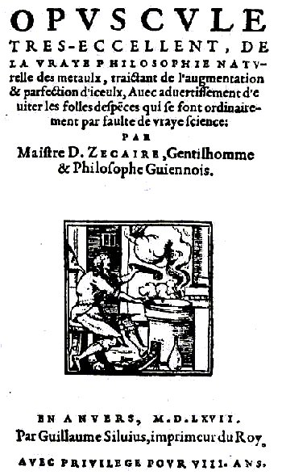
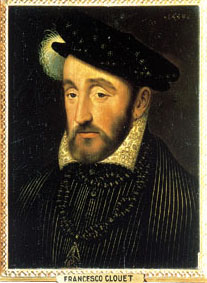
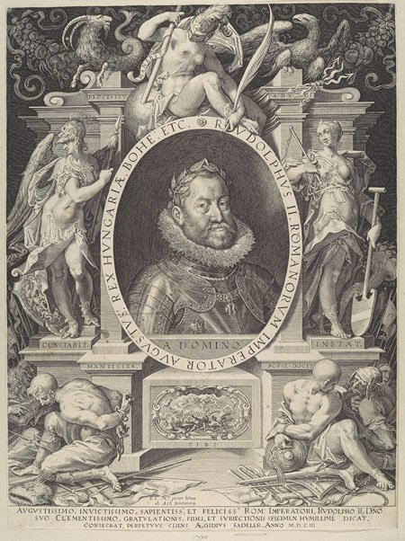
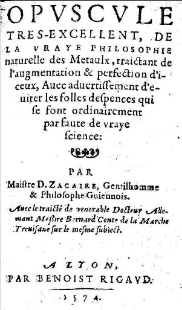

<!DOCTYPE html PUBLIC "-//W3C//DTD HTML 4.01 Transitional//EN">
<html lang="fr">
<head><meta charset="utf-8">

  
  

  
  
  <title>OPUSCULE TRES EXCELLENT DE LA VRAIE PHILOSOPHIE NATURELLE DES METAUX</title>
  <meta content="Denis Zachaire" name="author">

<link rel="stylesheet" href="../barre.css"><script src="../barre.js" defer></script></head>


<body style="background-image: url(back8.gif); direction: ltr;"><div class="replica-note"><a href="../index.html">Hervé Delboy — alchimie</a> · <a href="../sommaire.html">Sommaire</a> · <a href="../recherche.html">Recherche</a> · <a href="../notice.html">Notice</a></div>

<div style="margin-left: 80px; font-family: verdana;">
<div style="text-align: center;"><big><big><span style="font-weight: bold;"><big style="color: rgb(102, 0, 0);">O</big>PUSCULE
TR&Egrave;S EXCELLENT DE LA <big style="color: rgb(204, 102, 0);">V</big>RAIE
<big style="color: rgb(0, 153, 0);">P</big>HILOSOPHIE <big style="color: rgb(51, 153, 153);">N</big>ATURELLE DES <big style="color: rgb(204, 0, 0);">M</big>&Eacute;TAUX</span></big></big><br>

</div>

<br>

<div style="text-align: center;"><big>DENIS ZECAIRE<br>

1560<br>

<br>

</big><br>

<big>
<br>

<br>

</big><small><small><a href="../original/textes-divers.html"></a><a href="../original/intro-alchimie.html"></a></small></small><br>

<big>
<br>

</big>
<div style="text-align: left;"><big><small><small><br>
revu le 2 novembre 2006<br>

<font face="Verdana, Arial, Helvetica, sans-serif"> </font> <br>

</small></small></big><big> </big></div>

<hr style="height: 5px; width: 80%;"></div>

<span style="font-weight: bold;"><br>
Pr&eacute;ambule</span> : ce
trait&eacute;, fondamental dans la litt&eacute;rature alchimique,
n'avait pas reparu depuis des lustres. Aussi faut-il &ecirc;tre
particuli&egrave;rement redevable &agrave; l'&eacute;quipe dynamique du
site <a href="https://web.archive.org/web/20160306070304/http://perso.wanadoo.fr/chrysopee/" target="_blank" rel="noopener"><small>herm&eacute;tisme
et alchimie</small></a> d'avoir pu le faire&nbsp;surgir &laquo; <small style="color: rgb(0, 0, 153);"><span style="font-style: italic;">de
l'obscurit&eacute; &agrave; la lumi&egrave;re</span></small> &raquo; pour remployer
l'image de la <a href="../original/lumiere-tenebres.html"><small><span style="font-weight: bold; font-style: italic;">Lux Obnubilata</span></small></a>.
Il vaut la peine de rappeler certains d&eacute;tails de la vie
extraordinaire de l'Adepte Zachaire, dont maints aspects le rapproche,
&agrave; n'en point douter, de celle de l'illustre Bernard Le
Tr&eacute;visan. Pour cela, nous empruntons les lignes qui suivent
&agrave; Louis Figuier [<small style="color: rgb(0, 102, 0);"><span style="font-weight: bold;"><span style="font-style: italic;">l'Alchimie
et les alchimistes</span>, 3<sup>e</sup> &eacute;dition, Paris, 1880</span></small>],
dont on ne sait pas assez, par suite du d&eacute;nigrement dont il fut
l'objet de la part de certains des disciples d'Herm&egrave;s, son
r&ocirc;le dans le renouveau du sentiment herm&eacute;tique.<br>

<br>

<div style="margin-left: 40px;"><small style="color: rgb(102, 0, 0);">Rien
n'est plus propre &agrave; nous donner une id&eacute;e exacte de la
pers&eacute;v&eacute;rance ou plut&ocirc;t de la passion extraordinaire
que les alchimistes apportaient dans leurs travaux, que la vie si
curieuse et si agit&eacute;e de l'adepte Denis Zachaire. Nous allons en
rappeler les traits principaux. Les d&eacute;tails qu'il nous a
lui-m&ecirc;me transmis sur ce sujet dans la premi&egrave;re partie de
son <span style="font-weight: bold; font-style: italic;">Opuscule de
la philosophie naturelle des m&eacute;taux</span>,
nous
fourniront en m&ecirc;me temps l'occasion de signaler plusieurs
particularit&eacute;s int&eacute;ressantes sur la vie des alchimistes
fran&ccedil;ais au seizi&egrave;me si&egrave;cle. Denis Zachaire
appartenait &agrave; une famille noble de la Guyenne ;
mais son v&eacute;ritable nom est inconnu ; car, &agrave; l'exemple de
beaucoup de ses confr&egrave;res, il s'est abrit&eacute;, dans ses
ouvrages, sous le voile d'un pseudonyme. Il &eacute;tait n&eacute; en
1510. Apr&egrave;s avoir re&ccedil;u la premi&egrave;re instruction
dans la maison paternelle, il fut envoy&eacute; &agrave; Bordeaux pour
y &eacute;tudier les lettres et la philosophie dans le coll&egrave;ge
des Arts. On avait confi&eacute; sa jeunesse &agrave; la surveillance
d'un pr&eacute;cepteur. Malheureusement, ce dernier &eacute;tait un
adepte d'Herm&egrave;s. Au lieu de conduire son &eacute;l&egrave;ve
dans les tranquilles sentiers de la litt&eacute;rature, il ne l'initia
gu&egrave;re qu'aux pratiques du grand oeuvreSuvre. Le jeune Zachaire
fr&eacute;quentait beaucoup d'&eacute;coliers qui, n&eacute;gligeant
comme lui les &eacute;tudes du coll&egrave;ge pour celles du
laboratoire alchimique, avaient d&eacute;j&agrave; fait ample
collection de recettes pour la transmutation des m&eacute;taux. Avant
de quitter Bordeaux, il en avait rempli tout un gros livre, et il
pouvait &agrave; son gr&eacute; fabrique de l'or &agrave; toute
esp&egrave;ce de titres, &agrave; dix-huit ou &agrave; vingt carats, de
l'or de ducat ou de l'or d'&eacute;cu, propre &agrave; soutenir
l'&eacute;preuve de la fonte ou de la pierre de touche. M&ecirc;me
r&eacute;sultat pour l'argent : on pouvait, avec ces bienheureuses
formules, obtenir de l'argent &agrave; dix ou &agrave; onze deniers, de
l'argent blanc de feu ou de l'argent &agrave; la touche. Ces diverses
formules portaient les noms d'oeuvre de la reine de Navarre, oeuvre du
Cardinal de Lorraine ou du Cardinal de Tournon. Les jeunes
&eacute;coliers, au coll&egrave;ge de Bordeaux, employaient une partie
de leur temps &agrave; ces utiles occupations. Au sortir du
coll&egrave;ge des Arts, le jeune Zachaire fut
envoy&eacute; &agrave; Toulouse, en compagnie de son pr&eacute;cepteur,
pour y &eacute;tudier le droit ; mais le ma&icirc;tre et
l'&eacute;l&egrave;ve n'avaient d'autre d&eacute;sir que d'y faire
promptement l'&eacute;preuve des pr&eacute;cieuses recettes de
Bordeaux. Ils se mirent donc d&egrave;s leur arriv&eacute;e &agrave;
placer dans leur chambre plusieurs petits fourneaux propres aux
op&eacute;rations chimiques. Des petits fourneaux on en vint aux
grands, si bien que la chambre en fut bient&ocirc;t remplie. Sur
certains, on distillait ; dans d'autres, on calcinait diverses
mati&egrave;res : ici, l'on ex&eacute;cutait la fusion ; l&agrave;, la
sublimation prescrite par les formules. Au bout d'un an, la somme de
deux cents &eacute;cus, que le jeune Denis avait re&ccedil;ue de ses
parents pour s'entretenir pendant deux ann&eacute;es, lui et son
ma&icirc;tre, en la ville de Toulouse, s'&eacute;tait dissip&eacute;e
en fum&eacute;e. C'est qu'il avait fallu acheter une quantit&eacute;
consid&eacute;rable de charbon, diverses drogues d'un prix
&eacute;lev&eacute;, et pour six &eacute;cus de vaisseaux de verre ;
sans compter deux onces d'or fin et trois marcs d'argent, que l'une des
formules avait recommand&eacute;s comme indispensables &agrave;
l'ex&eacute;cution de l'oeuvreSuvre, et qui finirent par
s'&eacute;vanouir en
entier &agrave; force de combinaisons et de m&eacute;langes. Il ne
faisait gu&egrave;re moins chaud dans la chambre du jeune
licenci&eacute; es droit, que dans les fonderies de l'arsenal de
Venise, et le digne pr&eacute;cepteur, qui ne sortait pas un moment de
cette fournaise, tant il apportait de z&egrave;le et d'ardeur &agrave;
son travail, fut pris, quand vint l'&eacute;t&eacute;, d'une
fi&egrave;vre continue, pour avoir trop souffl&eacute; en buvant chaud.
Il mourut glorieusement sur son champ de bataille, au grand chagrin de
son &eacute;l&egrave;ve, qui comptait sur son habilet&eacute; pour se
procurer l'argent que ses tuteurs commen&ccedil;aient &agrave; lui
refuser. Ainsi livr&eacute; &agrave; lui-m&ecirc;me, Denis Zachaire ne
vit rien
de mieux que de se rendre dans son pays, afin d'obtenir le libre usage
de ses biens, administr&eacute;s par ses tuteurs depuis la mort de son
p&egrave;re. Moyennant quatre cents &eacute;cus, il afferma une partie
de ses propri&eacute;t&eacute;s pour une dur&eacute;e de trois ans, et
s'empressa de revenir &agrave; Toulouse, afin d'appliquer cette somme
&agrave; l'ex&eacute;cution d'une recette infaillible qu'un Italien lui
avait enseign&eacute;e apr&egrave;s en avoir vu de ses propres yeux les
merveilles. Ce proc&eacute;d&eacute; consistait &agrave; dissoudre de
l'or et de l'argent dans une eau forte, et &agrave; calciner le produit
pour en faire une poudre de projection. Mais deux onces d'or et un marc
d'argent, trait&eacute;s pendant deux mois suivant les
proc&eacute;d&eacute;s de l'Italien, ne donn&egrave;rent qu'une poudre
tout &agrave; fait sans vertu. De la quantit&eacute; d'or et d'argent
qu'il avait employ&eacute;e, Zachaire ne put recouvrer qu'un demi-marc
; aussi nous dit-il : &laquo; Tout l'augment que je re&ccedil;us, ce
fut &laquo; &agrave; la fa&ccedil;on de la livre diminuante. &raquo;
Ses quatre cents &eacute;cus se trouv&egrave;rent ainsi r&eacute;duits
&agrave; deux cent trente, et comme l'Italien offrait de se rendre
&agrave; Milan, o&ugrave; se trouvait l'auteur de cette recette, pour
obtenir de lui des &eacute;claircissements complets, Zachaire lui remit
vingt &eacute;cus, et demeura tout l'hiver &agrave; Toulouse pour
attendre son retour. &laquo; Mais, ajoute-t-il, j'y serais encore si je
l'eusse voulu attendre, car je ne le vis depuis. &raquo; Une grande
&eacute;pid&eacute;mie s'&eacute;tant d&eacute;clar&eacute;e
&agrave; Toulouse, Zachaire se d&eacute;cida &agrave; abandonner la
ville ; mais, ne voulant pas se s&eacute;parer de ses amis, compagnons
de ses recherches, il les suivit dans leur pays, &agrave; Cahors. Parmi
eux se trouvait un bon vieillard, adepte blanchi sous le poids du
travail et des ann&eacute;es, et que l'on ne connaissait &agrave;
Toulouse que sous le nom du Philosophe. Zachaire lui communiqua la
collection de ses recettes, et demanda ses conseils, heureux de s'en
rapporter &agrave; l'exp&eacute;rience et au savoir d'un homme qui
avait mani&eacute; tant de simples en sa vie. Le philosophe en nota dix
comme les meilleures : et, six mois apr&egrave;s, &agrave; la cessation
de l'&eacute;pid&eacute;mie, notre jeune adepte &eacute;tant revenu
&agrave; Toulouse, s'empressa de les soumettre &agrave;
l'exp&eacute;rience. Ainsi se passa l'hiver entier : mais aucune des
recettes mises en pratique ne fournit de r&eacute;sultat ; de telle
sorte qu'&agrave; la Saint-Jean ses &eacute;cus se trouv&egrave;rent
r&eacute;duits au nombre de cent soixante-dix. Cet &eacute;chec,
&eacute;prouv&eacute; en d&eacute;pit des conseils du
vieux philosophe, aurait sans doute d&eacute;courag&eacute; le jeune
alchimiste, si une circonstance heureuse n'&eacute;tait fort &agrave;
propos venue lui rendre la confiance et l'espoir. Zachaire avait fait
&agrave; Cahors la connaissance d'un jeune abb&eacute; qui, possesseur,
aux environs de Toulouse, d'une riche pr&eacute;bende, consacrait
honorablement ses loisirs et ses revenus &agrave; la recherche du grand
oeuvreSuvre. Cette conformit&eacute; de go&ucirc;ts avait fait
na&icirc;tre
entre eux une vive sympathie. De retour &agrave; Toulouse,
l'abb&eacute; re&ccedil;ut de l'un de ses amis, attach&eacute; &agrave;
Rome au cardinal d'Armagnac, la communication d'une recette excellente
pour l'oeuvreSuvre herm&eacute;tique. Ce proc&eacute;d&eacute;
consistait
&agrave; chauffer pendant un an de la poudre d'or calcin&eacute; avec
de l'eau-de-vie distill&eacute;e un grand nombre de fois ; son
ex&eacute;cution ne devait entra&icirc;ner qu'une d&eacute;pense de
deux cents &eacute;cus. Les deux amis r&eacute;solurent de
r&eacute;unir, pour cet important travail, leurs efforts ainsi que leur
bourse, et, les termes de cette petite association bien
arr&ecirc;t&eacute;s entre eux, ils se mirent aussit&ocirc;t &agrave;
l'oeuvre. Il importait d'abord de se procurer une eau-de-vie
tr&egrave;s pure.
Ils achet&egrave;rent donc une bonne pi&egrave;ce de vin Gaillac,
qu'ils plac&egrave;rent, pour en retirer l'eau-de-vie, dans un vaste
alambic. On employa un mois &agrave; distiller plusieurs fois cette
eau-de-vie dans le p&eacute;lican ; on la rectifia ensuite dans des
vaisseaux de verre. Ainsi amen&eacute;e &agrave; un haut degr&eacute;
de concentration, l'eau-de-vie leur parut propre &agrave; la
dissolution de l'or. Ils prirent quatre marcs de ce liquide, qu'ils
plac&egrave;rent dans une cornue de verre contenant un marc d'or, que
l'on avait pr&eacute;alablement soumis, pendant un mois, &agrave; une
forte calcination. Cette cornue, plac&eacute;e dans une seconde plus
grande, et tout l'appareil &eacute;tant bien clos, on l'installa dans
un grand fourneau, et l'on se disposa &agrave; entretenir au-dessous le
feu pendant une ann&eacute;e enti&egrave;re. L'abb&eacute; acheta, dans
ce but, pour trente &eacute;cus de menu charbon. En attendant
l'expiration de ce long intervalle, les deux
op&eacute;rateurs occupaient leurs loisirs &agrave; essayer quelques
petits proc&eacute;d&eacute;s qui ne donn&egrave;rent pas d'ailleurs de
meilleur r&eacute;sultat que ne devait en fournir la grande
op&eacute;ration. Au bout d'un an, en effet, les deux amis reconnurent
avec douleur que
l'eau-de-vie n'avait pas dissous un atome d'or. Le m&eacute;tal
&eacute;tait demeur&eacute; au fond de la cornue dans l'&eacute;tat
m&ecirc;me o&ugrave; il y avait &eacute;t&eacute; plac&eacute;. On
essaya de s'en servir comme poudre de projection, en op&eacute;rant sur
du mercure chauff&eacute; dans un creuset, comme l'indiquait la recette
; mais ce fut en vain. On comprend le d&eacute;sappointement des deux
alchimistes. Le plus
contrari&eacute; &eacute;tait l'abb&eacute;, qui, se croyant s&ucirc;r
du r&eacute;sultat, l'avait annonc&eacute; d'avance aux moines de son
couvent, et avait &eacute;crit &agrave; la confr&eacute;rie, la veille
m&ecirc;me de l'op&eacute;ration, qu'il ne restait plus qu'&agrave;
fondre la belle fontaine de plomb qui ornait la cour du
monast&egrave;re pour en tirer des lingots d'or. La belle fontaine fut
donc r&eacute;serv&eacute;e pour une autre occasion : elle ne faillit
point, du reste, &agrave; sa destin&eacute;e, car quelques
ann&eacute;es apr&egrave;s, on la fit passer au creuset d'un alchimiste
ambulant qui &eacute;tait venu montrer son savoir dans l'abbaye.
Cependant, loin de d&eacute;courager l'abb&eacute;, cet &eacute;chec ne
fit que redoubler son ardeur. Pour tenter un grand coup, il proposa
&agrave; Zachaire de se rendre &agrave; Paris avec huit cents
&eacute;cus, dont ils fourniraient chacun la moiti&eacute;, et d'y
continuer l'oeuvreSuvre commune en profitant des lumi&egrave;res des
innombrables artistes herm&eacute;tiques qui remplissaient alors la
capitale de la France. Ayant accept&eacute; la proposition de son ami,
et trouv&eacute;, en affermant ses biens, la somme n&eacute;cessaire,
Zachaire se disposa &agrave; se rendre &agrave; Paris,
d&eacute;cid&eacute; &agrave; perdre tout ou &agrave; d&eacute;couvrir
la pierre philosophale. En vain ses parents essay&egrave;rent-ils de le
dissuader de ce projet.
Pour &eacute;viter leurs remontrances, il pr&eacute;texta que son
voyage n'aurait d'autre but que d'acheter &agrave; la cour une charge
de conseiller. D&egrave;s lors sa famille, qui avait toujours reconnu
en lui l'&eacute;toffe d'un grand l&eacute;giste, ne s'opposa plus
&agrave; son dessein. Zachaire partit de sa province le lendemain de
No&euml;l ; il arriva &agrave; Paris le jour des Rois de l'ann&eacute;e
1539. De toutes les villes d'Europe, Paris &eacute;tait alors la plus
fr&eacute;quent&eacute;e par les alchimistes. Aussi l'adepte de Guyenne
y demeurait-il tout un mois inconnu, perdu dans cette foule immense
d'artistes de tout genre qui s'adonnaient en commun ou en particulier
&agrave; la recherche du grand oeuvreSuvre. Mais, au bout de ce temps,
il
s'&eacute;tait mis en rapport avec un si grand nombre d'ouvriers de
toute profession, tels que fondeurs, orf&egrave;vres, artisans de
divers m&eacute;taux, fabricants de verre et de fourneaux, etc., qu'il
avait fait, gr&acirc;ce &agrave; leur interm&eacute;diaire, la
connaissance de plus de cent adeptes. Il trouva des enseignements
utiles &agrave; &ecirc;tre t&eacute;moin des diverses op&eacute;rations
qu'ex&eacute;cutaient ces derniers : <br>
<br>
&laquo;<span style="font-style: italic; color: rgb(0, 0, 153);"> Les uns, nous dit-il,
travaillaient aux teintures des m&eacute;taux par projection, les
autres par cimentation, les autres par dissolution, les autres par
conjonction de l'essence (comme ils disaient) de l'&eacute;meri, les
autres par longues d&eacute;coctions ; les autres travaillaient
&agrave; l'extraction du mercure des m&eacute;taux, les autres &agrave;
la fixation d'iceux.</span> &raquo;<br>
<br>

Au Moyen Age les alchimistes qui habitaient les grandes villes avaient
l'habitude de se r&eacute;unir tous les jours sous le p&eacute;ristyle
des cath&eacute;drales, afin de se communiquer r&eacute;ciproquement le
r&eacute;sultat et l'&eacute;tat d'avancement de leurs travaux.
L'&eacute;glise de <a href="#" title="lien mort dans l'archive">Notre-Dame-la-Grande</a>,
&agrave; Paris, &eacute;tait
le rendez- vous des gens de cet &eacute;tat, et chaque jour, m&ecirc;me
les dimanches et les f&ecirc;tes, ils se rencontraient sous les
vo&ucirc;tes de la vieille basilique, <br>
<br>
&laquo; <span style="font-style: italic; color: rgb(0, 0, 153);">pour parlementer des
besognes qui s'&eacute;taient pass&eacute;es aux jours
pr&eacute;c&eacute;dents.</span> &raquo; <br>
<br>
On s'assemblait aussi au logis de
l'un d'entre eux. La maison de Zachaire fut quelquefois le lieu de
leurs r&eacute;unions, et c'est l&agrave; que l'on pouvait entendre
s'exhaler &agrave; l'envi les plaintes, les esp&eacute;rances et les
regrets de tous ces hommes ardents, dess&eacute;ch&eacute;s au feu
d'une passion commune, courb&eacute;s sous le poids d'un m&ecirc;me
joug. Cependant ces entretiens ne brillaient point par la
vari&eacute;t&eacute;, car les paroles qu'on y entendait &eacute;taient
toujours les m&ecirc;mes : <br>
<br>
&laquo; <span style="font-style: italic; color: rgb(0, 0, 153);">Les uns, nous dit Zachaire, disaient
: Si nous avions le moyen de recommencer, nous ferions quelque chose de
bon. Les autres : Si notre vaisseau e&ucirc;t tenu, nous &eacute;tions
dedans. Les autres : Si nous eussions eu notre vaisseau de cuivre bien
rond et bien ferm&eacute;, nous aurions fix&eacute; le mercure avec la
lune ; tellement qu'il n'y en avait pas un qui f&icirc;t rien de bon,
et qui ne f&ucirc;t accompagn&eacute; d'excuse. </span>&raquo;<br>
<br>

Il fallait cependant faire un choix parmi un si grand nombre
d'op&eacute;rateurs. Zachaire se d&eacute;cida &agrave; accorder sa
confiance &agrave; un Grec arriv&eacute; pendant l'&eacute;t&eacute;,
et qui pr&eacute;tendait savoir changer en argent le cinabre mis en
forme de clous. Il r&eacute;duisait en poudre trois marcs d'argent, et,
avec un peu d'eau, faisait de cette poudre une p&acirc;te &agrave;
laquelle il donnait la forme de clous ; m&ecirc;lant ensuite ces clous
avec du cinabre pulv&eacute;ris&eacute;, il les faisait
s&eacute;cher dans un vase bien couvert. Ensuite il fondait le tout et
soumettait &agrave; la coupelle le produit de cette fusion. Il restait
alors dans la coupelle plus de trois marcs d'argent,
c'est-&agrave;-dire un poids sup&eacute;rieur &agrave; celui du
m&eacute;tal employ&eacute;. Dans cette op&eacute;ration, il y avait
donc, au dire de l'artiste, production artificielle d'une certaine
quantit&eacute; d'argent. Selon lui, l'argent que l'op&eacute;rateur
avait m&ecirc;l&eacute; au cinabre s'&eacute;tait envol&eacute; en
fum&eacute;e, et celui qui restait provenait de la transmutation du
cinabre. Mais on devine quelle &eacute;tait la v&eacute;ritable nature
de cette op&eacute;ration. Le cinabre (sulfure de mercure) &eacute;tant
volatil, disparaissait au feu du fourneau de coupelle, et s'il y avait
dans certains cas une faible augmentation du poids primitif de l'argent
mis en exp&eacute;rience, ce r&eacute;sultat tenait &agrave; la
pr&eacute;sence accidentelle d'une certaine quantit&eacute; d'argent
dans le cinabre dont on avait fait usage. C'est ce que Zachaire dut
reconna&icirc;tre, mais un peu tard ; car, nous dit-il, <br>
<br>
&laquo; <span style="font-style: italic; color: rgb(0, 0, 153);">si
c'&eacute;tait profit, Dieu le sait, et moi aussi qui d&eacute;pendis
des &eacute;cus plus de trente.</span> &raquo;<br>
<br>

Cette affaire de la transmutation du cinabre fit cependant beaucoup de
bruit parmi les alchimistes parisiens. <br>
<br>
&laquo; <span style="font-style: italic; color: rgb(0, 0, 153);">Cela fut tant connu en
Paris, nous dit Zachaire, qu'avant le No&euml;l suivant, il
n'&eacute;tait fils de bonne m&egrave;re, s'entrem&ecirc;lant de
travailler en la science, qui ne savait, ou n'avait entendu parler des
clous de cinabre ; comme un autre temps apr&egrave;s il fut
parl&eacute; des pommes de cuivre, pour fixer l&agrave; dedans le
mercure avec la lune.</span> &raquo;<br>
<br>
Zachaire, qui n'avait fr&eacute;quent&eacute; jusque-l&agrave; que des
op&eacute;rateurs honn&ecirc;tes, et comme lui, travaillant de bonne
foi, eut bient&ocirc;t l'occasion d'&ecirc;tre initi&eacute; aux
fraudes des faux adeptes. Un gentilhomme &eacute;tranger, venant du
Nord, et qui &eacute;tait peut-&ecirc;tre Venceslas Lavin, arriva
&agrave; cette &eacute;poque &agrave; Paris. Il n'&eacute;tait expert
qu'aux sophistications herm&eacute;tiques, et vivait de ce genre de
ressources, vendant aux orf&egrave;vres les produits de ses
op&eacute;rations suspectes. Zachaire suivit quelque temps la fortune
de cet aventurier, sans vouloir cependant s'associer &agrave; ses
manoeuvreSuvres. Possesseur d'une fortune encore assez belle, et ne
perdant
jamais de vue sa dignit&eacute; de gentilhomme, Zachaire, loin de
chercher &agrave; s'enrichir du commerce de cet &eacute;tranger,
d&eacute;pensait largement avec lui son argent en exp&eacute;riences.
Au bout d'un an, son compagnon consentit enfin &agrave; lui
r&eacute;v&eacute;ler son secret ; mais, comme Zachaire s'en
&eacute;tait bien dout&eacute;, ce secret n'&eacute;tait qu'un leurre.
Cependant il entretenait toujours une correspondance avec son cher
abb&eacute;, le tenant au courant de ses succ&egrave;s et des
progr&egrave;s de son entreprise. Il passa de cette mani&egrave;re
trois ann&eacute;es dans la capitale ; au bout de ce temps, les huit
cents &eacute;cus et d'autres sommes que lui avait envoy&eacute;es
l'abb&eacute; &eacute;taient enti&egrave;rement dissip&eacute;s. Sur
ces entrefaites, Zachaire re&ccedil;ut une lettre de son ami, qui
l'engageait &agrave; revenir sans retard &agrave; Toulouse. Il partit
aussit&ocirc;t, et d&egrave;s son arriv&eacute;e, il fut mis au fait de
la circonstance importante qui avait n&eacute;cessit&eacute; son
d&eacute;part. Le roi de Navarre, Henri II, grand-p&egrave;re de Henri
IV, aimait &agrave; s'occuper d'alchimie. Le bruit des merveilles<br>

<br>

</small>
<div style="text-align: center;"><small style="color: rgb(102, 0, 0);"><br>

<a  name="Henri_II_roi_de_Navarre"></a>Henri II, roi de Navarre<br>

</small></div>

<small style="color: rgb(102, 0, 0);"><br>

r&eacute;alis&eacute;es par le gentilhomme &eacute;tranger, compagnon
de Zachaire, avait p&eacute;n&eacute;tr&eacute; de Paris jusqu'au fond
du B&eacute;arn, et le roi Henri s'&eacute;tait empress&eacute;
d'&eacute;crire &agrave; l'abb&eacute; toulousain, le priant d'envoyer
Zachaire dans ses Etats, avec la promesse d'une r&eacute;compense de
quatre mille &eacute;cus en cas de succ&egrave;s. Ce mot de quatre
mille &eacute;cus avait tellement chatouill&eacute; les oreilles de
l'abb&eacute;, qu'il croyait d&eacute;j&agrave; tenir la somme dans son
escarcelle. Il n'eut point de repos que son cher Zachaire ne se
f&ucirc;t mis en route pour la Navarre. Notre adepte arriva &agrave;
Pau au mois de mai 1542, et fut parfaitement accueilli par le roi. Il
fut cependant oblig&eacute; de demeurer six semaines avant de se mettre
au travail, parce que les simples qu'il fallait cueillir pour le
commencement des op&eacute;rations ne croissaient point au pays de
Navarre. Au bout de ce temps, il se mit &agrave; l'oeuvreSuvre. Mais le
succ&egrave;s r&eacute;pondit mal aux esp&eacute;rances du roi, qui,
m&eacute;content de l'artiste, le renvoya avec un grand merci pour
r&eacute;compense. Et comme Zachaire, se plaignant d'un tel
proc&eacute;d&eacute;, r&eacute;clamait l'ex&eacute;cution des
promesses qu'on lui avait faites, le roi lui fit cette r&eacute;ponse :
<br>
<br>
&laquo; <span style="font-style: italic; color: rgb(0, 0, 153);">Advisez, messire, s'il n'y a rien &laquo;en mes terres qui vous
puisse convenir, tel que &laquo; confiscation, prison ou autre chose
semblable ; je vous les donnerais volontiers.</span> &raquo; <br>
<br>
Zachaire et le
roi de Navarre ne pouvaient s'entendre : l'un demandait un alchimiste
qui le m&icirc;t promptement en possession du secret de faire de l'or ;
l'autre cherchait un roi aux frais duquel il p&ucirc;t continuer ses
exp&eacute;riences tout &agrave; son aise. Aussi l'adepte reprit-il
incontinent le chemin de Gascogne. C'est pendant ce retour que Zachaire eut la fortune de rencontrer le
bienheureux conseiller qui devait le mettre sur la route de la
v&eacute;rit&eacute; qu'il poursuivait depuis si longtemps.
C'&eacute;tait un moine tr&egrave;s savant, vers&eacute; dans toutes
les connaissances de la philosophie naturelle, et qui avait
pass&eacute; sa vie enti&egrave;re sur les &eacute;crits des anciens
ma&icirc;tres. Zachaire l'ayant mis au courant de tous les travaux
qu'il avait ex&eacute;cut&eacute;s jusque-l&agrave;, le savant
religieux le plaignit grandement d'avoir d&eacute;pens&eacute; tant
d'argent et de fatigues en des recherches mal inspir&eacute;es. Il lui
conseilla de s'en tenir d&eacute;sormais &agrave; la m&eacute;ditation
des anciens philosophes, ajoutant qu'il &eacute;tait f&acirc;cheux
qu'un gentilhomme aussi instruit que lui, qui avait fait &agrave;
Bordeaux ses actes de philosophie, et avait &eacute;t&eacute;
re&ccedil;u ma&icirc;tre en cette science, se f&ucirc;t toujours
priv&eacute; des hautes lumi&egrave;res que nous ont transmises sur
cette question les sages des temps pass&eacute;s. Ainsi ramen&eacute;,
par les conseils du bon religieux, dans une voie certaine, Zachaire
s'empressa d'aller rejoindre son ami pour r&eacute;gler
d&eacute;finitivement avec lui les comptes de cette association qui
avait si tristement &eacute;chou&eacute;. Tout
bien calcul&eacute;, il restait une somme de cent quatre-vingts
&eacute;cus, qu'ils partag&egrave;rent loyalement ; apr&egrave;s quoi
l'association fut d&eacute;clar&eacute;e rompue,
&agrave; la grande tristesse de l'abb&eacute;, qui aurait voulu pousser
plus loin l'entreprise, et n'approuvait point le changement de
syst&egrave;me qui s'&eacute;tait op&eacute;r&eacute; dans l'esprit de
son compagnon. Lui, cependant, d&eacute;cid&eacute; &agrave; s'en tenir
d&eacute;sormais &agrave; la m&eacute;ditation et &agrave; la
comparaison des &eacute;crits des anciens philosophes, il prit la
r&eacute;solution de revenir &agrave; Paris pour mettre son projet
&agrave; ex&eacute;cution. Le jour de la Toussaint de l'ann&eacute;e 1546, Zachaire rentra dans la
capitale, o&ugrave; son premier soin fut d'acheter, moyennant dix
&eacute;cus, divers trait&eacute;s philosophiques, tels que la <a href="../original/tourbe.html">Tourbe
des philosophes</a>, la Complainte de Nature [<span style="font-weight: bold; color: rgb(0, 102, 0);">Jehan de Meung</span>], le <a href="../original/verbum.html">bon
Tr&eacute;visan</a> et les oeuvres de <a href="../original/lulle-clavicule.html">Raymond
Lulle</a>. Ayant lou&eacute; une petite chambre au
faubourg Saint-Marceau, il s'y enferma, n'ayant aupr&egrave;s de lui
qu'un petit gar&ccedil;on pour le servir. Puis, sans vouloir
fr&eacute;quenter aucun des adeptes dont fourmillait encore la
capitale, il s'appliqua jour et nuit &agrave; m&eacute;diter sur ses
auteurs. Il employa dix-huit mois &agrave; ce travail p&eacute;nible,
sans r&eacute;ussir n&eacute;anmoins &agrave; s'arr&ecirc;ter
d&eacute;finitivement au choix d'aucun proc&eacute;d&eacute;. Il crut
alors n&eacute;cessaire de se mettre en rapport, non avec les artistes
empiriques qu'il avait fr&eacute;quent&eacute;s sept ans auparavant
dans les r&eacute;unions tenues sous les vo&ucirc;tes de Notre-Dame,
mais avec de v&eacute;ritables philosophes qui op&eacute;raient
d'apr&egrave;s les recommandations des anciens. Cependant leur commerce
ne lui fut que d'une faible utilit&eacute;, en raison de la
diversit&eacute; extr&ecirc;me des proc&eacute;d&eacute;s dont ils
faisaient usage. Ces op&eacute;rateurs employaient en effet des moyens
si nombreux et si oppos&eacute;s que l'esprit courait le risque de
s'&eacute;garer dans leur infinie diversit&eacute;. &laquo; Si l'un,
nous dit Zachaire, travaillait avec l'or seul, l'autre travaillait avec
or et mercure ensemble ; l'autre y m&ecirc;lait du plomb qu'il appelait
sonnant, parce qu'il avait pass&eacute; par la cornue avec de l'argent
vif ; l'autre convertissait aucuns m&eacute;taux en argent vif avec
diversit&eacute; de simples par la sublimation ; l'autre travaillait
avec un atrament noir artificiel, qu'il disait &ecirc;tre la vraie
mati&egrave;re, de laquelle Raymond Lulle usa, pour la composition de
cette grande oeuvre. Si l'un travaillait en un alambic, l'autre
travaillait en plusieurs autres et divers vaisseaux de verre, et
l'autre de cuivre, l'autre de plomb, l'autre d'argent, et aucun en
vaisseaux d'or. Puis l'un faisait sa d&eacute;coction en feu fait de
gros charbons, l'autre de bois, l'autre de raisins, l'autre de chaleur
de &laquo; soleil, et d'autres au bain-marie. &raquo; Cette vari&eacute;t&eacute; d'op&eacute;rations, jointe aux
contradictions continuelles qu'il d&eacute;couvrait dans les anciens
auteurs, avait fini par r&eacute;duire au d&eacute;sespoir le
malheureux alchimiste, lorsque le Saint-Esprit lui inspira, nous
dit-il, la pens&eacute;e d'&eacute;tudier les oeuvres de Raymond Lulle,
et en particulier le Testament et le Codicille de cet auteur. Il
r&eacute;ussit &agrave; adapter si parfaitement ces deux ouvrages avec
une &eacute;p&icirc;tre de Raymond Lulle au roi Robert, et avec un
manuscrit du m&ecirc;me auteur, qu'il tenait du bon religieux, son
conseiller, qu'il fut d&egrave;s ce moment certain d'avoir mis la main
sur le secret tant poursuivi. Tous les livres qu'il consultait
&eacute;taient en concordance parfaite avec son syst&egrave;me, et tel
&eacute;tait, par exemple, le proc&eacute;d&eacute; ou
r&eacute;solution que donne, &agrave; la fin de son <a href="../original/sommaire-rosaire.html">Rosarium</a>, <a href="../original/semita-semitae.html">Arnauld
de Villeneuve</a>, qui fut, comme on le sait, le ma&icirc;tre de
Raymond
Lulle. Zachaire passa un an entier &agrave; m&eacute;diter jour et nuit
sur son proc&eacute;d&eacute; ; au bout de ce temps, il revint &agrave;
Toulouse pour le soumettre &agrave; l'exp&eacute;rience. Il arriva dans
sa province pendant la car&ecirc;me de 1549 ; son premier soin fut de
s'approvisionner de fourneaux et des appareils n&eacute;cessaires, et,
le lendemain de P&acirc;ques, il commen&ccedil;a sa grande
op&eacute;ration.<br>

Cependant sa famille et ses amis ne voyaient pas sans un profond
chagrin toute cette ardeur apport&eacute;e &agrave; un travail inutile,
et les folles d&eacute;penses auxquelles une malheureuse passion
l'avait entra&icirc;n&eacute; depuis sa jeunesse. Il eut &agrave;
endurer de leur part plus d'un reproche amer : <br>
<br>
&laquo;<span style="font-style: italic; color: rgb(0, 0, 153);"> Que
pr&eacute;tendez-vous faire ? lui disait un voisin, et n'avez-vous pas
d&eacute;pens&eacute; assez d'argent en de telles folies ? Prenez garde
qu'&agrave; vous voir acheter ainsi tant de menu charbon, on ne vous
accuse, comme on l'a fait d&eacute;j&agrave;, d'&ecirc;tre auteur de
fausses monnaies.</span> &raquo;  <br>
<br>
&laquo;<span style="font-style: italic; color: rgb(0, 0, 153);"> N'est-il pas &eacute;trange,
reprenait un autre, qu'&eacute;tant docte comme vous l'&ecirc;tes, et
d&eacute;j&agrave; licenci&eacute; &egrave;s droit, vous refusiez
encore de faire profession de la robe longue, afin de parvenir &agrave;
quelque office honorable en la ville ?</span> &raquo; <br>
<br>
Survenaient des parents,
&agrave; qui l'autorit&eacute; de la famille permettait des
remontrances plus s&eacute;v&egrave;res : <br>
<br>
&laquo; <span style="font-style: italic; color: rgb(0, 0, 153);">Pourquoi, lui
disait-on, ne pas mettre un terme &agrave; tant d'inutiles
d&eacute;penses ? Ne vaudrait-il pas mieux payer vos cr&eacute;anciers
ou acheter quelque bonne charge ? Il ne tient &agrave; rien, si vous ne
vous arr&ecirc;tez, que nous n'envoyions en votre logis des gens de
justice pour y briser tout votre attirail d'ustensiles maudits. &raquo;
- &laquo; H&eacute;las ! reprenait un autre, faisant appel &agrave; des
sentiments plus doux, si pour vos parents vous ne voulez rien faire,
ayez au moins &eacute;gard &agrave; vous-m&ecirc;me.
Consid&eacute;rez-vous. A peine &acirc;g&eacute; de trente ans, vous
semblez en avoir cinquante, tant commence &agrave; blanchir votre
barbe, qui vous repr&eacute;sente tout envieilli des longues fatigues
que vous avez endur&eacute;es en la poursuite de vos jeunes folies.</span>
&raquo;<br>
<br>

Tous ces discours ne faisaient qu'ajouter &agrave; l'impatience de
Zachaire ; il les supportait avec d'autant plus de d&eacute;plaisir,
qu'il voyait de jour en jour se perfectionner son oeuvre et s'approcher
l'heure d&eacute;cisive qui devait le payer de tant de travaux et
d'ennuis. Aussi tout demeura impuissant &agrave; l'&eacute;carter de
son but. La peste, qui &eacute;clata &agrave; Toulouse pendant
l'&eacute;t&eacute;, et qui fut si terrible, &laquo; que tout
march&eacute;, tout trafic en fut interrompu, &raquo; ne put l'arracher
du feu de ses fourneaux. Il y demeurait jour et nuit occup&eacute;
&agrave; attendre &laquo; d'une fort grande diligence l'apparition des
trois couleurs que les philosophes ont &eacute;crit devoir
appara&icirc;tre avant la perfection de la divine oeuvre. &raquo; Ces
trois couleurs attendues se montr&egrave;rent enfin aux yeux ravis du
philosophe, indiquant la perfection d&eacute;finitive de la pierre
philosophale. Si bien que le jour de P&acirc;ques de l'ann&eacute;e
1550, avec un peu de cette divine pierre, il convertit, ainsi qu'il
nous assure, du mercure en tr&egrave;s bon or.<br>
<br>

&laquo; <span style="font-style: italic; color: rgb(0, 0, 153);">Si j'en fus aise, ajoute-t-il, Dieu le sait. Si ne m'en
vantais-je pas pour cela ; mais je rendis gr&acirc;ce &agrave; notre
bon Dieu qui m'avait tant fait de faveurs et de gr&acirc;ces par son
Fils notre r&eacute;dempteur J&Eacute;SUS-CHRIST, et le priai qu'il
m'illumin&acirc;t par son Saint-Esprit, pour en pouvoir user &agrave;
son honneur et louange. </span>&raquo;<br>
<br>
D&egrave;s le lendemain, Zachaire se mit en route pour aller annoncer
son triomphe &agrave; son ami et partager avec lui le tr&eacute;sor
apr&egrave;s lequel ils avaient si longtemps soupir&eacute; d'un commun
accord. Il franchit d'un pas joyeux le seuil du monast&egrave;re, et
jeta en entrant un coup d'oeil de regret sur l'emplacement vide de
cette
fontaine de plomb qui aurait si bien servi &agrave; t&eacute;moigner sa
science aux pieux habitants de la maison. Mais une triste nouvelle
l'attendait. Le pauvre abb&eacute; &eacute;tait mort six mois
auparavant, sans avoir &eacute;prouv&eacute; la consolation
supr&ecirc;me que lui apportait son ami. Zachaire voulait au moins
aller t&eacute;moigner sa reconnaissance au docte religieux dont les
conseils lui avaient &eacute;t&eacute; si profitables ; mais le bon
religieux venait aussi de mourir dans un autre couvent o&ugrave; il
s'&eacute;tait retir&eacute;. Zachaire se d&eacute;cida alors &agrave;
passer &agrave;
l'&eacute;tranger pour y terminer en paix une carri&egrave;re qui avait
&eacute;t&eacute; sem&eacute;e de tant de traverses. Il envoya &agrave;
Toulouse un de ses cousins pour y vendre tous ses biens, et payer ses
cr&eacute;anciers avec les sommes provenant de cette vente. Son
d&eacute;sir fut accompli, mais non sans exciter beaucoup de
lamentations et de plaintes de la part de ses parents, qui avaient
depuis longtemps pr&eacute;vu la ruine de cet obstin&eacute;
dissipateur. Ce dernier acte ex&eacute;cut&eacute;, Zachaire quitta la
France en
compagnie de son jeune cousin, et se rendit &agrave; Lausanne pour y
vivre, nous dit-il, &laquo; avec fort petit train, &raquo; ce qui ne
plaide pas en faveur de la v&eacute;rit&eacute; de son affirmation
relative &agrave; la d&eacute;couverte de la pierre philosophale. Nous
pourrions terminer l&agrave; l'histoire de l'adepte Zachaire, que
nous n'avons racont&eacute;e avec tant de d&eacute;tails qu'afin de
montrer par un frappant exemple &agrave; quel degr&eacute; les
chercheurs alchimistes poussaient la patience, leur apanage essentiel.
D'ailleurs, dans la derni&egrave;re partie de sa vie, notre
h&eacute;ros se montrerait moins digne de l'int&eacute;r&ecirc;t qu'il
a pu inspirer &agrave; nos lecteurs. La possession de ce tr&eacute;sor
pr&eacute;tendu semblait troubler ses sens et &eacute;garer sa raison.
Il devint infid&egrave;le &agrave; la promesse qu'il s'&eacute;tait
faite de faire tourner &agrave; l'honneur et &agrave; la louange de
Dieu le nouveau pouvoir qu'il avait acquis. S'abandonnant au courant de
tous les plaisirs, il donna un libre essor &agrave; ses passions,
comprim&eacute;es par l'&acirc;pret&eacute; du travail pendant les
ann&eacute;es de sa jeunesse. Epris &agrave; Lausanne d'une belle jeune
fille, il quitta avec elle la Suisse pour aller mener en Allemagne une
vie de dissipation et de folies. Apr&egrave;s avoir suivi les bords du
Rhin, il s'arr&ecirc;ta &agrave; Cologne en 1556. C'est l&agrave; que
l'attendait un triste sort. Amoureux &agrave; la fois de la jeune
compagne de Zachaire et des tr&eacute;sors qu'il lui supposait, le
tra&icirc;tre cousin l'&eacute;trangla pendant qu'il &eacute;tait
plong&eacute; dans un lourd sommeil occasionn&eacute; par l'ivresse.
Charg&eacute; des d&eacute;pouilles de sa victime, il s'enfuit avec sa
complice. Cet &eacute;v&eacute;nement fit beaucoup de bruit en
Allemagne ; mais on ne put retrouver les traces de l'assassin.
Mardoch&eacute;e de D&eacute;lie, le po&egrave;te de la cour de
Rodolphe II, composa plus tard sur ce sujet une pi&egrave;ce de vers
que nous rapporterions ici, si nous ne craignions de donner une
id&eacute;e peu favorable des m&eacute;rites de la po&eacute;sie
herm&eacute;tique.</small><br>

</div>

&nbsp;<br>

De nombreux d&eacute;tails, repris par Figuier, avaient
d&eacute;j&agrave; &eacute;t&eacute; d&eacute;velopp&eacute;s par
Eug&egrave;ne Chevreul [<small style="color: rgb(0, 102, 0);"><span style="font-weight: bold;">cf. section <a href="../original/cambriel.html">Cambriel</a>
et <a href="../original/liber-artephius.html">Artephius</a></span></small>].
Le point fondamental de ce trait&eacute; - dont le titre se rapproche
d'un ouvrage apocryphe de Basile Valentin - est de donner des
pr&eacute;cisions sur la pr&eacute;paration des perles et des pierres
pr&eacute;cieuses [<small style="color: rgb(0, 102, 0);"><span style="font-weight: bold;">cf. <a href="#" title="lien mort dans l'archive"><span style="font-style: italic;">Diamants et pierres pr&eacute;cieuses</span></a>
de Louis Dieulafait</span></small>].
Un autre point d&eacute;velopp&eacute; par Zachaire est le
d&eacute;veloppement du concept d'agent et de patient : nous avons eu
l'occasion d'approfondir ce point
de science sur lequel Fulcanelli a &eacute;t&eacute; fort disert dans
les <small><span style="font-style: italic; font-weight: bold;">Demeures
Philosophales</span></small>
; il met en exergue ce point important, qu'il faut que l'or alchimique
puisse disposer d'un receptacle idoine : c'est l&agrave; un important point
de doctrine qui donne un peu de lumi&egrave;re sur l'un des grands
secrets de l'alchimie [<small style="color: rgb(0, 102, 0);"><span style="font-weight: bold;">voyez &agrave; cet &eacute;gard les
citations de Fulcanelli dans notre <a href="../original/reincrud.html">r&eacute;incrudation</a></span></small>].
Dans la <a href="../original/lumiere-tenebres.html"><small><span style="font-weight: bold; font-style: italic;">Lux Obnubilata</span></small></a>,
Crasselame l'a fort bien vu :<br>

<br>

&laquo; <small style="color: rgb(102, 0, 0);"><span style="font-style: italic;">[...]
Zachaire parle aussi fort doctement dans son Opuscule, de l'Argent vif
vulgaire comme &eacute;tant priv&eacute; de cet agent externe, et nous
enseigne qu'il n'est demeur&eacute; tel que nous le voyons, que parce
que la nature ne lui a pas joint son propre agent. Que se peut-il de
plus clair et de plus intelligible ? Si donc l'Or et l'Argent vif
vulgaires sont destitu&eacute;s de leur agent propre, que</span><span style="font-style: italic;"> pouvons-nous esp&eacute;rer de bon de
leur cuisson ?</span></small> &raquo;<br>

<br>

La triste fin de Zachaire rappelle, par ailleurs, &agrave; maints
&eacute;gards, le tragique destin d'Alexandre Sethon : car Zachaire fut
assassin&eacute; dans le but &eacute;vident qu'on voulait lui soutirer
ses secrets [<small style="color: rgb(0, 102, 0);"><span style="font-weight: bold;">Sendivogius
&eacute;pousa la veuve de Sethon dans le but d'essayer de lui soutirer
d'&eacute;ventuels secrets que son mari lui aurait l&eacute;gu&eacute;s
avant de dispara&icirc;tre, cf. <a href="../original/cosmopolite-0.html">Alexandre
Sethon</a></span></small>].
Si Zachaire fait donc aussi figure de martyre de la science
d'Herm&egrave;s, ne voit-on pas que son nom - Zacharie &agrave; peine
dissimul&eacute; - augurait d&eacute;j&agrave; peut-&ecirc;tre la
fatalit&eacute; ? [<small style="color: rgb(0, 0, 153);">Cf. notre <a href="../original/st-jean-baptiste.html">saint Jean
Baptiste</a></small>].
Quoi qu'il en soit, cette fin tragique a &eacute;t&eacute;
racont&eacute;e en 1600 par Mardoch&eacute;e de Delle, historiographe
&agrave; la cour de l'empereur alchimiste Rodolphe II d'allemagne (1576
- 1612) [<small style="color: rgb(0, 102, 0);"><span style="font-weight: bold;">cf. <a href="../original/atalanta-fugiens.html"><span style="font-style: italic;">Atalanta fugiens</span></a></span></small>].<br>

<br>

<div style="text-align: center;"><br>

<small><a  name="Rodolphe_II"></a>Rodolphe II</small><br>

</div>

<br>

Sur les <a href="../original/chevreul-hoefer.html">d&eacute;tails biographiques</a>
de Zachaire, nous renvoyons &agrave; la critique de l'<small><span style="font-weight: bold; font-style: italic;">Histoire de la Chimie</span></small>
de F. Hoefer par <a href="../original/plan-chevreul.html">Chevreul</a>.
Son nom n'est &eacute;videmment qu'un pseudonyme et l'anonymat de ce
vrai disicple d'Herm&egrave;s n'a pu jusqu'ici &ecirc;tre perc&eacute;,
cf. Tenney L. Davis : <small><span style="font-weight: bold; font-style: italic;">The Autobiography of
Denis Zachaire</span></small>, in <span style="font-style: italic;">Isis</span>,
nov. 1925, vol. 8, 2 pp. 287-299.<br>

<br>

L'<small><span style="font-weight: bold; font-style: italic;">Opuscule </span></small>a
&eacute;t&eacute; publi&eacute; pour la premi&egrave;re fois &agrave;
Anvers en 1567, avec de nombreuses r&eacute;&eacute;ditions, dont celle
de 1612 qui figure dans le tome II de la <a href="../original/bibliot-phil-chim.html"><small><span style="font-weight: bold; font-style: italic;">Biblioth&egrave;que des
Philosophes Chymiques</span></small></a> de Salmon. Cyliani n'a pas
oubli&eacute; la le&ccedil;on de Zachaire et il le cite dans son <small><span style="font-weight: bold; font-style: italic;">Herm&egrave;s
D&eacute;voil&eacute;</span></small> : il ajoute qu'il a trouv&eacute;
le moyen : <br>

<br>

&laquo;<small style="color: rgb(102, 0, 0);"><span style="font-style: italic;">
... de faire le verre mall&eacute;able, des perles et des pierres
pr&eacute;cieuses plus belles que celles de la nature en suivant le
proc&eacute;d&eacute; indiqu&eacute; par [Denis] Zachaire et se servant
du vinaigre et de la</span><span style="font-style: italic;">
mati&egrave;re fix&eacute;e au blanc, et de grains de perles ou de
rubis pil&eacute; tr&egrave;s fins, les moulant puis les fixant par le
feu dela mati&egrave;re...</span></small>&raquo;<br>

<br>

Sur le verre mall&eacute;able, on consultera tout ce qu'en a dit <a href="../original/atalanta-xv.html">Sainte Claire Deville</a>. Dans ce trait&eacute;, Zachaire ne d&eacute;passe pas le degr&eacute;
d'argumentation habituel des livres alchimiques : tout n'y est dit que
fort obscur&eacute;ment et de fa&ccedil;on prolixe. Plusieurs auteurs
sont sp&eacute;cialement cit&eacute;s : Arnauld de Villeneuve et son <small><span style="font-weight: bold; font-style: italic;">Grand Rosaire</span></small> ; Raymond Lulle [<small style="color: rgb(0, 102, 0);"><span style="font-weight: bold;"><span style="font-style: italic;">Testament</span>, dont on peut lire l'<a href="../original/elucidation.html"><span style="font-style: italic;">&Eacute;lucidation</span></a>
dans ce site</span></small>] ; la <a href="../original/tourbe.html"><small><span style="font-weight: bold; font-style: italic;">Tourbe</span></small></a> et <a href="../original/calid-morien.html">Morien</a>. Bernard Le Tr&eacute;visan [<small style="font-weight: bold;"><a href="../original/verbum.html">1</a>, <a href="../original/phil-met-trev.html">2</a></small>]
- ce qui n'est pas tr&egrave;s &eacute;tonnant - est &eacute;galement
cit&eacute; &agrave; plusieurs reprises. Ce n'est qu'en de (trop) rares
moments que Zachaire abaisse sa garde sur
trois th&egrave;mes :<br>

<br>
a)- le concept de patient et agent ; [<small style="color: rgb(0, 0, 153);">cf. ma <a href="../original/orthelius.html">philosophie et alchimie</a> l&agrave;-dessus</small>]<br>
b)- soufre blanc et soufre rouge ;<br>
c)- pr&eacute;paration des pierres pr&eacute;cieuses artificielles. Mais
cette partie n'est, h&eacute;las, que bien peu d&eacute;velopp&eacute;e.<br>
<br>
Voici enfin quelques notes de John Ferguson sur Zachaire [<small style="color: rgb(0, 0, 153);"><span style="font-weight: bold;">Bibliotheca chemica</span>, II, pp. 561-563</small>] :<br>
<br>
<div style="margin-left: 40px;"><small style="color: rgb(0, 0, 153);">ZACAIRE (Denis)<br>
<br>
- Von der nat&uuml;rlichen Philosophia, vnd Verwandlung der Metallen in
Gold vnd Silber, durch das h&ouml;chste nat&uuml;rliche Geheimnifs vnd
Kunstst&uuml;ck, so man den lapidem Philosophorum nennet, drey Tractat,
erstlich in Franz&ouml;sischer Sprach beschrieben. Durch den Edlen,
Ehrnvesten, Hochgelarten Herrn Dionysium Zacharium, einen
Franz&ouml;sischen Edelman, vnd der Rechten Doctorem, welcher anno
1550. den lapidem selbst, wie er meldet, gemacht. Jetzund aber allen
kunstliebenden Deutzschen zur Warnung vnd Anleitung, auff den rechten
einigen Weg, die Metallen zu verwandeln, in Deutsche Sprach gebracht,
vnd mit kurtzen Summarien erkl&auml;ret. Durch M. Georgium Forbergern
von der Mitweide aufs Meissen. Gedruckt zu Hall in Sachsen, durch
Erasmum Hynitzsch.&nbsp;&nbsp; In Verlegung Joachimi
Kr&uuml;sicken.&nbsp;&nbsp;M.DC.IX.<br>
<br>
8&deg;.&nbsp;&nbsp;&nbsp; Pp. [126, 2 blank]. Other German editions: Dresden u. Leipzig, 1724, Wien, 1774.<br>
<br>
- Von der nat&uuml;rlichen Philosophia und Verwandlung der Metallen in
Gold und Silber, durch das h&ouml;chste nat&uuml;rliche Geheimnifs und
Kunstst&uuml;ck, so man den Lapidem Philosophorum nennet, drey
Tractate, erstlich in franz&ouml;sischer Sprache beschrieben durch den
Hochgelahrten Herrn Dionysium Zacharium, einen franz&ouml;sischen
Edelmann, und der Rechten Doctorem, welcher Anno 1550. den Lapidem
selbst, wie er meldet, gemacht; Jetzund aber allen kunstliebenden
Deutschen zur Warnung und Anleitung, auf den rechten einigen Weg, die
Metallen zu verwandeln, in deutsche Sprach gebracht, und mit kurzen
Summarien erkl&auml;ret, durch M. Georgium Forbergern, von der Mitweide
aus Meifsen. Frankfurt und Leipzig, bey Johann Paul Kraufs.&nbsp;1773.<br>
<br>
8&deg;.&nbsp;&nbsp; Pp. 135 [1 bIank],<br>
<br>
- Opuscule Tr&egrave;s-Excellent, de la vraye Philosophie naturelle des
M&eacute;taux. Traictant de l'augmentation &amp; perfection d'iceux.
Auec vn aduertissement d'euiter les folles despenses qui se font par
faute de vraye science.&nbsp;Par Maistre D. Zacaire Gentilhomme
Guiennois. Plus le traitt&eacute; de M. Bernard Allemand Compte de la
Marche Treuisane. Derni&egrave;re &eacute;dition reueu &amp;
corrig&eacute; de nouueau. A Lyon, Chez Pierre Rigaud, en rue
Merci&egrave;re, au coing de rue Ferrandiere &agrave; l'enseigne de la
Fortune.&nbsp;&nbsp; M.DCXII.<br>
<br>
16&deg;.&nbsp;&nbsp;&nbsp; Pp. 280 [3, 1 blank].&nbsp;&nbsp; Vignette of&nbsp;an&nbsp;alembic and receiver.<br>
<br>
- Opuscule de la philosophie naturelle des M&eacute;taux,<br>
See <a href="../original/bibliot-phil-chim.html">RICHEBOURG</a> (j. m. D.), Biblioth&egrave;que des Philosophes Chimiques, 1740, ii. p. 447-<br>
<br>
- Das Buch der nat&uuml;rlichen Philosophey der Metallen.<br>
<br>
See DARIOT (CLAUDE), Die gulden Arch, Schatz und Kunstkammer, 1614, Th. iii., p. 169.<br>
See Er&ouml;ffnete geheimnisse des Steins der Weisen, 1708, p. 727.<br>
<br>
- Opusculum philosophiae naturalis metallorum.<br>
<br>
See DORN (GERARD), Trevisanus de Chymico miraculo, 1600, p. 49.<br>
See THEATRUM&nbsp;CHEMICUM, l659, i. p. 710.<br>
See <a href="../original/bibliot-phil-chim.html">MANGET</a> (j. j.), Bibliotheca Chemica Curiosa, 1703, ii. p. 336.<br>
<br>
Denis Zacalre (or Zeccaire) was born in Guierme in 1510. He was
educated by a man who was an alchemist, studied taw in Toulouse, went
to Paris and made the acquaintance of alchemists there. After long
study of Arnold, Bemhard, Lully and the ' Turba,' he transmuted mercury
into gold in 1550, He married, started on travel, but when he reached
Cologne he was murdered in his sleep by his servant, who escaped with
his wife and his store of transmuting powder. The story was tersely but
dramatically told in verse by De Delle, the Court poet of <a href="#Rodolphe_II">Rudolph II</a>., and it was printed in S&ouml;ldner's <span style="font-weight: bold;">Keren Happuch</span>, and then in <span style="font-weight: bold;">Die Edelgeborne Jungfer Alchymia</span>, in the <span style="font-weight: bold;">Beytrag</span>, by Schmieder, Gmelin, and Kopp. His story has been treated as a historical romance by Percy Ross.<br>
A pother has been raised over the ' <span style="font-style: italic;">Annotate quiedam ex Nicolao Klamello Auctore Gallo</span>,'
which follow the work of Zacaire in Dom's edition of 1583 and of 1600
(q.v.). It has been pointed out as a smart critical observation that
Flamel could not be the author, because he lived nearly two hundred
years before Zacaire. But the critics forget that Paul Lucas reported
Flamel alive in 1713, so that there could be no time difficulty in the
way of his commenting much later writers than Zacaire.The point,
therefore, is not whether Flamel lived&nbsp;before Zacaire, but whether
he died after him! But without discussing such recondite questions, the
whole difficulty is based upon a blunder, which the critics have
overlooked to their confusion. The Annotations merely happen to be
printed after Zacairc's work in Dorn's edition, and the whole of Dorn's
collection as it stands (except Dorn's&nbsp;preface)&nbsp;was swept
into&nbsp;the <a href="../original/bibliot-phil-chim.html">Theatrum Chemicum</a>,
1659, i. pp. 683-794 q.v.), (or, 1602, i,&nbsp;
PP.&nbsp;773-901;&nbsp;1613, i. PP. 748-869).&nbsp;When Manget made his
reprint he modified this title (p. 350) to&nbsp; '<span style="font-style: italic;">Nicolai&nbsp;Flamelli Galli Commentarius in Dionysii Zacharii Opusculum Chemicum</span>'
without justification, and the anachronism involved was pointed out by
Gmelin, who said they were certainly by a later
writer.&nbsp;Schmieder's view is that the '<span style="font-style: italic;">Annotata ex Flamello</span>'
are comments by Zacaire on Flamell. These&nbsp; writers have overlooked
the fact that in Dorn's edition (and in the above quoted reprints) a
great many 'annotationes' by other writers &mdash; not having any
connection with Zacaire at all &mdash; have simply been slumped by the
editor, or printer, under Flannel's name.<br>
<br>
</small></div>

<br>

Le temps nous manquant, il n'est pas question d'approfondir le texte de
la m&ecirc;me fa&ccedil;on que les autres. Le lecteur trouvera donc, en
renvoi hypertexte, les textes qui lui permettront d'aller plus loin...<br>
<br>

<br>

<div style="text-align: center;"><br>

</div>

<br>

<hr style="height: 5px; width: 80%;"><br>

<br>

<br>

<a  name="Au_lecteur_d&eacute;bonnaire"></a>Au lecteur d&eacute;bonnaire<br>

Salut en J&eacute;sus Christ<br>

<br>

Combien que tous ceux qui ont &eacute;crit en cette divine oeuvre
justement et &agrave; bon droit appel&eacute;e philosophie naturelle,
ayant express&eacute;ment d&eacute;fendu la profanation et divulguation
d'icelle, si est ce ami lecteur, qu'ayant lu et relu par diverses et
continuelles lectures les livres des philosophes naturels, et
pens&eacute; ordinairement &agrave; l'interpr&eacute;tation des
contradictions, figures, comparaisons, &eacute;quivoque et divers
&eacute;nigmes qui apparaissent en nombre infini en leurs livres, je
n'ay voulu sceller et cacher la r&eacute;solution qu'en ay peu faire
apr&egrave;s avoir longuement travaill&eacute; aux sophistications et
maudites recettes, ou pour parler plus proprement de cette, lesquelles
j'ai &eacute;t&eacute; un temps plus enferm&eacute; et envelopp&eacute;
qu'oncque D&eacute;dalus ne fut en son labyrinthe.&nbsp; Mais enfin,
par continuelle lecture des bons auteurs et approuvez en la Science,
j'ai dit avec Geber en sa Somme, retournant en nous m&ecirc;me et
consid&eacute;rant la vrai voie et fa&ccedil;on de laquelle nature use
sous terre &agrave; la procr&eacute;ation des m&eacute;taux, avons
connu la vraie et parfaite mati&egrave;re laquelle nature a
pr&eacute;par&eacute;e pour les parfaire sur terre ainsi que
l'exp&eacute;rience, gr&acirc;ces au seigneur Dieu qui m'a fait tant de
faveur et gr&acirc;ces par son cher fils et notre r&eacute;dempteur
J&eacute;sus Christ, m'a puis apr&egrave;s certifi&eacute; comme je
dirai plus amplement en la <a href="#LA_PREMIERE_PARTIE.">premi&egrave;re
partie</a> de mon pr&eacute;sent
opuscule, o&ugrave; je d&eacute;clarerai la fa&ccedil;on par laquelle
je suis parvenu &agrave; la vrai connaissance de ce divine oeuvre. Car
en la<a href="#LA_SECONDE_PARTIE"> seconde</a> je montrerai de quels
auteurs&nbsp; j'ai us&eacute; en
mon &eacute;tude, r&eacute;digeant leurs autorit&eacute;s en bon ordre
et vraie m&eacute;thode, afin de mieux conna&icirc;tre la
propri&eacute;t&eacute; et explication des termes de la Science.&nbsp;
Et en la <a href="#LA_TIERCE_PARTIE">tierce et derni&egrave;re partie</a>,
je d&eacute;clarerai la
pratique de telle sorte qu'elle sera cach&eacute;e aux ignorants et
montr&eacute;e comme au doigt aux vrais enfants de la Science, pour
lesquels je me suis grandement pein&eacute; &agrave; mettre et
r&eacute;diger le tout en meilleur ordre qui m'a &eacute;t&eacute;
possible, ne voulant point imiter en cela plusieurs qui nous ont
pr&eacute;c&eacute;dez, lesquels ont &eacute;t&eacute; tant envieux du
bien public et amateurs de la particularit&eacute;, qu'ils n'ont voulu
d&eacute;clarer leur mati&egrave;re que sous diverses et variables
all&eacute;gories, non pas seulement montrer leurs livres, comme j'en
ay connu un de mon temps qui tenait tant chers et cachez des papiers
qu'il avait recouverts d'un gentilhomme v&eacute;nitien que lui
m&ecirc;me osait regarder &agrave; demi, se faisant croire que notre
grand oeuvre devait un jour sortir de l&agrave; sans s'en tourmenter
d'avantage que la garder bien dans un coffre bien ferm&eacute;. Mais
telle mani&egrave;re de gens doivent savoir que ce oeuvre tant divine
ne
nous est point donn&eacute;e par cas fortuit, ainsi que disent les
philosophes quant ils reprennent ceux qui travaillent &agrave;
cr&eacute;dit comme font presque tous les op&eacute;rateurs
d'aujourd'hui. Desquels je ne doute point que ne soie aigrement
reprints et tax&eacute; pour avoir publi&eacute; mon pr&eacute;sent
opuscule, disant que je fais une grande folie de publier ainsi mon
oeuvre m&ecirc;me en langage vulgaire, attendu qu'il n'y a science qui
sait aujourd'hui tant ha&iuml;e du commun populaire que ceci. Mais pour
leur r&eacute;pondre Je veux premi&egrave;rement qu'ils sachent s'ils
ne l'ont encore connu, que ce divine philosophie n'est point en la
puissance des hommes. Moins ne peut &ecirc;tre connue par leurs livres
si notre bon Dieu ne l'inspire en nos coeurs par son Saint Esprit ou
par
l'organe de quelque homme vivant, comme je prouverai bien amplement
&agrave; la seconde partie de mon opuscule ; tant s'en faut donc que je
la publie par ce mien petit trait&eacute;. Et quant &agrave; ce que je
l'ay mise en langage vulgaire, qu'ils sachent que je n'ay riens fait en
ceci de nouveau, mais plut&ocirc;t imit&eacute; nos auteurs anciens,
lesquels ont tous &eacute;crit en leur langue, combien que depuis aient
&eacute;t&eacute; traduits en autres langues, comme Hamec philosophe
h&eacute;breu en langage hebraique, Thebot, Haly philosophes
chald&eacute;en en leur langue Chald&eacute;e ; Hom&egrave;re,
D&eacute;mocrite, Th&eacute;ophrastus et tant d'autres philosophes
grecs en leur langue grecque ; Abu Haly, Geber, Avicenne, philosophes
arabes en leur langue arabique ; Rasis, <a href="../original/calid-morien.html">Morienus</a>,
<a href="../original/lulle-clavicule.html">Raimondu</a>s et
plusieurs autres philosophes latins en la langue latine afin que leurs
successeurs connussent ce divine science avoir &eacute;t&eacute;
baill&eacute;e aux gens de leur nation.&nbsp; Si donc j'ai imit&eacute;
tous ces auteurs et plusieurs autres en leurs &eacute;crits, ce n'est
pas de merveilles si les ensuit en leur fa&ccedil;on d'&eacute;crire ;
afin m&ecirc;mement que ceux qui sont aujourd'hui vivants et qui nous
suivrons apr&egrave;s, connaissent que notre beno&icirc;t Dieu a voulu
par sa sainte et divine mis&eacute;ricorde de gratifier en cela notre
bon pais de Guyenne, comme il a fait d'autres fois les autres nations,
au temps m&ecirc;mement que le tout &eacute;tait troubl&eacute; en
icelle par la mutinerie et r&eacute;voltement des Bordelais qui avaient
tu&eacute; leur lieutenant de roi , ensemble pour la grande peste qui
survint bient&ocirc;t apr&egrave;s cela. Et quant &agrave; ce qu'ils
disent que notre Science est haye du commun populaire, ce n'est pas
elle. Car la v&eacute;rit&eacute; &eacute;tant premi&egrave;rement
connue a &eacute;t&eacute; toujours aim&eacute;e. Ainsi, ce sont leurs
tromperies et fausses sophistications, comme je d&eacute;clarerai plus
amplement en la premi&egrave;re partie. Mais, diront ils, puisque je
n'exprime bien clairement toutes les choses requises &agrave; la
composition de notre divin oeuvre afin que tous ceux qui verront mon
pr&eacute;sent opuscule y puissent travailler assur&eacute;ment, quel
profit en rapporteront les lisant ? Je deys grand et double profit.
Premi&egrave;rement, qui est aujourd'hui l'homme qui saurait exprimer
ni d&eacute;clarer le grand bien qu'on d&eacute;pend ordinairement en
la France &agrave; la poursuite de ses maudites sophistications ?
Desquelles, si c'est le bon plaisir de Dieu qu'ils en soient
retir&eacute;s, mettant fin &agrave; tant de folles d&eacute;penses par
la lecture de mon opuscule, ne serait ce pas en rapporter un grand
profit? Sans compter le second, que les bons et fid&egrave;les lecteurs
en rapporteront en rangeant leur &eacute;tude selon la vraie
m&eacute;thode que j'en ai baill&eacute; en la seconde partie. Et si
Dieu leur fait tant de gr&acirc;ces qu'ils en puissent faire telle
r&eacute;solution que je dirai ci apr&egrave;s, la tierce ne leur sera
pas inutile pour avoir entr&eacute;e et grand acc&egrave;s &agrave; ce
divine pratique. Je dis divine pour ce qu'elle est telle que
l'entendement des hommes ne l'a peut comprendre de soi, fussent-ils les
plus grand philosophes qui surent jamais, comme donne assez &agrave;
entendre Geber quand il taxe ceux qui veulent travailler en
consid&eacute;rant seulement les causes naturelles et la seule
op&eacute;ration de nature : En cela, dit il, taillent les
op&eacute;rateurs d'aujourd'hui pour ce qu'ils pensent ensuivre nature,
laquelle notre art ne peut imiter du tout. Cessent donc,
d&eacute;sormais, tels et semblables calomniateurs, lesquels je veux
avertir qu'ils ne se peinent point &agrave; la lecture de mon
pr&eacute;sent opuscule. Car ce n'est point pour eux que je l'ay
compos&eacute;, mais pour les enfants b&eacute;n&eacute;voles, dociles
et amateurs de notre Science ; lesquels je supplie tr&egrave;s
humblement qu'avant se prendre &agrave; travailler, ils aient
r&eacute;solu en leur entendement toutes et chacun des
op&eacute;rations n&eacute;cessaires &agrave; la composition de notre
divin oeuvre, et icelles adapt&eacute;es tellement aux sentences,
contradictions, &eacute;nigmes et &eacute;quivoque qu'on trouve aux
livres des philosophes&nbsp; qu'ils ni trouvent aucune contradiction ni
vari&eacute;t&eacute; quelconque,&nbsp; Car c'est le vrai moyen pour
conna&icirc;tre la v&eacute;rit&eacute; et principalement en ce divine
philosophie, comme trop mieux a &eacute;crit Rasis, disant celui qui
sera paresseux &agrave; lire nos livres ne sera jamais prompt &agrave;
pr&eacute;parer les mati&egrave;res . Car l'un livre d&eacute;clare
l'autre et ce que d&eacute;faut en l'un est ajout&eacute; en l'autre ;
pour ce qu'il ne se faut jamais attendre (et ce par jugement divin) de
trouver tout l'accomplissement de notre divin oeuvre &eacute;crit et
d&eacute;clare par ordre, ainsi que a tr&egrave;s bien &eacute;crit
Aristote au roi Alexandre, r&eacute;pondant &agrave; sa pri&egrave;re :
Il n'est pas licite, dit il, demander chose qui ne sait permis
l'octroyer. Comment donc penses tu que j'&eacute;crive au long en
papier ce que les coeurs des hommes ne pourraient porter s'il
&eacute;tait r&eacute;dig&eacute; par &eacute;crit, donnant assez
&agrave; entendre par le refus qu'il faisait au roi son ma&icirc;tre,
qu'il est d&eacute;fendu par l'ordonnance divine de publier notre
Science en termes tels qu'ils soient entendus du commun.&nbsp; Pourquoi
j'adjure par la pr&eacute;sente tous ceux qui par le moyen de mon
pr&eacute;sent opuscule, parviendront &agrave; la vraie connaissance de
ce divin oeuvre, qu'ils la manient tellement que les pauvres en soient
nourris, les oppress&eacute;s relev&eacute;s d'affaires, les
ennuy&eacute;s soulag&eacute;s, pour l'amour de notre bon Dieu qui leur
aura communiqu&eacute; un si grand bien, duquel je les prie encore un
coup reconna&icirc;tre le tout et comme venant de lui, en user selon
ses saints commandements. Ce faisant, il fera qu'ils
prosp&eacute;reront en leurs affaires ; comme du contraire, il
permettra que le tout sait &agrave; leur confusion.&nbsp; Je te supplie
donc, ami fid&egrave;le, qu'en lisant nos livres, tu&nbsp; aies
toujours ce bon Dieu en ton entendement, pour ce que tout bien descend
de lui, et sans l'aide duquel il n'y a rien de parfait en ce bas monde.
Tant s'en faut qu'on puisse parvenir &agrave; la connaissance de ce
grand et admirable bien si son saint Esprit ne nous est baill&eacute;
pour guide. Il comme de vrai il le sera si l'avarice ne te men&eacute;,
et que tu sais vrai z&eacute;lateur de J&eacute;sus Christ. Auquel sait
louange et gloire es si&egrave;cles des si&egrave;cles. Ainsi sait il.<br>

&nbsp;<br>

<span style="font-weight: bold;"><a  name="LA_PREMIERE_PARTIE."></a>LA
PREMIERE PARTIE.<br>

<br>

</span><small style="color: rgb(102, 0, 0);">
En laquelle l'auteur d&eacute;clare la fa&ccedil;on par laquelle il est
parvenu &agrave; la connaissance de ce divin oeuvre.</small><br>

<br>

<a href="../original/table-hermes.html">Herm&egrave;s</a> justement appelle
Trism&eacute;giste qui est
commun&eacute;ment interpr&eacute;t&eacute; trois fois-grand, auteur et
premier proph&egrave;te des philosophes naturels, apr&egrave;s avoir vu
par exp&eacute;rience la certitude et v&eacute;rit&eacute; de ce divine
philosophie, a tr&egrave;s bien et &agrave; bon droit laiss&eacute;
par, &eacute;crit que n'eut &eacute;t&eacute; la crainte qu'il avait du
jugement universelle, que le souverain Dieu doit faire de toutes
cr&eacute;atures raisonnables es derniers jours &agrave; la
consommation du monde, qu'il n'eut jamais laiss&eacute; riens par
&eacute;crit de ce divine science, tant il l'a estim&eacute;e (et
&agrave; juste occasion) grande et admirable.&nbsp; En ce opinion ont
&eacute;t&eacute; tous les auteurs principaux qui l'ont suivi. Qui est
la cause qu'ils ont tous &eacute;crit leurs livres de telle sorte,
comme dit <a href="../original/prima-materia.html">Geber</a> en sa Somme [<small style="color: rgb(0, 102, 0);"><span style="font-weight: bold;"><span style="font-style: italic;">Somme de Perfection</span>, ouvrage
apocryphe en deux volumes, attribu&eacute; &agrave; Paul de Tarente, cf. <a href="../original/prima-materia.html">prima materia</a></span></small>], qu'ils concluent toujours
&agrave; deux
parties, afin de faire faillir les ignorants et d&eacute;clarer dessous
ce vari&eacute;t&eacute; d'opinions, leur intention principale aux
enfants de la Science. Lesquels il convient errer du commencement afin,
disent ils, que l'ayant acquise avec grand peine et travail de corps et
d'entendement, ils la tiennent plus ch&egrave;re et plus
secr&egrave;te. Ce que de vrai est une grande occasion pour ne la
publier point, pour ce qu'il y faut une peine indicible &agrave;
l'acqu&eacute;rir, sans compter les frais et d&eacute;penses qui sont
fort grandes avant pouvoir parvenir &agrave; la parfaite connaissance
de ce divin oeuvre ; je parle de ceux qui n'ont autre ma&icirc;tre que
les livres, attendant l'inspiration de notre bon Dieu, comme j'ai
&eacute;t&eacute; l'espace de dix ans.<br>

Car premi&egrave;rement pour compter le vrai ordre du temps et la
fa&ccedil;on comment je y suis parvenu, &eacute;tant &acirc;g&eacute;e
de vingt ans ou environ, apr&egrave;s avoir &eacute;t&eacute; instruit
par la sollicitude et diligence de mes parents, aux principes de
grammaire en notre maison, je fus envoy&eacute; par iceux Bordeaux,
pour ou&iuml;r les arts au coll&egrave;ge, pour ce qu'il y
avait ordinairement des ma&icirc;tres fort savants. O&ugrave; je fus
trois ans &eacute;tudiant presque toujours en la philosophie. En
laquelle je profitai tellement, par la gr&acirc;ce de Dieu et
sollicitude d'un mien ma&icirc;tre particulier que mes parents
m'avaient baill&eacute;, qu'il sembla bon &agrave; touts mes amis et
parents, pour ce que pendant ce temps j'avais perdu p&egrave;re et
m&egrave;re qui me d&eacute;laiss&egrave;rent tout seul, que je fusse
envoy&eacute; &agrave; Toulouse, sous la charge de mon dit
ma&icirc;tre, pour &eacute;tudier aux lois.&nbsp; Mais je ne parti pas
de Bordeaux que je ne pris accointance avec que d'autres
&eacute;coliers qui avaient divers livres de recettes ramass&eacute;es
de plusieurs, lesquels me surent familiers pour ce que mon ma&icirc;tre
s'entrem&ecirc;lait d'y travailler. Je ne fus pas si paresseux que je
laissasse une seule feuille &agrave; doubler de tous les livres que je
pouvais recouvrer. De sorte qu'avant d'aller &agrave; Toulouse, j'en
avais un livre bien grand et gros de l'&eacute;paisseur de trois
doigts, o&ugrave; j'avais &eacute;crit plus de projections un poix sur
dix, un autre sur vingt, sur trente, avec force tierceletz et
m&eacute;decines pour le rouge, l'un &agrave; dix huit carats, l'autre
&agrave; vingt, l'autre &agrave; or d'&eacute;cus, l'autre &agrave; or
de ducat, d'autre pour en faire de plus haute couleur que jamais n'en
fut. Les uns devaient soutenir les fontes, les autres la touche, les
autres tous jugements, et d'autres infinies sortes, de m&ecirc;me pour
le blanc, si bien que l'un devait venir &agrave; dix deniers, l'autre
&agrave; unze, l'autre &agrave; argent de teston, l'autre blanc de feu,
l'autre &agrave; la touche.&nbsp; De sorte qu'il me semblait, si
j'avais une fois le moyen de pratiquer la moindre des dites recettes,
que je serais le plus heureux homme du monde. Et principalement de
teintures que j'avais recouvertes les unes portaient le titre
d'&ecirc;tre l'oeuvre de la Reine de Navarre, les autres du feu
Cardinal
de Loraine, les autres du Cardinal de Tournon et d'autres infini noms,
afin, comme j'ai connu depuis, qu'on y ajout&acirc;t plus de fois,
comme de vrai je faisait pour lors.&nbsp; Car incontinent que je fus
&agrave; Toulouse, je me pris &agrave; dresser des petits fours,
&eacute;tant avou&eacute; du tout par mon ma&icirc;tre. Puis des petits
je devins aux grand, si bien que j'en avais une chambre toute
entourn&eacute;e, les uns pour distiller, d'autres pour sublimer,
d'autres pour calciner, d'autres pour faire dissoudre dans le bain
marie, d'autres pour fondre.&nbsp; De sorte que pour mon entr&eacute;e,
je d&eacute;pendis en un an deux cens &eacute;cus qu'on nous avait
baillez pour nous entretenir deux ans aux &eacute;tudes, tant &agrave;
dresser des fours que &agrave; acheter du charbon, diverses et infinies
drogues, divers vaisseaux de verre desquels j'en achetais pour six
&eacute;cus &agrave; la fois, sans compter les deux onces d'or qui se
perdaient &agrave; pratiquer l'une des recettes, deux et trois marcs
d'or &agrave; l'autre. Ou bien si parfais s'en recouvrait, que sait
bien peu, il &eacute;tait aigre et noirci tellement de force de
m&eacute;langes que les dites recettes commandaient y mettre, qu'il
&eacute;tait presque du tout inutile. Si bien que &agrave; la fin de
l'ann&eacute;e, mes deux cens &eacute;cus s'en all&egrave;rent en
fum&eacute;e. Et mon ma&icirc;tre mourut d'une fi&egrave;vre quarte
continue [<small style="color: rgb(0, 102, 0);"><span style="font-weight: bold;">Bernard le Tr&eacute;visan signale qu'il faillit mourrir d'une fi&egrave;vre quarte, cf. <a href="../original/phil-met-trev.html">Philosophie naturelle des m&eacute;taux</a></span></small>] qui lui print l'&eacute;t&eacute; de force de souffler et de
boire chaud, pour ce qu'il ne partait gu&egrave;res de la chambre pour
la grande ennuie qu'il avait de faire quelque chose de bon, o&ugrave;
il ne faisait gu&egrave;res moins de chaud que dedans l'arsenal de
Venise en la fonte des artilleries. La mort duquel me fut grandement
ennuyeuse, car mes prochains parents refusaient me bailler argent plus
que ne m'en faillait pour m'entretenir aux &eacute;tudes ; et moi ne
d&eacute;sirais autre chose que avoir le moyen pour continuer.&nbsp; Ce
qui me contraignit aller vers ma maison pour me sortir de la charge de
mes curateurs, afin d'avoir le maniement de tous mes biens paternels,
lesquels j'arr&ecirc;tais pour trois ans &agrave; quatre cens
&eacute;cus pour avoir le moyen de mettre sur une recette entre autre,
qu'un Italien m'avait baill&eacute;e &agrave; Toulouse et assur&eacute;
en avoir vu l'exp&eacute;rience.&nbsp; Lequel je retins avec moi pour
voir la fin de sa recette pour laquelle pratiquer il me fallut acheter
deux marcs d'or et un marc d'argent, lesquels &eacute;tant fondus
ensemble nous f&icirc;mes dissoudre avec eau forte, puis les
calcin&acirc;mes par &eacute;vaporation, nous essayant &agrave; les
dissoudre avec d'autres diverses&nbsp; distillations par tant de fois
que deux mois pass&egrave;rent avant que notre poudre fut preste pour
en faire projection ; de laquelle nous en us&acirc;mes comme mandait la
dite recette, mais ce fut en vain. Car tout l'augment que j'en
re&ccedil;u, ce fut &agrave; la fa&ccedil;on de la livre diminuante.
Car de tout l'or et l'argent que je y avais mis, n'en recouvris qu'un
marc et demi sans compter les autres frais qui ne surent petits ; si
bien que mes quatre cens &eacute;cus revinrent &agrave; deux cens
trente, desquels j'en baillis &agrave; mon Italien vingt, pour aller
trouver l'auteur de la dite recette qu'il disait &ecirc;tre &agrave;
Milan, afin de nous redresser. Par ainsi je fus &agrave; Toulouse tout
l'hiver, attendant son retour. Mais je y serais encore si je l'eusse
voulu attendre, car je ne le vis oncque depuis.&nbsp; Cependant,
l'&eacute;t&eacute; vint accompagn&eacute; d'une grande pestilence qui
nous fit abandonner Toulouse. Et pour ne laisser des compagnons que je
connaissais, m'en allai &agrave; Cahors o&ugrave; je fus six mois,
durant lesquels je n'oubliai pas &agrave; continuer mon entreprise. Et
m'accompagnais d'un bon vieil homme qu'on appelait commun&eacute;ment
le philosophe, auquel je montrais mes brouillard, lui demandant conseil
et advis pour voir quelles recettes lui semblaient &ecirc;tre les plus
apparentes, lui m&ecirc;mement qui avait mani&eacute; tant de simples
en sa vie ; lequel m'en marqua dix ou douze qui &eacute;taient &agrave;
son advis les meilleures. Lesquelles je commen&ccedil;ai &agrave;
pratiquer incontinent que fus retourn&eacute; &agrave;&nbsp; Toulouse
pr&egrave;s la f&ecirc;te de Toussaints, apr&egrave;s que le danger de
la peste fut pass&eacute; et cess&eacute;. Si bien que tout l'hiver
passa tandis que je pratiquais les dites recettes, desquelles j'en
rapportais tel et semblable fruit que des premi&egrave;res, de sorte
que pr&egrave;s la teste de la saint Jehan je trouvai mes quatre cens
&eacute;cus augmentez et devenus &agrave; cent soixante dix, non que
pour cela je cessasse de poursuivre toujours mon entreprise. Et pour
mieux la pouvoir continuer je m'associ&eacute; avec un abb&eacute;
pr&egrave;s de Toulouse qui disait avoir le double d'une recette pour
faire notre grand oeuvre, qu'un sien ami qui suivait le Cardinal
d'Armagnac, lui avait envoy&eacute; de Rome, laquelle il tenait toute
assur&eacute;e. Mais il faillait deux cens &eacute;cus pour la faire,
desquels j'en fournis les cents et lui l'autre moiti&eacute;, et
commen&ccedil;&acirc;mes &agrave; dresser les nouveaux fourneaux, tous
de diverse fa&ccedil;on, pour y travailler. Et pour ce qu'il fallait
avoir d'une eau de vie fort souveraine pour dissoudre un marc d'or,
nous avons achet&eacute; pour la bien faire une fort bonne pi&egrave;ce
de vin de Gaillac, duquel nous tir&acirc;mes notre eau avec un
p&eacute;lican bien grand, de sorte que dans un mois nous m&ecirc;mes
de l'eau pass&eacute;e par diverses fois, plus que n'en avions besoin ;
puis nous fallut avoir divers vaisseaux de verre pour la purifier et
subtilier d'avantage.&nbsp; De laquelle nous en m&icirc;mes quatre
marcs dedans deux grandes cornues de verre bien &eacute;paisses,
o&ugrave; &eacute;tait le marc de l'or que nous avions
premi&egrave;rement calcin&eacute; par un mois, &agrave; grand force de
feu de flambe. Et dress&acirc;mes ces deux cornues l'une dans l'autre,
lesquelles &eacute;tant bien lutt&eacute;es nous m&ecirc;mes sur deux
fours ronds et grands, et achet&eacute;s pour trente &eacute;cus de
charbon tout &agrave; un coup pour entretenir le feu au dessous des
dites cornues un an entier, durant lequel nous essay&acirc;mes toujours
quelque petite recette, desquelles nous rapport&acirc;mes autant de
profit comme de la grande oeuvre, laquelle nous eussions gard&eacute;
jusque &agrave; pr&eacute;sent si eussions voulu&nbsp; attendre qu'elle
se fut congel&eacute;e au milieu du col des cornues, comme promettait
la recette, et non sans cause car toutes cong&eacute;lations sont
pr&eacute;c&eacute;d&eacute;es des dissolutions.&nbsp; Et nous ne
travaill&acirc;mes point en la mati&egrave;re due, pour ce que ce n'est
pas l'eau qui dissout notre or, comme de vrai l'exp&eacute;rience nous
le monstre. Car nous avons trouv&eacute; tout l'or en poudre comme l'y
avions mis, fors qu'elle &eacute;tait quelque peu plus
d&eacute;li&eacute;e. De laquelle nous f&icirc;mes projection sur de
l'argent vif chauff&eacute;, en ensuivant sa recette, mais ce fut en
vain. Si nous en fumes marris, je le vous laisse &agrave; penser,
m&ecirc;mement Monsieur l'abb&eacute; qui avait d&eacute;j&agrave;
publi&eacute; &agrave; ses moines (fort bons secr&eacute;taires
publics) qu'il ne restait que &agrave; faire fondre une belle fontaine
de plomb qu'ils avaient en leur claistre pour la convertir en or,
incontinent que notre besogne serait faite et achev&eacute;e. Mais ce
fut pour une autre fois qu'il la fit fondre pour avoir le moyen de
faire travailler, en vain, un Allemand qui passa &agrave; son abbaye
quand j'&eacute;tais &agrave; Paris.&nbsp; Combien que pour cela il ne
cess&acirc;t de vouloir continuer son entreprise, et me conseilla que
je devais me mettre au devoir pour recouvrer trois ou quatre cens
&eacute;cus et qu'il en fournirait autant pour m'en aller demeurer
&agrave; Paris (ville aujourd'hui la plus fr&eacute;quent&eacute;e de'
divers op&eacute;rateurs en ce science que autre qui sait en toute
l'Europe) et l&agrave; m'accointer avec;. tant de fa&ccedil;on de gens,
pour travailler avec eux que je rencontrasse quelque chose de bon pour
le d&eacute;partir entre nous deux comme fid&egrave;les fr&egrave;res.
Et ainsi l'arr&ecirc;t&acirc;mes, de sorte que j'arr&ecirc;tais
derechef tout mon bien et m'en allai &agrave; Paris avec huit cens
&eacute;cus en la bourse, d&eacute;lib&eacute;r&eacute; de n'en partir
que tout cela je n'eusse d&eacute;pendu ou que je n'eusse trouv&eacute;
quelque chose de bon. Mais ce ne fut pas sans encourir la mauvaise
gr&acirc;ce de tous mes parents et amis qui ne tachaient qu'&agrave; me
faire&nbsp; conseiller de notre ville pour ce qu'ils avaient opinion
que je fusse grand l&eacute;giste. Si est ce que nonobstant leur
pri&egrave;re (apr&egrave;s leur avoir fait accroire que j'allais
&agrave; la court pour en acheter un &eacute;tat je partis de ma maison
le lendemain de No&euml;l et arrivai &agrave; Paris trois jours
apr&egrave;s les Rais, o&ugrave; je fus un mois durant presque inconnu
de tous.&nbsp; Mais apr&egrave;s que j'eu commenc&eacute; &agrave;
fr&eacute;quenter les artisans comme orf&egrave;vres, fondeurs,
vitriers, faiseurs de fourneaux et divers autres, je m'accoint&icirc;s
tellement de plusieurs qu'il ne fut pas un mois pass&eacute; que je
n'eusse connaissance &agrave; plus de cent op&eacute;rateurs. Les uns
travaillaient aux teintures des m&eacute;taux par projection, les
autres par cimentation , les autres par dissolution, les autres par
conjonction de l'essence (comme ils disaient) de l'&eacute;meri, les
autres par longues d&eacute;coctions, les autres travaillaient &agrave;
l'extraction des mercures des m&eacute;taux, les autres &agrave; la
fixation d'iceux. De sorte qu'il ne passait jour m&ecirc;mement les
testes et dimanches, que ne nous assemblassions ou au logis de
quelqu'un et fort souvent au mien, ou &agrave; Notre Dame la Grand, qui
est l'&eacute;glise la plus fr&eacute;quent&eacute;e de Paris pour
parlementer des besognes qui s'&eacute;taient pass&eacute;es aux jours
pr&eacute;c&eacute;dents. Les uns disaient : si nous avions le moyen
pour y recommencer nous ferions quelque chose de bon ; les autres : si
notre vaisseau eut tenu, nous &eacute;tions dedans ; les autres : si
nous eussions eu notre vaisseau de cuivre bien rond et bien
ferm&eacute;, nous avions fix&eacute; le mercure avec la lune.
Tellement qu'il n'y en avait pas un qui f&icirc;t rien de bon et qui ne
fut accompagn&eacute; d'excuses. Combien que pour cela je ne me
h&acirc;tasse gu&egrave;res a leur pr&eacute;senter argent, sachant
d&eacute;j&agrave; et connaissant tr&egrave;s bien les grandes
d&eacute;penses que j'avais faites auparavant &agrave; cr&eacute;dit
et sur l'assurance d'autrui. Toutefois, durant l'&eacute;t&eacute; il
vint un Grec qu'on estimait fort savant homme, lequel s'adressa
&agrave; un tr&eacute;sorier que je connaissais, lui promettant faire
de fort belles besognes. Laquelle connaissance fut cause que je
commen&ccedil;ai &agrave; foncer comme lui pour an-ester (ainsi qu'il
disait) le mercure du cinabre,&nbsp; Et pour ce qu'il avait besoin
d'argent fin en limaille, nous en achet&acirc;mes trois marcs et les
f&icirc;mes limer ; duquel il en faisait de petit&nbsp; doux avec une
p&acirc;te artificielle et les m&ecirc;lait avec le cinabre
pulv&eacute;ris&eacute;, puis les faisait de cuire dans un vaisseau de
terre bien couvert pour certain temps. Et quant ils &eacute;taient bien
secs, il les faisait fondre ou les passait par la coupelle, tellement
que nous trouvions trois marcs et quelque peu d'avantage d'argent fin
qu'il disait &ecirc;tre sorti du cinabre&nbsp; ; et que ceux que nous y
avions mis d'argent fin s'&eacute;taient voliez en fum&eacute;e. Si
s'&eacute;tait profit. Dieu le sait, et moi aussi qui y
d&eacute;pendis&nbsp; des &eacute;cus plus de trente;<br>

Toutefois, il assurait toujours qu'il y avait du gain. De sorte
qu'avant No&euml;l suivant, cela fut tant connu en Paris, qu'il
n'&eacute;tait pas fils de bonne m&egrave;re s'entrem&ecirc;lant de
travailler en la science, c'est &agrave; dire aux sophistications, qui
ne savait ou avait entendu parler des clous du cinabre, comme un autre
temps apr&egrave;s, fut parl&eacute; des pommes de cuivre pour fixer la
dedans le mercure avec la lune. Tandis que ces jeunesses passaient, un
gentilhomme &eacute;tranger arriva, grandement expert aux
sophistications, si bien qu'il en faisait profit ordinairement et
vendait sa besogne aux orf&egrave;vres, avec lequel je m'accompagna le
plus t&ocirc;t qu'il me fut possible, mais ce ne fut pas sans
d&eacute;pendre, afin qu'il ne me pensais point souffreteux. Toutefois,
je demeurai pr&egrave;s d'un an en sa compagnie avant qu'il me
voul&ucirc;t d&eacute;clarer rien. Enfin, il me montra son secret qu'il
estimait fort grand, combien que de vrai il ne fut rien de profit.
Cependant, j'avertis mon abb&eacute; de tout ce que j'avais peu faire,
m&ecirc;me lui envoyai le double de la pratique du dit gentilhomme. Il
me &eacute;crivit qu'il ne tint point &agrave; faute d'argent que je ne
demeurasses encore un an &agrave; Paris, attendu que j'avais
trouv&eacute; un tel commencement, lequel il estimait fort grand contre
mon opinion, pour ce que j'avais r&eacute;solu en moi de n'user jamais
de mati&egrave;re qui ne demeurant toujours telle comme apparaissait au
commencement, ayant d&eacute;j&agrave; tr&egrave;s bien connu qu'il ne
se faillait tant peiner pour &ecirc;tre m&eacute;chant et s'enrichir au
dommage d'autrui.&nbsp; Pourquoi continuant toujours mon entreprise, je
y demeurai un an, fr&eacute;quentant les uns puis les autres de quoi
l'on avait opinion qu'ils eussent quelque chose de bon ; et deux ans
que je y avais demeur&eacute; auparavant surent trois ans. Or, j'avais
d&eacute;pendu la plus grand part de l'argent que j'avais, quand je
re&ccedil;u les nouvelles de mon abb&eacute;, qui me mandait que
incontinent apr&egrave;s avoir vu sa lettre, je l'allasse trouver. Ce
que je fis, pour ce que ne le voulais d&eacute;dire en rien comme nous
avions jure et promis ensemble. Quant je fut arriv&eacute;, je trouvai
des lettres que le Roi de Navarre (qui &eacute;tait grandement curieux
en toutes choses de bon esprit) lui avait &eacute;crit, qu'il fis de
sorte, s'il avait jamais d&eacute;lib&egrave;re faire rien pour lui,
que je allasse &agrave; Pau en B&eacute;arn pour lui apprendre le
secret que j'avais appris du dit gentilhomme et d'autres qu'on lui
avait rapport&eacute; que je savais, car il me ferait fort bon
traitement et me r&eacute;compenserait de trois ou quatre mil
&eacute;cus. Ce mot de quatre mil &eacute;cus chatouilla tellement les
oreilles de l'abb&eacute;, que se faisant croire qu'il les avait
d&eacute;j&agrave; en sa bourse, il n'eut jamais cess&eacute; que ne
fusse parti pour aller, &agrave; Pau, o&ugrave; j'arrivai au mois de
May et demeurai sans travailler environ six semaines, pour ce qu'il
fallut trouver les simples ailleurs. Mais quant j'eu achev&eacute;,
j'en re&ccedil;u telle r&eacute;compense que je m'attendais. Car encore
que le roi eut bon vouloir de me, faire dire bien, je mettais du bon
traitement que je re&ccedil;u en son pays, si fais bien de
l'amiti&eacute; bonne et grande que je connu d'aucuns gentil hommes de
sa court en mon endroit, mais bien peu en nombre, si est ce
qu'&eacute;tant d&eacute;tourn&eacute; par des plus grand de sa court,
m&ecirc;me de ceux qui avaient &eacute;t&eacute; cause de ma venue en
icelle, il me renvoya avec un grand merci. Et que j'avisasse, s'il y
avait riens en ses terres qui fut en sa puissance me donner comme
confisque ou autre chose semblable, qu'il la me donnerait volontiers.
Ce r&eacute;ponse me fut tant ennuyeuse que sans m'attendre &agrave;
ses belles promesses pour en avoir &eacute;t&eacute; nourri d'autres
fois &agrave; mes d&eacute;pens, je m'en retournai vers
l'abb&eacute;.&nbsp; Mais pour ce que j'avais oui parler d'un docteur
religieux qui &eacute;tait estim&eacute; et &agrave; bon droit fort
savant en la philosophie naturelle, je passai le voir en m'en revenant.
Lequel me d&eacute;tourna grandement de toutes ces sophistications et
&acirc;pres qu'il connu que j'avais &eacute;tudi&eacute; en la
philosophie et fait les actes de ma&icirc;tre en icelle &agrave;
Bordeaux ainsi que je lui dis, il me dit d'un fort bon z&egrave;le
qu'il me plaignait grandement de ce que n'avais recouvr&eacute; de bons
livres des philosophes anciens qu'on peut recouvrir ordinairement,
avant qu'eusse d&eacute;pendu tant de temps et tant d'argent &agrave;
cr&eacute;dit en ses maudites et malheureuses sophistications. Je lui
parlai de la besogne que j'avais faite, mais il me sut tr&egrave;s bien
dire ce que c'&eacute;tait et que ne soutenait point beaucoup d'essais.
Si me d&eacute;tournai tellement de toutes ces sophistications pour
m'occuper &agrave; la lecture des livres des anciens et savants
philosophes, afin de pouvoir conna&icirc;tre leur vraie mati&egrave;re
en laquelle seule g&icirc;t toute la perfection de la science, que je
m'en allai trouver mon abb&eacute; pour lui rendre compte des huit cens
&eacute;cus qu'avions mis ensemble, et lui communiquer la moiti&eacute;
de la r&eacute;compense que j'avais eue du Roi de Navarre. &Eacute;tant
donc arrivai vers lui je lui comptai le tout, de quoi il fut grandement
marri. Et encore plus de ce que je ne voulais continuer l'entreprise
commenc&eacute;e avec lui, pour ce qu'il avait opinion que je fusse bon
op&eacute;rateur. Toutefois, ces pri&egrave;res ne purent tant en mon
endroit que je n'ensuivisse le conseil du bon docteur, pour les grandes
et apparentes raisons qu'il avait adductes quant je parlai &agrave;
lui. Et lui ayant rendu compte de tous les frais que j'avais fait, il
nous resta quatre vingt dix &eacute;cus &agrave; chacun. Et le
lendemain apr&egrave;s, nous d&eacute;part&icirc;mes . Je m'en allai en
ma maison d&eacute;lib&eacute;r&eacute; d'aller &agrave; Paris, et ne
bougeai l&agrave; d'un logis que je n'eusse fait quelque
r&eacute;solution par la lecture de divers livres des philosophes
naturels pour travailler &agrave; notre grand oeuvre, ayant
donn&eacute;
cong&eacute; &agrave; toutes ces sophistications. Pourquoi,
apr&egrave;s que j'eu recouvr&eacute; argent d'avantage de mes
an-entiers, je m'en allai &agrave; Paris o&ugrave; j'arrivai le
lendemain de la Toussaints en l'ann&eacute;e 1546. Et l&agrave;
j'achet&eacute; pour dix &eacute;cus de livres en la philosophie tant
des anciens que des modernes. Une partie desquels &eacute;taient
imprimez et les autres &eacute;crits de main comme la Tourbe des
philosophes. Le Bon Tr&eacute;visan, La Complainte de Nature et autres
divers trait&eacute;s qui n'ont jamais &eacute;t&eacute; imprimez. Et
ayant lou&eacute; une petite chambre aux faux bourgs Saint Martial, fus
l&agrave; un an durant, avec un petit gar&ccedil;on qui me servait,
sans fr&eacute;quenter personne, &eacute;tudiant jour et nuit en ces
auteurs.&nbsp; Si bien que au bout d'un mois je faisais une
r&eacute;solution, puis une autre, puis l'augmentais, puis la changeais
presque de tout, en attendant que je en fisse une o&ugrave; n'y ,eut
point de vari&eacute;t&eacute; ni contradiction aux sentences des
livres des philosophes. Toutefois je passai toute l'ann&eacute;e et une
partie de l'autre sans pouvoir gagner cela sur mon &eacute;tude, que je
pusse faire aucune enti&egrave;re et parfaite r&eacute;solution.
&Eacute;tant en ce perplexit&eacute;, je me tournai mettre &agrave;
fr&eacute;quenter ceux que je savais qui travaillaient &agrave; ce
divin oeuvre. Car je ne hantais plus tous les autres op&eacute;rateurs
que je avais connu auparavant, travaillant &agrave; ces maudites
sophistications.&nbsp; Mais si j'avais contrari&eacute;t&eacute; en mon
entendement, sortant de l'&eacute;tude elle &eacute;tait
augment&eacute;e en consid&eacute;rant les diverses et variables
fa&ccedil;ons de quoi ils travaillaient. Car si l'un travaillait avec
l'or seul, l'autre avec l'or et mercure ensemble, l'autre y
m&ecirc;lait du plomb qu'il appelait sonnant pour ce que l'avait
pass&eacute; par la cornue avec de l'argent vif, l'autre convertissait
aucuns m&eacute;taux en argent vif avec diversit&eacute; de simples par
sublimations, l'autre travaillait avec un attrament noir artificiel
qu'il disait &ecirc;tre la vraie mati&egrave;re de laquelle Raymond
Lulle usa pour la composition de ce grande oeuvre.&nbsp; Si l'un
travaillait en un alambic, l'autre travaillait en plusieurs autres
et divers vaisseaux de verre, l'autre d'airain, l'autre de cuivre,
l'autre de plomb, l'autre d'argent, et les autres en vaisseau d'or.
Puis l'un faisait sa d&eacute;coction au feu fait de gros charbon,
l'autre de boys, l'autre de raisin, l'autre &agrave; la chaleur du
soleil et d'autres au bain marie. De sorte que leur
vari&eacute;t&eacute; d'op&eacute;rations avec les contradictions que
je voyais aux livres m'avaient presque caus&eacute; un
d&eacute;sespoir. Lorsque inspir&eacute; de Dieu par son Saint Esprit,
je commen&ccedil;ais &agrave; revoir d'une fort grande diligence les
oeuvres de Raymond Lulle et principalement son Testament et Codicile,
lesquels je adaptais tellement avec une &eacute;p&icirc;tre qu'il
&eacute;crivit en son temps au Roi Robert et &agrave; un brouillard que
j'avais recouvr&eacute; du dit docteur, auquel il &eacute;tait inutile,
que j'en fis une r&eacute;solution en tout contraire &agrave; toutes
les op&eacute;rations que j'avais vu auparavant, mais telle que je ne
lisais rien en tous les livres qui ne s'adapt&acirc;t fort bien
&agrave; mon opinion ; m&ecirc;mement la r&eacute;solution que Arnault
de Villeneuve a faite au fonds de son grand Rosaire, qui fut
ma&icirc;tre de Raymond Lulle en ce science. Tellement que je demeurais
environ un an apr&egrave;s sans faire autre chose que lire et penser
jour et nuit &agrave; ma r&eacute;solution, en attendant que le terme
de l'acensement que j'avais fait de mon bien fut pass&eacute; pour m'en
aller travailler chez moi, o&ugrave; j'arrivai au commencement de
Car&ecirc;me, d&eacute;lib&eacute;r&eacute; de pratiquer ma dite
r&eacute;solution, pendant lequel je fis provision de tout ce que
j'avais besoin et dressai un four pour travailler.&nbsp; Si bien que le
lendemain de P&acirc;que, je commen&ccedil;ai, mais ce ne fut pas sans
avoir divers emp&ecirc;chements, desquels (j'en sais les principaux),
de mes prochains voisins, parents et amis. L'un me disait : Que vouliez
vous faire ? N'avez vous pas assez d&eacute;pendu &agrave; ces folies?
L'autre m'assurait que si je continuais d'acheter tant de menu charbon,
qu'on soup&ccedil;onnerait de moi que je faisais de la fausse monnaie,
comme ils avaient d&eacute;j&agrave; ou&iuml; parler. Puys venait un
autre me disant que tout le monde, m&ecirc;me les plus grand de notre
ville, trouvait fort &eacute;trange que je ne faisais profession de la
robe longue , attendu que j'&eacute;tais licenci&eacute; es lais, pour
parvenir &agrave; quelque &eacute;tat honorable en la dite ville.&nbsp;
Les autres qui m'&eacute;taient de plus pr&egrave;s, me
tan&ccedil;aient ordinairement, disant pourquoi je ne mettais fin
&agrave; ces folles d&eacute;penses et qu'il me vaudrait mieux
&eacute;pargner l'argent pour payer mes cr&eacute;anciers ou pour
acheter quelque office, me mena&ccedil;ant qu'ils feraient venir la
justice en ma maison pour me rompre le co&ucirc;t. D'avantage, disaient
ils, si vous ne voulez riens faire pour nous, ayez &eacute;gard
&agrave; vous m&ecirc;me ; consid&eacute;rez que &eacute;tant jeune de
trente ans ou environ, vous en ressembl&eacute;s avoir cinquante, tant
se commence votre barbe &agrave; m&ecirc;ler qui vous
pr&eacute;sente&nbsp; tout envieilli de la peine qu'avez endur&eacute;e
&agrave; la poursuite de vos jeunes folies ; et mil autres semblables
avertissements desquels ils me importunaient ordinairement. Si ces
propos m'&eacute;taient ennuyeux je le vous laisse &agrave; penser,
attendu m&ecirc;mement que je vois toujours mon oeuvre continuer de
mieux en mieux ; &agrave; la conduite de laquelle j'&eacute;tais
toujours attentif, nonobstant tels et semblables emp&ecirc;chements qui
me survenaient ordinairement et principalement les dangers de la peste
qui fut si grand en l'&eacute;t&eacute; qu'il n'y avait march&eacute;
ni pratique qui ne fut rompue. De sorte qu'il ne pass&acirc;t jour que
je ne regardasse d'une fort grande diligence l'apparition des trois
couleurs que les philosophes ont &eacute;crit devoir appara&icirc;tre
avant la vraie perfection de notre divin oeuvre. Lesquelles
gr&acirc;ces
au seigneur Dieu je vis l'une apr&egrave;s l'autre. Si bien que le
propre jour de Paque j'en vis la vraie et parfaite exp&eacute;rience
sur de l'argent vif &eacute;chauff&eacute; dedans un creuset, lequel y
convertit en fin or devant mes yeux en moins d'une heure par le moyen
d'un peu de ce divine poudre. Si j'en fut bien aise, Dieu le sait, si
ne m'en vantais je pas pour cela. Mais apr&egrave;s avoir rendu
gr&acirc;ces &agrave; Dieu, notre bon Dieu qui m'avait fait tant de
biens, de faveur et de gr&acirc;ces par son saint fils et notre
r&eacute;dempteur J&eacute;sus Christ, et l'avoir pri&eacute; comme je
fais ordinairement qu'il m'illumina par son Saint Esprit pour en
pouvoir user &agrave; son honneur et louange, je m'en allai le
lendemain pour trouver l'abb&eacute; &agrave; son abbaye, pour
satisfaire &agrave; la fois et promesse que nous avions fait
ensemble.&nbsp; Mais je trouvai qu'il &eacute;tait mort six mois
auparavant, de quoi je fus grandement mary. Si fus je bien de la mort
du bon docteur dont fut averti en passant pr&egrave;s de son convent.
Pourquoi m'en allai &agrave; Gen&egrave;ve pour attendre l&agrave;, un
mien ami et prochain parent, ainsi qu'avions arr&ecirc;t&eacute;
ensemble &agrave; mon parlement. Lequel j'avais laiss&eacute; &agrave;
ma maison avec procure et charge expresse pour vendre tous et chacun
mes biens paternels que j'avais. Desquels il paya mes cr&eacute;anciers
et le reste distribua secr&egrave;tement &agrave; ceux qui en avaient
besoin, afin que mes parents et autres sentissent quelque fruit du
grand bien que Dieu m'avait donn&eacute;, sans que personne s'en print
garde. Mais au contraire, ils pensaient que moi comme
d&eacute;sesp&eacute;r&eacute; et ayant honte des d&eacute;penses que
j'avais fait, vendisse mon bien pour me retirer ailleurs, ainsi que m'a
dit ce mien ami, lequel me vint trouver &agrave; Gen&egrave;ve le
premier jour du mois de juillet. Et de l&agrave; nous en all&acirc;mes
&agrave; Lausanne, ayant d&eacute;lib&eacute;r&eacute; voyager et
passer le reste de mes jours en plus renomm&eacute;es villes
d'Allemagne avec fort petit train. Et pour cause o&ugrave; j'ai
&eacute;t&eacute; nomm&eacute; d'autre nom que le mien, m&ecirc;me ay
fait des digressions en ce premi&egrave;re partie de mon opuscule, qui
seront d&eacute;couvertes &agrave; l'advenir , afin que ne fusse connu
par ceux qui voyant et liront icelui, pendant ma vie, en notre pays de
France.&nbsp; Lequel j'en ay voulu gratifier, non pas pour &ecirc;tre
auteur de tant de folles d&eacute;penses qu'on y fait ordinairement
&agrave; la poursuite de ce science qu'on estime commun&eacute;ment
sophistique parce qu'on ne vois rien en icelle que sophistication,
d'autant que peu de gens travaillent &agrave; la vraie et divine
perfection, mais plut&ocirc;t pour les en divertir et les remettre au
vrai chemin au plus qu'il m'est possible.<br>

Pourquoi pour conclusion de ma premi&egrave;re partie, je supplie
tr&egrave;s humblement tous ceux qui liront mon pr&eacute;sent
opuscule, qu'il leur souvienne de ce que le bon po&egrave;te nous a
laiss&eacute; par &eacute;crit, savoir : Ceux l&agrave; &ecirc;tre bien
heureux qui sont fait sages aux d&eacute;pens et dangers d'autrui. Afin
que voyant le discours comment je suis parvenu &agrave; la
perfection&nbsp; de ce divine oeuvre, ils apprennent &agrave; cesser de
d&eacute;pendre sous l'aveu des vaines et sophistique recettes, pensant
y parvenir par icelles.&nbsp; Car comme je les ay d&eacute;j&agrave;
une fois avertis en mon &eacute;p&icirc;tre liminaire, ce n'est point
par cas fortuit qu'on y parvient, mais par long et continuel
&eacute;tude des bons auteurs, quand c'est le bon plaisir de notre1
Seigneur nous assister par son Saint Esprit ; car &agrave; grand peine
jamais ceux qui l'ont ainsi connu la publient ; lequel je supplie
tr&egrave;s humblement qu'il lui plaise me donner la gr&acirc;ce pour
en bien user, comme je fais aussi d'assister &agrave; tous les bons
fid&egrave;les qui feront lecture de mon pr&eacute;sent opuscule, afin
qu'ils en puissent rapporter quelque profit pour en user en son honneur
et &agrave; la louange de notre r&eacute;dempteur J&eacute;sus Christ,
auquel sait honneur et gloire aux si&egrave;cles des si&egrave;cles.<br>

Fin de la premi&egrave;re partie. [<small style="color: rgb(0, 102, 0);"><span style="font-weight: bold;">nous avons d&eacute;j&agrave;
r&eacute;dig&eacute; des commentaires sur ce long pr&eacute;ambule dans
la section <a href="../original/cambriel.html">Cambriel</a></span></small>]<br>

<br>

&nbsp;<br>

<span style="font-weight: bold;"><a  name="LA_SECONDE_PARTIE"></a>LA
SECONDE PARTIE<br>

<br>

</span><small style="color: rgb(102, 0, 0);">
Ep&icirc;tre que l'auteur a &eacute;crit au M. R. D. docteur en
th&eacute;ologie</small><br>

<br>

<small style="color: rgb(102, 0, 0);">Monsieur, pour ce que suivant
votre bon conseil qu'il vous pleut me
donner quand je passai par votre convent, j'ai consomm&eacute; tout mon
temps &agrave; la lecture des livres des sophistes. Etant &agrave;
Paris toujours depuis, je suis pass&eacute; en m'en retournant
c&eacute;ans pensant vous y trouver, mais ma fortune qui m'a
&eacute;t&eacute; jusqu'&agrave; pr&eacute;sent ennuyeuse n'a point
voulu que j'eusse ce bien de pouvoir conf&eacute;rer avec vous le
profit que je pense avoir fait par la r&eacute;solution que j'ai peu
faire de la lecture des oeuvres des philosophes. Et pour ce que je n'ay
peu le vous dire de bouche, je vous ay voulu laisser le sommaire
d'icelle par la pr&eacute;sente. Afin que si Dieu vous a fait la
gr&acirc;ce d'en avoir peu r&eacute;soudre mieux, qu'il vous plaise le
corriger. &Agrave; la charge que si le bon Dieu ne me fait tant de
faveur et gr&acirc;ce que j'en rapporte tel profit par la certaine
exp&eacute;rience comme je m'attends, qu'il ne vous sera rien
&eacute;conduit. Ma r&eacute;solution est donc telle que notre divine
oeuvre est faite d'une seule mati&egrave;re que les philosophes ont
appelle l'argent vif anim&eacute; pour ce qu'il est congel&eacute; par
son propre coagule, laquelle est parfaite par notre d&eacute;coction
dans un seul four avec un seul vaisseau, pour parfaire tous les
m&eacute;taux imparfaits par la grande et exub&eacute;rante perfection
qu'elle a acquise par notre art. Je vous supplie donc, qu'il vous
plaise m'en avertir en m'&eacute;crivant les raisons par lesquelles
vous la pensez telle. Car je me suis d&eacute;lib&egrave;re commencer
&agrave; la pratiquer au premier jour &agrave; notre maison, o&ugrave;
je m'attends vous pr&eacute;senter cet &eacute;t&eacute; d'aussi bon
cSur, comme je prie notre bon Dieu vous maintenir&nbsp; en sa
gr&acirc;ce, me recommandant bien humblement &agrave; la votre.
&Eacute;crit en votre convent le dimanche devant Car&ecirc;me prenant,
par votre bon et toujours ami M. D. Zecaire.</small><br>

<br>

&nbsp;<br>

LA SECONDE PARTIE<br>

En laquelle l'auteur d&eacute;montre la vraie m&eacute;thode pour faire
la lecture des livres des philosophes naturels<br>

<br>

Aristote au premier livre de sa Physique nous a tr&egrave;s bien appris
qu'il ne faut point disputer contre ceux qui nient les principes de la
science, mais contre ceux; qui les confessent. Lesquels se proposent
divers arguments qu'ils ne peuvent r&eacute;soudre par leur ignorance,
et par ainsi demeurent toujours en double. C'est donc pour eux en
ensuivant notre bon ma&icirc;tre, que je me travaille, et non pour les
autres.&nbsp; Car comme dit le m&ecirc;me auteur, disputer avec telle
mani&egrave;re de gens c'est disputer des couleurs avec les aveugles
n&eacute;s, lesquels pour ce qu'ils n'ont point le moyen, savoir la
vue, pour en juger, ne pourraient &ecirc;tre persuad&eacute;s qu'il y
e&ucirc;t diversit&eacute; de couleurs.<br>

Pourquoi, afin que les bons fid&egrave;les et enfants
d&eacute;bonnaires puissent rapporter quelque profit de mon opuscule,
trouvant en icelui soulagement et repos d'esprit, je me suis
pein&eacute; le plus qu'il m'a &eacute;t&eacute; possible et d'autant
que le sujet de notre divine science le permet, &agrave; r&eacute;diger
ceste seconde partie en vraie m&eacute;thode, afin d'&eacute;viter la
grande vari&eacute;t&eacute; et confusion qui se pr&eacute;sente
ordinairement en la lecture des philosophes. Ce qui m'a fait user du
m&ecirc;me ordre qu'ay tenu en mon &eacute;tude, proc&eacute;dant par
divisions comme s'ensuit.<br>

Premi&egrave;rement, je montrerai avec l'aide de Dieu, par quels notre
science a &eacute;t&eacute; invent&eacute;e, et de quels auteurs nous
avons us&eacute; en la compilation de mon opuscule, d&eacute;clarant la
raison pourquoi ils ont &eacute;crit tant couvertement ; puis nous
prouverons la v&eacute;rit&eacute; d'icelle par divers arguments,
r&eacute;pondant aux plus apparents qu'on a de coutume faire pour
prouver le contraire, pour ce que le lecteur diligent pourra colliger
des autres membres de notre division toutes et chacune solutions de
tous autres arguments qu'on pourrait faire au contraire. Et
m&ecirc;mement du tiers membre et du quatri&egrave;me. Tiercement nous
prouverons en quoi notre science est naturelle et comment elle est
appel&eacute;e divine en parlant des op&eacute;rations principales,
o&ugrave; nous d&eacute;clarerons l'erreur des op&eacute;rateurs
d'aujourd'hui. Ce fait, nous d&eacute;clarerons la fa&ccedil;on comment
la nature besogne sous terre &agrave; la procr&eacute;ation des
m&eacute;taux, montrant en quoi l'art peut ensuivre nature en ses
op&eacute;rations. Puis nous d&eacute;clarerons la vraie mati&egrave;re
qui est requise pour parfaire les m&eacute;taux sur terre.
D&eacute;clarant en fin, les principaux termes de notre science,
o&ugrave; nous accorderons les sentences plus n&eacute;cessaires des
philosophes et qui apaisement plus contraires en faisant la lecture de
ces livres. De sorte que les vrais amateurs de notre science en
pourront rapporter quelque fois un grand profit, et nos envieux et
d&eacute;tracteurs ordinaires en rapporteront leur grande contusion
t&eacute;moign&eacute;e par mon pr&eacute;sent opuscule. Lequel j'ai
voulu confirmer par les autorit&eacute;s des plus savants et anciens
philosophes et bons auteurs, afin qu'ils ne prennent pour excuse que
c'est un auteur nouveau qui a entreprint d'&eacute;clairer leur
impi&eacute;t&eacute; et continuelles d&eacute;ceptions.<br>

Pour bien donc d&eacute;clarer ceux qui ont &eacute;t&eacute; les
premiers inventeurs de notre science, nous faut ramentevoir la doctrine
que l'ap&ocirc;tre saint Jacques nous a laiss&eacute; par &eacute;crit
en sa canonique, c'est que tout don qui est bon et tout bien qui est
parfait nous est donn&eacute; d'en haut, descendant du P&egrave;re des
lumi&egrave;res qui est le Dieu &eacute;ternel. Ce que je ne veux
prendre et adapter &agrave; notre propos en termes
g&eacute;n&eacute;raux et tels qu'on les peut adapter &agrave; toutes
les choses cr&eacute;es. Mais singuli&egrave;rement, je dis que notre
science est tant divine et tant super-naturelle, j'entends en la
seconde op&eacute;ration comme il sera plus amplement
d&eacute;clar&eacute; au tiers membre de notre division, qu'il est et a
&eacute;t&eacute; toujours impossible et sera &agrave; l'advenir
&agrave; tous les hommes de la conna&icirc;tre et d&eacute;couvrir de
soi-m&ecirc;mes, fussent ils les plus grands et experts philosophes que
jamais furent au monde. Car toutes les raisons et exp&eacute;riences
naturelles nous d&eacute;faillent en cela. De sorte qu'il a
&eacute;t&eacute; justement &eacute;crit par les auteurs anciens que
c'est le secret des secrets, lequel notre bon Dieu a
r&eacute;serv&eacute; et donn&eacute; &agrave; ceux qui le craignent et
honore comme dit notre grand proph&egrave;te Herm&egrave;s : je ne
tiens ceste science, d'autre que par l'inspiration de Dieu ; ce que
confirme <a href="../original/toyson.html">Alphidius</a>, disant : sachez, mon
fils, que le bon Dieu a
r&eacute;serv&eacute; ceste science pour les post&eacute;rieurs d'Adam,
et principalement pour les pauvres et raisonnables. Geber a
afferm&eacute; le m&ecirc;me en sa Somme, disant : notre science est en
la puissance de Dieu Lequel, pour &ecirc;tre tout juste et bon l'a
baill&eacute; &agrave; ceux qui lui plait. Tant s'en faut donc qu'elle
soit en la puissance des hommes en tant qu'elle est super-naturelle,
moins invent&eacute;e par eux, mais quant &agrave; ce qu'elle est
naturelle, c'est &agrave; dire en ce que en ses premi&egrave;res
op&eacute;rations elle ensuit nature, il y a diverses opinions pour
voir qui en a &eacute;t&eacute; le premier inventeur, les uns disent
que c'est Adam, les autres Scalpius, les autres disent qu'Enoch l'a
connue le premier ; lequel d'aucuns ont voulu dire qu'est Herm&egrave;s
Trism&eacute;giste, que les Grecs ont tant lou&eacute;, m&ecirc;mes lui
ont attribu&eacute; l'invention de toutes leurs sciences occultes et
secr&egrave;tes. De ma part, je m'accorderais volontiers &agrave; la
derni&egrave;re opinion, pour ce qu'il est assez notoire que
Herm&egrave;s &eacute;tait fort grand philosophe, comme ses oeuvres
nous
t&eacute;moignent, et que pour &ecirc;tre tel il a enquis diligemment
les causes des exp&eacute;riences es choses naturelles, par la
connaissance desquelles il a connu la vraie mati&egrave;re de laquelle
nature use aux concaves de la terre &agrave; la procr&eacute;ation des
m&eacute;taux. Ce qui fait croire cela, c'est que tous ceux qui l'ont
ensuivi, sont venus par ce moyen &agrave; la vraie connaissance de
ceste divine oeuvre, comme sont Pythagoras, Platon, Socrates, Zeno,
Haly, <a href="../original/azoth.html">Senior</a>, Rasis, Geber, <a href="../original/calid-morien.html">Morienus</a>,
Bonus, <a href="../original/semita-semitae.html">Arnaldus de Villanova</a>,
<a href="../original/lulle-clavicule.html">Raymund Lulle</a> et plusieurs autres
qui seraient longs &agrave; raconter.
Desquels, m&ecirc;mes les plus principaux, nous avons compil&eacute; et
assembl&eacute; notre pr&eacute;sent opuscule. Mais c'est avec peine,
leurs livres en pourraient t&eacute;moigner. Car ils les ont
&eacute;crit de telle sorte, ayans la crainte de Dieu toujours devant
les yeux, qu'il n'est presque possible parvenir &agrave; la
connaissance de ceste divine oeuvre par la lecture de leurs
livres.&nbsp; Comme dit Geber en sa Somme : ne faut point, dit il, que
le fils de la science d&eacute;sesp&egrave;re et se d&eacute;fie de la
connaissance de cet divin oeuvre, car en sachant et pensant
ordinairement aux causes des composez naturels, il y parviendra. Mais
celui qui s'attend la trouver par nos livres, il sera bien tard quand
il y parviendra, pour ce, dit il en un autre lieu, qu'ils ont
&eacute;crit la vraie pratique&nbsp; pour eux m&ecirc;mes, m&ecirc;lant
parmi la fa&ccedil;on de enqu&eacute;rir&nbsp; les causes pour venir
&agrave; la parfaite connaissance d'icelle. Ce qui lui a fait &laquo;
mettre &raquo; en sa dite Somme les principales op&eacute;rations et
choses requises &agrave; notre divine oeuvre en divers et variables
chapitres, pour ce, dit il, que s'il t'avait mise par rang et
distincte, elle serait connue en un jour de tous, voire en une heure
tant elle est noble et admirable. Cela m&ecirc;me a dit Alphidius,
&eacute;crivant que les philosophes qui nous ont pr&eacute;c&eacute;dez
ont cach&eacute; leur principale intention sur divers &eacute;nigmes et
innombrables &eacute;quivoques, afin que par la publication de leur
doctrine, le monde ne f&ucirc;t ruin&eacute; comme de vrai il serait.
Car tout exercice de labourage et cultures des terres, tout trafique,
bref tout ce qui est n&eacute;cessaire &agrave; la conservation de la
vie humaine serait perdu, pour ce que personne ne s'en voudrait
entremettre, ayant en sa puissance un si grand bien que
celui-l&agrave;. Pourquoi Herm&egrave;s, s'excusant au commencement de
son livre, dit: mes enfants, ne pensez point que les philosophes aient
cach&eacute; ce grand secret pour envie qu'ils portent aux gens savants
et bien instruits, mais pour la cacher aux ignorants et malicieux. Car
comme dit Rosins, par ce moyen l'ignorant serait fait &eacute;gal au
savant et les malicieux et m&eacute;chants en useraient &agrave; leur
dommage et ruine de tout le peuple. Semblables excuses a fait Geber en
sa Somme au chapitre de l'administration de la m&eacute;decine solaire,
disant qu'il ne faut point que les enfants de doctrine
s'&eacute;merveillent s'ils ont parl&eacute; couvertement en
<a href="../original/table-hermes.html">Herm&egrave;s</a>, car ce n'est pas pour
eux, mais pour cacher leur secret
aux ignorants dessous tant de vari&eacute;t&eacute;s et confusion
d'op&eacute;ration, et ce pendant entra&icirc;ner et acheminer par
icelles les enfants de la science &agrave; la connaissance d'icelle
pour ce que, ainsi qu'il &eacute;crit en un autre lieu, ils n'ont point
&eacute;crit la science invent&eacute;e sinon pour eux m&ecirc;mes,
mais ont baill&eacute; les moyens pour la conna&icirc;tre. C'est donc
la raison pourquoi tous les livres des philosophes sont plains de
grandes difficult&eacute;s, je dis grande pour ce qu'elles sont presque
innombrables. Car il n'est possible de voir au monde plus difficile que
de trouver une contrari&eacute;t&eacute; si grande entre tant d'auteurs
renommez et savants, m&ecirc;mes dans un auteur seul y trouver
contradiction en sa doctrine ; comme t&eacute;moignent assez les
&eacute;crits de Rasius quant il dit au Livre des lumi&egrave;res :
j'ai assez monstre en mes livres le vrai ferment qui est requis pour
les multiplications des teintures des m&eacute;taux. Lequel j'ai
afferm&eacute; en un autre lieu n'&ecirc;tre point le vrai levain, en
d&eacute;laissant la vraie connaissance &agrave; celui qui aura le
jugement bon et subtil pour le conna&icirc;tre. D'autre part si l'un
&eacute;crit que notre vraie mati&egrave;re est de vil pris et de
n&eacute;ant, trouv&eacute;e par les fumiers comme dit Zeno en la
<a href="../original/tourbe.html">Tourbe des philosophes</a>, incontiriant en ce
m&ecirc;me livre Barseus dit
: ce que vous cherchez n'est point de peu de pris ; l'autre dira
qu'elle est grandement pr&eacute;cieuse et ne se peut trouver qu'avec
grands frais et &agrave; dommage. Si l'un a appris &agrave;
pr&eacute;parer notre mati&egrave;re en divers vaisseaux et par
diverses op&eacute;rations, comme a fait Geber en sa Somme, il y en a
un autre qui assurera qu'on n'a besoin que d'un seul vaisseau pour
parfaire notre divin oeuvre, comme dit Rasis, Lilium, Alphidius et
plusieurs autres. Puys, quant l'on aura leu en un livre qu'il faut
demeurer neuf mois &agrave; la procr&eacute;ation et faction de notre
divin oeuvre comme a &eacute;crit Rasis, l'on trouvera dans un autre
qu'il Viril y faut un an, comme dit Rosinus et Plato. Et puis l'on
trouve tous les livres d'iceux tant variables et barbares, j'entends en
apparence, et mal d&eacute;clar&eacute;s qu'il est impossible aux
hommes, comme dit <a href="../original/lulle-clavicule.html">Raymond Lulle</a>,
d&eacute;couvrir la
v&eacute;rit&eacute; d'entre tant de diverses opinions, si le bon Dieu
ne nous inspire par son Saint Esprit ou ne nous la r&eacute;v&egrave;le
par quelque personne vivante. Qui est la cause que nous ne voyons
jamais personne qui l'ait faite ni n'en savons rien jusque apr&egrave;s
leur mort, pour ce que l'ayant acquise avec une si grande peine, je
crois fermement qu'ils la scelleraient &agrave; eux m&ecirc;mes s'il
leur &eacute;tait possible, tant s'en faut qu'ils la communiquassent
&agrave; un autre. Pourquoi, en ensuivant les raisons ci dessus
amen&eacute;es, ne faut jamais trouver &eacute;trange avec le commun
populaire, si l'on ne voit personne qui ait faite ceste divine oeuvre.
Ainsi, plus t&ocirc;t s'&eacute;merveiller avec les savants comme il y
en y a aucun&nbsp;&nbsp; qui soit parvenu &agrave; la vraie
connaissance d'icelle.<br>

&nbsp;Mais poursuivant notre ordre encommanc&eacute;, il faut
d&eacute;clarer le second membre de notre division, savoir que notre
science est certaine et v&eacute;ritable. Toutefois, avant commencer,
il faut que je contente les oreilles d&eacute;licates des
calomniateurs, lesquels, pour &ecirc;tre coutumiers &agrave; reprendre
les labeurs d'autrui pour ce que les leurs ne connaissent point la
lumi&egrave;re, diront ils que j'ai mal retenu la doctrine d'Aristote,
qui &eacute;crit au 7e de sa Physique que la d&eacute;finition
est la vrai forme du sujet d&eacute;fini. Et par ainsi, puisque j'ai
entrepris traiter la d&eacute;claration&nbsp; et vraie m&eacute;thode
de ceste science commun&eacute;ment appel&eacute;e alchimie, je devais
commencer par la d&eacute;finition pour mieux d&eacute;clarer la
propri&eacute;t&eacute; des termes d'icelle. Mais je renvoierai
volontiers tels calomniateurs aux auteurs que nous ont
pr&eacute;c&eacute;dez, lesquels s'&eacute;tant mis au devoir d'en
bailler certaine d&eacute;finition, ont &eacute;t&eacute; contraints
confesser qu'il est impossible d'en donner, comme t&eacute;moignent les
&eacute;crits de Morienus, Lilium et de plusieurs autres. Pourquoi ils
en ont assign&eacute; en leurs livres, diverses et variables
descriptions par lesquelles ils montrent les effets de notre science,
pour ce qu'elle n'avait point de principes familiers comme toutes les
autres sciences. De ma part, j'en dirai ce qu'il m'en semble.<br>

&nbsp;C'est donc une partie de philosophie naturelle, laquelle
d&eacute;montre la fa&ccedil;on de parfaire les m&eacute;taux sur
terre, imitant nature en ses op&eacute;rations au plus pr&egrave;s
qu'il lui est possible. Laquelle science nous disons &ecirc;tre
certaine pour beaucoup de raisons. Premi&egrave;rement, il est tout
r&eacute;solu entre tous les philosophes qu'il n'y a rien plus certain
que la v&eacute;rit&eacute;, comme dit Aristote, appert l&agrave;
o&ugrave; il n'y a point de contradiction. Or est il ainsi que tous les
philosophes qui ont &eacute;crit en ceste divine philosophie les uns
apr&egrave;s les autres, les uns &eacute;crivent en h&eacute;breu et
les autres en grec, les autres en latin et en autres&nbsp; diverses
langues, se sont tellement entendus et accordez ensemble, encore qu'ils
aient&nbsp; &eacute;crit sous divers &eacute;quivoques et figures pour
les raisons ci dessus amen&eacute;es, que l'on&nbsp; jugerait &agrave;
bon droit qu'ils ont &eacute;crit leurs livres en m&ecirc;me&nbsp;
langage par une&nbsp; m&ecirc;me bouche et en un m&ecirc;me temps,
combien qu'ils aient &eacute;crit les uns cent ans, les&nbsp; autres
deux cens voire mil ans apr&egrave;s les autres. Comme dit Senior [<small style="color: rgb(0, 102, 0);"><span style="font-weight: bold;">il
s'agit de Senior Zadith dont Fulcanelli pense qu'il est l'auteur de l'<span style="font-style: italic;">Azoth</span></span></small>], les
philosophes; dit il, semblent qu'ils aient &eacute;crit diverses choses
sous divers noms et similitudes, combien que de vrai ils n'entendent
tous qu'une m&ecirc;me chose. Rasis, au Livre des Lumi&egrave;res
afferme le m&ecirc;me, disant que sous diverses sentences qui nous
semblent contraires du commencement, les philosophes n'ont jamais
entendu que une chose m&ecirc;me. Desquels nous avons un autre
t&eacute;moignage grandement &eacute;vident, car ceux m&ecirc;mes qui
ont &eacute;crit aux autres sciences des livres grandement savants et
approuvez en ont &eacute;crit en icelui, affirmant icelle &ecirc;tre
fort v&eacute;ritable. Et quant bien nous n'aurions autre probation que
la sentence du Philosophe qui dit au second des Ethiques que ce qui est
fait bien se fait par un moyen , cela serait assez suffisant pour nous
assurer de la v&eacute;rit&eacute; de notre science. Car tous ceux qui
ont &eacute;crit d'icelle s'accordent en cela qu'il n'y a qu'une seule
voie pour parfaire notre divine oeuvre, comme dit Geber en sa Somme :
notre science, dit il, n'est point parfaite par diverses choses mais
par une seule, en laquelle nous n'ajoutons ni diminuons aucune chose
fors les choses superflues que nous en s&eacute;parons en cette
op&eacute;ration. Cela m&ecirc;me t&eacute;moigne Lilium, quant il
&eacute;crit que toute notre ma&icirc;trise est parfaite par une seule
chose, par un seul r&eacute;gime et par un seul moyen. Autant en ont
&eacute;crit tous les autres philosophes, encore qu'ils apparaissent
divers en leurs sentences. D'avantage nous tenons pour plus que certain
notre science &ecirc;tre tr&egrave;s v&eacute;ritable par
l'exp&eacute;rience tr&egrave;s certaine qu'en avons vu, qui est la
principale assurance quant &agrave; nous, comme dit Rasius et Senior.
Mais pour la d&eacute;montrer telle au plus pr&egrave;s qu'il nous sera
possible &agrave; ceux qui en peuvent justement doubler, il nous faut
accorder avec tous les philosophes que notre science est comprise sous
la partie de la philosophie naturelle, qu'ils ont appel&eacute;e assez
proprement op&eacute;rative, la conjoignant en cela avec la
m&eacute;decine. Or est il ainsi que la m&eacute;decine ne nous peut
montrer la v&eacute;rit&eacute; et certitude de sa doctrine que par
exp&eacute;rience. Qu'il soit vrai, quant nous lisons en ses livres que
toute col&egrave;re est &eacute;vacu&eacute;e par la rhubarbe, nous
n'en pouvons croire rien plus avant de certain que ce que
l'exp&eacute;rience nous en monstre. Laquelle nous assure que la dite
col&egrave;re est gu&eacute;rie par l'application du dit simple. Ainsi
nous dirons &agrave; notre propos, parlant par similitudes pour ce que
notre divine oeuvre ne peut recevoir aucune vraie comparaison, que si
l'exp&eacute;rience nous monstre que la fum&eacute;e de plomb ou la
fum&eacute;e des attraments cong&egrave;lent l'argent vif, cela nous
peut assurer, j'entends nous induire &agrave; croire, qu'il est
faisable pr&eacute;parer une m&eacute;decine grandement parfaite et
semblable au naturel et qualit&eacute;s des m&eacute;taux, par laquelle
nous puissions arr&ecirc;ter l'argent vif et parfaire les autres
m&eacute;taux imparfaits par sa projection, attendu m&ecirc;mement que
les compos&eacute;s min&eacute;raux imparfaits cong&egrave;lent
l'argent vif et le r&eacute;duisent &agrave; leur naturel, par plus
forte raison donc, les parfaits par notre art et d&ucirc;ment
pr&eacute;par&eacute;s par l'aide d'icelui, le cong&egrave;lent et
r&eacute;duisent semblablement &agrave; eux tous autres m&eacute;taux
imparfaits par sa grande et exub&eacute;rante d&eacute;coction qu'ils
ont acquise par l'administration de notre art. Et pour contenter plus
avant les gens curieux&nbsp; d'aujourd'hui, nous adduirons quelques
autres arguments pour mieux les induire &agrave; croire la
v&eacute;rit&eacute; de notre science. Or est il certain que tout ce
que fait la m&ecirc;me op&eacute;ration d'un compos&eacute; est du tout
semblable &agrave; lui, comme dit Aristote au 4e livre des
M&eacute;t&eacute;ores, quant il d&eacute;clare que tout ce qui se fait
l'op&eacute;ration d'un oeil est oeil. Puisque donc que notre or, c'est
&agrave; dire celui que nous faisons pour montrer notre divine oeuvre,
est du tout semblable &agrave; l'or min&eacute;ral, et que toute la
double est aujourd'hui en cela pour voir si l'or que nous faisons est
parfait, il me semble avoir assez monstre, en ensuivant
l'autorit&eacute; des philosophes, que notre science est tr&egrave;s
certaine. Mais diront ils il est vrai que c'est assez prouv&eacute;
pour ceux qui en ont une exp&eacute;rience, et non pour les autres,
pour lesquels, afin qu'ils n'aient aucun double, j'am&egrave;nerai les
raisons suivantes. Aristote au 4e livre des M&eacute;t&eacute;ores au
chapitre des digestions, dit que toutes choses qui sont
ordonn&eacute;es pour &ecirc;tre parfaites, lesquelles par faute de
digestion sont demeur&eacute;es telles, peuvent &ecirc;tre parfaites
par continuelle digestion . 0r est il ainsi que tous les m&eacute;taux
imparfaits sont demeur&eacute;s tels par faute de digestion. Car ils
ont &eacute;t&eacute; faits pour &ecirc;tre convertis finalement en or,
et par ainsi pour &ecirc;tre parfaits ainsi que l'exp&eacute;rience
nous t&eacute;moigne, comme nous d&eacute;clarerons ci apr&egrave;s en
d&eacute;clarant le quart membre de notre division. Ils pourront donc
&ecirc;tre parfaits par continuelle d&eacute;coction, laquelle nature
fait aux concaves de la terre et notre art les parfait sur terre par la
projection de notre divine oeuvre, comme nous d&eacute;clarerons plus
avant, au p&eacute;nulti&egrave;me membre de notre division.
D'avantage, si les quatre &eacute;l&eacute;ments qui sont contraires en
aucunes qualit&eacute;s sont converties l'un en l'autre comme dit
Aristote au 2e livre des G&eacute;n&eacute;rations, par plus forte
raison, les m&eacute;taux qui sont tous d'une m&ecirc;me mati&egrave;re
et par ainsi non contraires en qualit&eacute;s, se convertiront l'un en
l'autre. Qui est la raison pourquoi Herm&egrave;s a appelle leur
op&eacute;ration circulaire, mais un peu improprement comme lui
m&ecirc;me le t&eacute;moigne, pour ce que les m&eacute;taux ne sont
point procr&eacute;ez par nature purs et parfaits pour revenir
imparfaits, et que de l'or f&ucirc;t fait plomb et de l'argent
&eacute;tain et ainsi les autres, mais pour &ecirc;tre faits parfaits
par ordre et par continuelle d&eacute;coction, jusqu'&agrave; ce qu'ils
soient parfaits et par cons&eacute;quent faits or, comme
l'exp&eacute;rience nous monstre &eacute;videmment. Et par ainsi, leur
g&eacute;n&eacute;ration n'est point du tout aride, combien qu'elle le
soit en partie. Ces raisons et autres semblables que je laisse pour le
pr&eacute;sent, pour ce que mon petit opuscule ne pourrait comprendre
tout le discours qu'on pourrait faire sur ce propos, seraient
suffisantes pour d&eacute;montrer la v&eacute;rit&eacute; et certitude
de notre science, n'&eacute;taient les arguments qu'on a
accoutum&eacute; de faire au contraire, qui troublent tellement les
entendements des bons enfants de doctrine, qu'ils sont toujours en
double, croyants tant&ocirc;t en l'un puis l'autre, si bien qu'ils
n'ont jamais repos en leur esprit.&nbsp; Mais afin que d&eacute;sormais
ils puissent croire notre science &ecirc;tre tr&egrave;s
v&eacute;ritable, je leur yeux apprendre la vraie solution des plus
violents et plus apparents arguments qu'on a accoutum&eacute; de faire
au contraire, par laquelle ils conna&icirc;tront que leur argument et
tous autres semblables n'ont rien qu'une seule apparence de
v&eacute;rit&eacute;. Ils sont tous coutumiers faire un argument qu'ils
fondent sur l'autorit&eacute; du Philosophe au 4e des
M&eacute;t&eacute;ores, laquelle a &eacute;t&eacute;
premi&egrave;rement d'Avicenne, comme dit <a href="../original/compose.html">Albert
le Grand</a> : en vain,
dit il, se travaillent les op&eacute;rateurs d'aujourd'hui&nbsp; pour
parfaire les m&eacute;taux. Car ils n'y parviendront jamais si
premi&egrave;rement ils ne les r&eacute;duisent en leur premi&egrave;re
mati&egrave;re. Or est il ainsi que nous ne les y r&eacute;duisons
point, par cons&eacute;quent ne faisons rien que sophistication, comme
&eacute;crit le m&ecirc;me Albert, disant : tous ceux qui colorent les
m&eacute;taux par diverses fa&ccedil;ons de simples en diverses
couleurs sont vraiment gens trompeurs et d&eacute;ceveurs si ne les
r&eacute;duisent en leur premi&egrave;re mati&egrave;re. De ma part, je
sas bien que beaucoup de gens savants ont entrepris la solution de cet
argument, pour ce que c'est le plus apparent qu'on face, de sorte que
les uns disent qu'encore qu'en la projection de notre divine oeuvre sur
les m&eacute;taux imparfaits nous ne les r&eacute;duisons point en leur
premi&egrave;re mati&egrave;re, si -est ce que &agrave; la composition
d'icelle nous l'avons r&eacute;duite en soufre et en argent vif, qui
sont la vraie mati&egrave;re des m&eacute;taux, comme nous
d&eacute;clarerons au quatri&egrave;me membre de notre division. Et que
pour la grande perfection qu'elle a acquise en sa d&eacute;coction,
elle est suffisante pour parfaire tous les m&eacute;taux imparfaits en
or par sa projection, sans les r&eacute;duire particuli&egrave;rement
en leur premi&egrave;re mati&egrave;re. Telle a &eacute;t&eacute;
l'opinion d'Arnault de Villeneuve en son <a href="../original/sommaire-rosaire.html">Grand Rosaire</a>,
lequel Raymond
Lulle a ensuivi en son Testament. Mais, sauf l'honneur et
r&eacute;v&eacute;rence de ces deux savants personnages, il me semble
que c'est parler contre toute l'opinion des philosophes. Car,
puisqu'ils accordent qu'il faut r&eacute;duire les m&eacute;taux en
leur premi&egrave;re mati&egrave;re, ce qui se fait par mouvements et
corruption, comme dit Aristote, ils veulent faire entendre que par la
seule fonte et projection de notre divine oeuvre sur les m&eacute;taux,
ils sont corrompus, et demis de leur premi&egrave;re forme, qui est une
chose indigne de tous les philosophes. D'autres ont amen&eacute;
diverses et variables solutions, comme l'on peut voir en leurs livres.
Quant &agrave; moi, j'en dirai ce qu'il m'en semble. Il est trop vrai
que si nous voulions faire des m&eacute;taux de nouveau, ou bien si
nous voulions faire d'iceux terres, pierres ou autres choses totalement
diff&eacute;rentes des m&eacute;taux, il les faudrait r&eacute;duire en
leur premi&egrave;re mati&egrave;re par les moyens ci dessus
d&eacute;clarez. Mais puisque toute notre intention n'est autre que de
parfaire les m&eacute;taux imparfaits en or sans les transmuer en
nouvelle mati&egrave;re diff&eacute;rente de leur propre nature, mais
plut&ocirc;t les purger et nettoyer par la projection de notre divine
oeuvre afin qu'ils soient parfaits par la grande et exub&eacute;rante
perfection d'icelle, il n'est de besoin les r&eacute;duire en leur
premi&egrave;re mati&egrave;re. Car il est trop notoire que ce sont
deux choses grandement diff&eacute;rentes &laquo; parfaire &raquo;
l'imparfait et le faire de nouveau. Autrement il s'ensuivrait qu'il
faudrait remettre toutes choses demi cuites en leur premi&egrave;re
forme pour les achever de cuire, chose indigne de tous les
philosophes. Quant &agrave; d'autres arguments qu'on est coutumier de
faire, je m'en tais pour le pr&eacute;sent pour ce qu'on trouve la
solution d'iceux dans les livres des bons auteurs, et puis le lecteur
diligent et &eacute;tudiant en pourra inventer la plus grande part,
tant par ce que nous avons dit que par ce que nous
d&eacute;clarerons ci apr&egrave;s, attendu m&ecirc;mement qu'il me
semble avoir d&eacute;clar&eacute; les plus difficiles et
malais&eacute;s &agrave; r&eacute;soudre qu'on ait accoutum&eacute; de
faire. Toutefois je ne veux pas oublier en ceci l'autorit&eacute;
d'Avicenne, lequel parlant de la contradiction que Aristote a fait en
sa jeunesse &agrave; l'opinion de tous les philosophes anciens , dit :
je n'ay point d'excuse l&eacute;gitime pour ce que j'ai connu
l'intention de ceux qui nient notre science et de ceux qui l'affirme
&ecirc;tre vraie; les premiers comme Aristote et plusieurs autres usent
de raisons qui ont quelque peu d'apparence mais non point
v&eacute;ritables ; les autres en ont fait d'autres mais grandement
&eacute;loign&eacute;es de celles qu'on a accoutum&eacute; de voir aux
autres sciences, voulant dire par cela que notre science ne peu
&ecirc;tre prouv&eacute;e par certaines d&eacute;monstrations comme
toutes les autres, pour ce qu'elle proc&egrave;de d'autre fa&ccedil;on,
toute contraire aux autres, en scellant et cachant
l&agrave;-propri&eacute;t&eacute; de ses termes au lieu que les autres
s'efforcent les d&eacute;clarer. Pourquoi en continuant l'ordre de ma
division, je d&eacute;clarerai le tiers membre d'icelle, montrant
quelles op&eacute;rations sont n&eacute;cessaires &agrave; la faction
de notre divin oeuvre, d&eacute;clarant premi&egrave;rement comment
notre science est naturelle et pourquoi elle est appel&eacute;e divine.
En quoi on conna&icirc;tra les grandes et lourdes fautes des
op&eacute;rateurs d'aujourd'hui.<br>

Pour bien donc entendre en quoi notre science est naturelle, il nous
faut savoir ce que Aristote enseigna des op&eacute;rations de nature,
lequel a tr&egrave;s bien monstre qu'elle besogne sous terre en la
procr&eacute;ation des m&eacute;taux, de quatre qualit&eacute;s ou pour
parler commun&eacute;ment des quatre &eacute;l&eacute;ments appeliez
feu, air, eau et terre ; desquels les deux contiennent les deux autres,
savoir la terre contient le feu et l'eau contient l'air. Et pour ce que
notre mati&egrave;re est faite d'eau et de terre, comme nous dirons
plus amplement dans le p&eacute;nulti&egrave;me membre de notre
division, elle est dite justement naturelle pour ce qu'en sa
composition ils y entrent les quatre &eacute;l&eacute;ments. Mais les
deux sont cachez aux yeux corporels, savoir le feu et l'air, lesquels
faut comprendre des yeux de l'entendement comme dit Raymond Lulle en
son <a href="../original/elucidation.html">Codicille</a>
: &laquo; consid&eacute;rez &raquo; bien, dit il, en
toi-m&ecirc;mes, la nature et propri&eacute;t&eacute; de l'huile que
les sophisticateurs ont appel&eacute;e air pour ce qu'ils disent
qu'elle abonde plus en sa propre qualit&eacute;, car ton oeil ne te
montrera point la diff&eacute;rence et propri&eacute;t&eacute;
d'icelle, montrant assez par cela que tous les quatre
&eacute;l&eacute;ments ne sont point &eacute;vidents en notre divine
oeuvre comme plusieurs ont faussement estim&eacute;, ainsi que nous
dirons en d&eacute;clarant les termes de notre science. D'avantage,
icelle est dite naturelle pour ce qu'en sa premi&egrave;re
op&eacute;ration elle imite nature au plus pr&egrave;s qui lui est
possible. Car elle ne la pourrait imiter du tout, comme dit Geber en sa
Somme ; qu'il&nbsp; soit vrai, les op&eacute;rations des philosophes
naturels qui nous ont pr&eacute;c&eacute;dez nous en assurent.
Lesquels, apr&egrave;s avoir diligemment connu, comme dit Raimond Lulle
en son Ep&icirc;tre au roi Robert et Albert le Grand en son
Trait&eacute; des simples min&eacute;raux, que la fa&ccedil;on de quoi
nature besogne sous terre &agrave; la procr&eacute;ation des
m&eacute;taux n'est autres que par d&eacute;coction continuelle de la
vraie mati&egrave;re d'iceux, laquelle d&eacute;coction s&eacute;pare
le monde de l'immonde, le pur de l'impur ou imparfait, par
&eacute;vaporations continuelles qui sont causes de la chaleur de la
terre min&eacute;rale chauff&eacute;e en partie par la chaleur du
soleil. Car il ne fait point tout seul l'enti&egrave;re et parfaite
d&eacute;coction ainsi que a tr&egrave;s bien d&eacute;clar&eacute; le
<a href="../original/verbum.html">Bon Tr&eacute;visan</a> comme m&ecirc;mes
l'exp&eacute;rience nous monstre
ordinairement aux mines o&ugrave; il se trouve diversit&eacute; de
m&eacute;taux et de mati&egrave;res, les unes grossi&egrave;res, les
autres subtiles et pures qui sont volontiers &eacute;lev&eacute;es au
plus chaut. notre science donc, imitant en cela nature, proc&egrave;de
au commencement en sa premi&egrave;re op&eacute;ration par
sublimations, pour purifier tr&egrave;s bien notre mati&egrave;re pour
ce qu'il nous est impossible la pr&eacute;parer autrement, comme dit
Geber en sa Somme et Rasis au Livre des Lumi&egrave;res, quant il dit :
le commencement de notre besogne c'est sublimer, pourquoi elle est
di&egrave;te &agrave; bon droit naturelle.&nbsp; Ce qui a fait
&eacute;crire &agrave; ceux qui nous ont pr&eacute;c&eacute;dez, que
notre divine oeuvre n'est point artificielle. Car ce que nous faisons,
c'est administrer par l'art &agrave; nature la mati&egrave;re due pour
la composition d'icelle. Laquelle nature n'a point su conjoindre pour
la perfection de notre divine oeuvre.<br>

Pour ce que ces actions sont continuelles, comme dit Geber en sa Somme,
et pour raison de ceste admirable conjonction d'&eacute;l&eacute;ments,
notre science est appel&eacute;e divine. Laquelle conjonction les
philosophes ont appel&eacute;e la seconde op&eacute;ration et d'autres
l'appellent dissolution, disant fort proprement que c'est le secret des
secrets, comme dit Pithagoras en la <a href="../original/tourbe.html">Tourbe des
philosophes</a>, c'est le
grand secret que Dieu a voulu cacher aux hommes. Et Rasis au Livre des
Lumi&egrave;res dit : si tu ignores la vraie dissolution de notre
corps, ne commence point &agrave; travailler. Car icelle
ignor&eacute;e, tout le reste nous est inutile. Laquelle il est du tout
impossible savoir par les livres, moins par la connaissance des s
causes naturelles, qui est la raison pourquoi notre science est
appel&eacute;e divine. Comme dit Alexandre notre corps qui est notre
pierre cach&eacute;e ne peut &ecirc;tre connue ni vue de nous si le bon
Dieu ne le nous inspire par son saint Esprit ou apprend quelque homme
vivant, sans lequel corps notre science est perdue. Et c'est la pierre
de laquelle parla Herm&egrave;s en son quatri&egrave;me
trait&eacute;, quand il dit : il faut conna&icirc;tre cette divine et
pr&eacute;cieuse pierre, laquelle crie incessamment :
d&eacute;fends-moi et je t'aiderai, rends-moi mon droit et je te
secourerai. De ce m&ecirc;me corps cach&eacute;, il parle en son
premier trait&eacute; quant il dit : le faucon est toujours au bout des
montagnes, criant : je suis le blanc du noir et le rouge du citrin [<small style="color: rgb(0, 102, 0);"><span style="font-weight: bold;">cf. <a href="#" title="lien mort dans l'archive"><span style="font-style: italic;">Diamants
et pierres pr&eacute;cieuses</span></a> sur ce probl&egrave;me,
crucial, des couleurs</span></small>]. Or
la raison pourquoi notre science nous est inutile sans la dite
conjonction, c'est que &agrave; la naissance et projection de notre
divine oeuvre, la partie volatile en apporte quant et soi la fixe, et
par ainsi nous ne saurions faire qu'elle f&ucirc;t fixe et permanente
au feu, si nous ne faisions pas une admirable, voire super-naturelle
conjonction que le fixe retienne le volatil, afin que lors soit fait ce
que tous les philosophes commandent, savoir le fixe volatil et le
volatil fixe. Laquelle conjonction se doit faire sur l'heure
m&ecirc;mes de sa naissance, comme dit Haly au livre de ses Secrets,
celui qui ne trouvera notre pierre sur l'heure de sa naissance, ne faut
point qu'ils en attendent une autre en sa place. Car celui qui a
entrepris notre divine oeuvre sans conna&icirc;tre l'heure
d&eacute;termin&eacute;e de sa naissance n'en rapportera que peine et
tourment. Cette m&ecirc;me conjonction, Rasis appelle fort proprement
au Livre des Recettes, les poids et les r&eacute;gimes des philosophes,
nous conseillant que si nous ne les connaissions tr&egrave;s bien de ne
nous entremettre point &agrave; travailler &agrave; notre divine
oeuvre,
disant que les philosophes n'ont rien tant cach&eacute; que cela, comme
du vrai ils d&eacute;montrent assez en leurs &eacute;crits. Car si l'un
dit que ceste divine conjonction doit &ecirc;tre faite le 7e jour,
l'autre dit au 40e, l'autre centi&egrave;me, l'autre au bout de 7 mois,
l'autre &agrave; neuf comme Rasis, l'autre au bout de l'an comme
Rosinus. De sorte qu'il n'en y a pas deux qui s'en accordent, combien
que de vrai ne soit qu'un seul terme voire un seul jour ou une seule
heure &agrave; laquelle il faut faire notre conjonction par sa propre
d&eacute;coction.&nbsp; Mais pour l'envie qu'ils ont de la tenir
secr&egrave;te, ils ont de propos d&eacute;lib&eacute;r&eacute;
&eacute;crit les termes diff&eacute;rons les uns des autres, encore
qu'ils entendent bien entre eux qu'il n'y a qu'un seul terme, sachant
tr&egrave;s bien que icelui connu, le reste n'est que oeuvre de femmes
et jeu d'enfants, comme dit Socrates : je t'ay monstre la vraie
disposition du plomb blanchi, c'est &agrave; dire la vraie
pr&eacute;paration de notre mati&egrave;re, qui appara&icirc;t noire au
commencement comme plomb, laquelle est faite blanche par notre
continuelle d&eacute;coction. Et si tu l'as tr&egrave;s bien connue, le
reste n'est que oeuvre de femmes et jeu d'enfants ; voulant dire par
cela, qu'il n'y a besogne plus ais&eacute;e que la notre apr&egrave;s
la dite conjonction, comme de vrai il est. Car puisqu'il n'est besoin
que de cuire les deux mati&egrave;res d&eacute;j&agrave;
assembl&eacute;es et que pendant icelle d&eacute;coction l'on est en
repos, il est trop certain qu'on y a grand plaisir, comme dit le
Philosophe au 7e des Ethiques, qu'on a plus de plaisir en se reposant
qu'en travaillant. Et qu'il soit vrai que notre derni&egrave;re
d&eacute;coction se face en repos et sans se tourmenter. Rasis en son
Livre des trois Paroles, dit que toutes les dissolutions, sublimations,
d&eacute;albations, rubifications&nbsp; et toutes autres
op&eacute;rations que les philosophes ont &eacute;crit &ecirc;tre
n&eacute;cessaires pour parfaire notre divine oeuvre se font dans le
feu
sans les bouger. Pithagoras en la <a href="../original/tourbe.html">Tourbe des
philosophes</a> a &eacute;crit
le m&ecirc;mes, disant que tous les r&eacute;gimes requis &agrave; la
perfection de notre divine oeuvre sont parfaits par la seule
d&eacute;coction. Barseus au m&ecirc;me livre dit qu'il faut de cuire,
teindre et calciner notre divine oeuvre, mais toutes ces
op&eacute;rations, dit il, se font par la seule, d&eacute;coction.
Toutefois, afin que nos calomniateurs ne disent que toutes leurs
op&eacute;rations ne sont que d&eacute;coction, je suis contant leurs
aduire d'autres sentences des anciens philosophes pour leur &ocirc;ter
toutes excuses et leur montrer comme &agrave; l'oeil leur erreur et
ignorance. Alphidius en son livre nous t&eacute;moigne que nous n'avons
besoin en la composition de notre divine oeuvre qu'une seule
mati&egrave;re qu'il appelle assez proprement eau et une seule action,
c'est la d&eacute;coction. Laquelle se fait en un seul vaisseau sans
jamais y toucher. Le roi Salomon t&eacute;moigne le m&ecirc;me quant il
dit qu'&agrave; la faction de notre divine oeuvre qu'il appelle notre
soufre, nous n'avons qu'un seul moyen. Lilium a &eacute;crit le
m&ecirc;me disant que notre divine oeuvre est faite dedans un seul
vaisseau, par un seul moyen et par une seule d&eacute;coction. Mahometh
d&eacute;clare assez le semblable, disant que nous n'avons qu'un seul
moyen, savoir la d&eacute;coction, et un seul vaisseau pour faire notre
divin oeuvre, tant le blanc que le rouge . Et Avicenne a
&eacute;t&eacute; de m&ecirc;me opinion quant il parle plus proprement
que pas un, disant que toutes ces dispositions, c'est &agrave; dire
toutes les op&eacute;rations requises &agrave; la composition de notre
divine oeuvre se font dans un seul double vaisseau [<small style="color: rgb(0, 102, 0);"><span style="font-weight: bold;">il
s'agit d'un vaisseau de verre et de terre, cf. <a href="../original/fig-hier.html"><span style="font-style: italic;">Figures Hi&eacute;roglyphiques</span></a>
et le <a href="../original/tresor-grosparmy.html"><span style="font-style: italic;">Tr&eacute;sor
des Tr&eacute;sors</span></a> de Grosparmy, passim <a href="../original/liber-artephius.html">Artephius</a></span></small>]. Si donc
notre divine oeuvre est faite dedans un seul double vaisseau et par une
seule
d&eacute;coction, comme de vrai elle est, il faut n&eacute;cessairement
que la plupart des op&eacute;rateurs d'aujourd'hui confessent leur
grande faute et erreur, pour ce que je ne sache en avoir vu aucun qui
n'e&ucirc;t les trois et quatre fourneaux. Tel en avait dix et douze,
un pour distiller, l'autre pour calciner, l'autre pour dissoudre,
l'autre pour sublimer, accompagn&eacute;s d'une infinit&eacute; de
vaisseaux pour parfaire leur oeuvre. Mais ils y seraient encore et y
seront toujours s'ils ne corrigent leurs fautes avant qu'ils
parviennent &agrave; la faction de notre divine oeuvre. Je me tais d'un
tas de s&eacute;parations qu'ils font, &agrave; ce qu'ils disent, des
quatre &eacute;l&eacute;ments, pour ce que cela fait plus &agrave; mon
propos quant je d&eacute;clarerai la nature des quatre
&eacute;l&eacute;ments, en d&eacute;clarant les termes de notre
science. Il me suffit pour le pr&eacute;sent avoir monstre la
fa&ccedil;on et vrai moyen pour conna&icirc;tre comme &agrave; l'oeil
ceux qui sont &eacute;loign&eacute;s de la v&eacute;rit&eacute; de
notre science, ou ceux qui sont dedans le vrai chemin. Car comme nous
avons dit et monstre assez &agrave; plain ci dessus, et montrerons
encore ci apr&egrave;s, il n'y a qu'un seul moyen, une seule
fa&ccedil;on de faire, et ce dedans un seul vaisseau que <a href="../original/lulle-clavicule.html">Raimond Lulle</a>
appelle hymen , et dans un seul fourneau, lequel le <a href="../original/phil-met-trev.html">bon Tr&eacute;visan</a>
appelle feu doux, humide, vaporeux, continuel et dig&eacute;rant, sans
jamais y toucher que notre d&eacute;coction ne soit parfaite. Tant s'en
faut qu'il y faille tant de fatras ni tant de folles d&eacute;penses
qu'on a accoutum&eacute; d'y faire. Je ne ignore point qu'il n'y ait
d'entre eux quelqu'un qui lisait les livres, combien que du vrai ils
sont bien clairs, car ils travaillent presque tous &agrave;
cr&eacute;dit, qui me dirait : pourquoi nous taxez vous ainsi, vu que
Geber en sa Somme nous apprend diverses pr&eacute;parations tant de
soufre que d'argent vif, ensemble des corps et de l'esprit. Et Rasis au
Livre du parfait Magist&egrave;re t&eacute;moigne que les corps et
esprits sont pr&eacute;parez par divers moyens, et en apprend de
beaucoup de mani&egrave;res. Mais il ne faut point me peiner grandement
pour leur r&eacute;pondre, leur ayant d&eacute;j&agrave; r&eacute;pondu
par ce que j'ai dit auparavant. Car telles et semblables sentences ont
&eacute;t&eacute; &eacute;crites pour cacher la vraie op&eacute;ration
de notre divine oeuvre, comme nous avons dit au premier membre de notre
division ; ce que m&ecirc;me Geber t&eacute;moigne en sa Somme au
chapitre des diff&eacute;rences des m&eacute;decines : il y a, dit il,
une seule voie parfaite, laquelle nous relev&eacute; et soulage de nous
peiner &agrave; toutes autres pr&eacute;parations. Pourquoi, continuant
notre division, je d&eacute;clarerai la fa&ccedil;on comment nature
besogne aux concaves de la terre, dans les mines &agrave; la
procr&eacute;ation des m&eacute;taux. En quoi l'on conna&icirc;tra en
quelles op&eacute;rations l'art la peut ensuivre. Et
cons&eacute;quemment quelle est la vraie mati&egrave;re requise pour
les parfaire sur terre. Mais pour ce que c'est le principal point de
notre science, comme dit Geber au commencement de sa Somme et Avicenne
qui d&eacute;fend de s'entremettre de la pratique d'icelle si l'on n'a
premi&egrave;rement connu les vrais fondements de mati&egrave;res de
mines, j'ensuivrai en la d&eacute;claration d'icelle les principaux
auteurs et plus exp&eacute;rimentez en la pratique des mines comme
t&eacute;moignent leurs &eacute;crits.<br>

Si est il tenu pour tout r&eacute;solu et plus que certain entre tous
les philosophes que tous simples qui sont congelez par le froid
abondent en sa premi&egrave;re mati&egrave;re en humidit&eacute;
aquatique, comme a &eacute;crit Aristote au 4e des
M&eacute;t&eacute;ores. Pourquoi, puisque les m&eacute;taux
&eacute;tant fondus sont congel&eacute;s par le froid, il faut dire
qu'ils abondent en sa premi&egrave;re mati&egrave;re en humidit&eacute;
aquatique. Toutefois Albert le Grand qui a enquis de plus pr&egrave;s
les causes en la procr&eacute;ation des m&eacute;taux que tout autre,
monstre tr&egrave;s bien que ceste humidit&eacute; aquatique n'est
point humidit&eacute; comme celle que nous voyons en l'eau et en autres
simples.&nbsp; Car l'exp&eacute;rience nous monstre qu'elle est
r&eacute;duite et convertie en fum&eacute;e par la violence du feu. Est
il ainsi que les m&eacute;taux &eacute;tant fondus ne soient point
convertis en fum&eacute;e. Il faut donc dire que leur humidit&eacute;
est m&ecirc;l&eacute;e avec autre mati&egrave;re qui les retient&nbsp;
sur le feu et garde qu'ils ne soient convertis en fum&eacute;e par la
violence d'icelui. Or il n'y a mati&egrave;re qui r&eacute;siste tant
au feu que fait l'humidit&eacute; visqueuse quant est
m&ecirc;l&eacute;e avec la partie terrestre et subtile, comme
t&eacute;moigne Bonus philosophe italien, et aussi que
l'exp&eacute;rience nous certifie. Pourquoi donc, il faut dire que
l'humidit&eacute; qui est aux m&eacute;taux est telle. Mais pour ce que
nous voyons qu'il y a des humidit&eacute;s en iceux qui sont
consum&eacute;s par le feu sans que pour cela ils soient
consum&eacute;s comme l'exp&eacute;rience nous monstre en leur
purgation, il nous faut n&eacute;cessairement confesser avec les
principaux auteurs de notre science, qu'en la composition des
m&eacute;taux il y entre deux fa&ccedil;ons d'humidit&eacute;s
visqueuses, l'une au dehors qu'ils appellent extrins&egrave;que,
l'autre au dedans qu'ils appellent intrins&egrave;que, pour ce que la
premi&egrave;re est grossi&egrave;re et n'est point bien et
parfaitement m&ecirc;l&eacute;e avec la mati&egrave;re terrestre et
subtile, elle est facilement arse et consum&eacute;e par le feu.&nbsp;
Mais la seconde est grandement subtile et tellement m&ecirc;l&eacute;e
avec sa partie terrestre que toutes deux ensemble ne sont que une
simple mati&egrave;re, laquelle ne peut &ecirc;tre en partie
consum&eacute;e par le feu qu'elle ne le soit du tout
enti&egrave;rement, et d'icelle est fait et procr&eacute;&eacute;
l'argent vif que nous voyons commun&eacute;ment, ce que ses effets nous
montrent par exp&eacute;rience, comme a tr&egrave;s bien dit <a href="../original/semita-semitae.html">Arnault de
Villeneuve</a>, lequel nous certifie que les deux mati&egrave;res
susdites
sont conjointes parfaitement en soi. Car ou le terrestre retient
l'humidit&eacute; avec soi, ou l'humidit&eacute; l'emporte, ainsi que
dit <a href="../original/compose.html">Albert le Grand</a>, lequel en cherchant les
causes des composez
m&eacute;talliques a tr&egrave;s bien connu que la cause pourquoi
l'argent vif est toujours remuant, c'est pour ce que l'humidit&eacute; [<small style="color: rgb(0, 102, 0);"><span style="font-weight: bold;">cf.
notre <a href="../original/humide-radical.html">humide radical m&eacute;tallique</a></span></small>]
domine sur la partie terrestre, comme par m&ecirc;me raison, savoir par
leur miction indicible et univoque, le terrestre dominant sur
l'humidit&eacute; est cause que l'argent vif ne mouille point ce qu'il
touche ni le bois sur quoi il est mis. Pourquoi donc, il nous monstre
assez &eacute;videmment que la sentence d'Albert le Grand est fort
&laquo; v&eacute;ritable &raquo;, quant il dit en son Livre des
Simples&nbsp; M&eacute;talliques que la premi&egrave;re mati&egrave;re
des m&eacute;taux est l'humidit&eacute; visqueuse incombustible et
grandement subtile, m&ecirc;l&eacute;e par une miction forte et
admirable avec la partie terrestre et subtile dans les cavernes des
terres min&eacute;rales. Ce que ne contrarie en rien ace que Geber a
&eacute;crit en sa Somme, disant que l'argent vif est la vraie
mati&egrave;re des m&eacute;taux. Car nature qui n'est jamais oisive a
procr&eacute;&eacute; l'argent vif de cette mati&egrave;re, qui est la
cause que Bonus a dit tr&egrave;s bien qu'il est la plus prochaine
mati&egrave;re des m&eacute;taux, mais que la premi&egrave;re et
principale est la dite humidit&eacute; visqueuse avec sa partie
terrestre et subtile, comme dit Albert. Geber a tr&egrave;s bien
d&eacute;clar&eacute; le m&ecirc;me quant il dit en la
d&eacute;finition qu'il baille de l'argent vif en sa Somme : c'est, dit
il, une humidit&eacute; visqueuse qui a &eacute;t&eacute;
&eacute;paissie par l'aide de la partie terrestre qui entre en sa
composition. Or &agrave; pr&eacute;sent, nous faut consid&eacute;rer
bien subtilement la fa&ccedil;on comment nature proc&egrave;de &agrave;
la procr&eacute;ation de toutes choses, en lesquelles elle a
m&ecirc;l&eacute; une propre mati&egrave;re que les philosophes
appellent agent, pour ce qu'elle, comme dit Aristote, ne se produit
point soi-m&ecirc;mes, c'est &agrave; dire ne monstre point ses effets.
Pourquoi nature en la procr&eacute;ation des m&eacute;taux,
apr&egrave;s avoir cr&eacute;&eacute; leur mati&egrave;re, savoir
l'argent vif, elle qui est toute savante lui a adjoint son propre agent
&agrave; savoir une fa&ccedil;on de terre min&eacute;rale qui est comme
la racine et graisse d'icelle, d&eacute;cuite et &eacute;paissie par la
chaleur qui est dans les cavernes des mines par longue
d&eacute;coction. [<small style="color: rgb(0, 102, 0);"><span style="font-weight: bold;">c'est dit, en termes de l'&eacute;poque, le
r&eacute;sultat des exhalaisons chaudes dont parle Elie de Baumont, cf.
<a href="../original/merc-nat.html">Mercure de nature</a></span></small>] Laquelle
terre nous appelions commun&eacute;ment
<a href="../original/soufre.html">soufre</a>, lequel est en m&ecirc;me degr&eacute;
en faisant comparaison de
lui &agrave; l'argent vif comme le caill&eacute; en le comparant au
lait, l'homme en le comparant &agrave; la femme et l'agent en le
comparant &agrave; la mati&egrave;re sujette, lequel les philosophes
ont dit &ecirc;tre en deux sortes, l'un est facile &agrave; fondre de
sa propre nature et l'autre est tant seulement congel&eacute; et non
fusible. Pourquoi afin que nature montr&acirc;t la puissance et force
de l'agent, savoir du soufre, en la mati&egrave;re &agrave; laquelle il
est conjoint, elle a fait par une admirable composition que les
m&eacute;taux fussent congelez par l'action du soufre fusible, afin
qu'ils fussent fondants, comme elle a compos&eacute; les autres simples
m&eacute;talliques par l'action du soufre non fusible, afin que ne
fussent point fondants, comme la magn&eacute;sie, les marcassites et
autres semblables. Mais pour ce que l'agent ne peut &ecirc;tre
aucunement partie mat&eacute;rielle du compos&eacute; comme dit
Aristote , nature en besognant sous terre &agrave; la
procr&eacute;ation des m&eacute;taux apr&egrave;s avoir
m&ecirc;l&eacute; le dit soufre avec l'argent vif par une composition
indicible, en parfait et procr&eacute;e le principal m&eacute;tal,
savoir l'or, en s&eacute;parant d'icelui par une parfaite
d&eacute;coction son agent, savoir le soufre, qui est la cause pourquoi
l'or est plus parfait que tous les autres m&eacute;taux, pour ce que
c'est la principale et derni&egrave;re intention de nature en leur
procr&eacute;ation, ainsi que l'exp&eacute;rience nous certifie quant
elle ne le transmue en meilleur. Et c'est la raison pourquoi l'argent
vif se m&ecirc;le mieux et plus ais&eacute;ment avec l'or qu'avec tout
autre m&eacute;tal, pour ce que ce n'est rien qu'argent vif
d&eacute;cuit par son propre soufre et du tout s&eacute;par&eacute;
d'icelui par ladite d&eacute;coction. De m&ecirc;mes, tout ainsi que la
s&eacute;paration du soufre est cause de la perfection de l'or, aussi
de m&ecirc;me qu'il en demeure aux autres m&eacute;taux, de m&ecirc;me
sont ils dits imparfaits. Et voila la raison pourquoi l'argent est plus
imparfait que l'or et le cuivre plus que l'argent, savoir par faute de
d&eacute;coction ; car par elle seulement leur agent, savoir le soufre
en est s&eacute;par&eacute;,&nbsp; En quoi est d&eacute;clar&eacute; le
plus grand et principal secret de notre science. Car puisqu'il faut
qu'elle ensuive nature en ses op&eacute;rations, il est
n&eacute;cessaire qu'avant parfaire notre oeuvre nous en
s&eacute;parions son agent, savoir le soufre. Ce que tous les
philosophes ont cach&eacute; &agrave; leurs &eacute;crits, nous
renvoyant aux op&eacute;rations de nature, lesquelles nous semble avoir
assez d&eacute;clar&eacute;. Mais afin que l'on connaisse parfaitement
en quoi notre science peut ensuivre les op&eacute;rations de nature, il
nous convient d&eacute;clarer la fa&ccedil;on principale et plus
coutumi&egrave;re de laquelle elle use en la perfection des
m&eacute;taux. Nous avons d&eacute;j&agrave; dit que la perfection et
imperfection des m&eacute;taux est caus&eacute;e par la privation ou
mixtion de son agent, savoir du soufre, et avons monstre la
premi&egrave;re fa&ccedil;on de laquelle nature use en composant le
principal et plus parfait de tous qui est l'or. Mais elle en use d'une
autre, qui semble &ecirc;tre diverse de la premi&egrave;re, combien que
de vrai sont toutes unes si l'on consid&egrave;re la fin et vraie
intention de nature, laquelle n'est autre que purger et nettoyer les
m&eacute;taux de leur soufre. Car ce qu'elle fait en la premi&egrave;re
fa&ccedil;on avec une parfaite d&eacute;coction, elle le fait en la
seconde par une continuelle et longue digestion, dig&eacute;rant et
purifiant les m&eacute;taux imparfaits peu &agrave; peu tant qu'ils
soient faits et r&eacute;duits en or. Qu'il soit vrai,
l'exp&eacute;rience nous monstre qu'aux mines de l'argent l'on trouve
ordinairement du plomb et en aucunes l'on trouve tellement les deux
m&ecirc;l&eacute;es ensemble que ceux qui sont experts aux faits des
mines disent apr&egrave;s avoir d&eacute;couvert l'argent qui
appara&icirc;t presque imparfait par faute de digestion qu'il&nbsp; les
faut laisser ainsi et refermer la mine afin que rien de la
mati&egrave;re subtile ne vapor&acirc;t par trente ou quarante ans, et
que par ce moyen le tout soit parfait comme r&eacute;cite <a href="../original/compose.html">Albert le
Grand</a>
avoir &eacute;t&eacute; fait en son temps au Royaume
d'Esclavonye. Et moi j'ai ou&iuml; assurer le m&ecirc;me &agrave; un
ma&icirc;tre qui &eacute;tait grandement expert au fait des mines.
C'est donc en ceste seconde fa&ccedil;on que nature tient pour parfaire
les m&eacute;taux, que notre art besogne en ses op&eacute;rations,
savoir en parfaisant les m&eacute;taux imparfaits par la privation de
son soufre, lequel en est s&eacute;par&eacute; par la projection que
nous faisons de ceste divine oeuvre sur iceux quant sont fondus,
laquelle les purifie de leur soufre et les parfait en fin or par sa
parfaite et exub&eacute;rante d&eacute;coction qu'elle a acquise par
l'administration de notre art. Et tout ainsi que les diverses
fa&ccedil;ons de quoi nature use &agrave; la purification des
m&eacute;taux ne fait point que nous trouvions diverses fa&ccedil;ons
d'or, j'entends en perfection, aussi la diverse fa&ccedil;on de quoi
nous usons pour les parfaire sur terre, qui est tout autre et
diff&eacute;rente des op&eacute;rations de nature, ne fait point que
notre or et le min&eacute;ral soient en rien diff&eacute;rons attendu
m&ecirc;mement que nous usons de m&ecirc;me mati&egrave;re&nbsp;
qu'elle use sous terre dans les mines.&nbsp; Ce que confirme Aristote
au 9e de sa M&eacute;taphysique, disant quand l'agent et la
mati&egrave;re sont semblables, les op&eacute;rations sont toujours
semblables, encore que les moyens pour les faire soient divers. Car les
moyens et la mati&egrave;re sont deux choses, pour ce que si la
mati&egrave;re est une et du tout semblable, toutes les
op&eacute;rations qui semblent au commencement contraires sont en fin
un m&ecirc;me effet, comme t&eacute;moigne le dit philosophe ; et qu'il
soit vrai que notre mati&egrave;re de laquelle nous usons pour parfaire
les m&eacute;taux sur terre soit du tout semblable &agrave; celle de
laquelle nature use sous terre pour la procr&eacute;ation des
m&eacute;taux. Geber en sa Somme dit que notre science ensuit nature au
plus pr&egrave;s qu'il lui est possible. Le m&ecirc;me disent
Herm&egrave;s, Pythagoras, Senior et plusieurs autres.&nbsp; Puis donc
qu'elle ensuit nature, il faut n&eacute;cessairement confesser qu'elle
use de semblable mati&egrave;re, laquelle ne peut &ecirc;tre qu'une
seule m&ecirc;me en notre science, tout ainsi que nous avons assez
monstre ci dessus qu'il n'en y a qu'une seule en nature. Laquelle
mati&egrave;re nous avons appel&eacute;e l'argent vif, non pas en tant
qu'il est seul, mais quant il est m&ecirc;l&eacute; avec son propre
agent qui est son vrai soufre.&nbsp; Cette m&ecirc;me mati&egrave;re
donc, que les philosophes ont appelle l'argent vif anim&eacute;, sera
la vraie mati&egrave;re de notre science pour parfaire notre divine
oeuvre, vu que celui m&ecirc;mes sans autre est la vraie mati&egrave;re
de laquelle nature use aux concaves de la terre dans les mines en la
procr&eacute;ation des m&eacute;taux comme nous avons assez monstre ci
devant. Or la raison pourquoi ils l'ont appelle argent vif
anim&eacute;, c'est pour montrer la diff&eacute;rence qui est entre lui
et l'argent vif commun qui a demeur&eacute; tel pour ce que nature ne
lui a pas adjoint son agent propre.&nbsp; Tant s'en faut donc que
l'argent vif commun ni le souffre commun&nbsp; soient la vraie
mati&egrave;re des m&eacute;taux comme plusieurs ont faussement
estim&eacute;. Qu'il soit vrai, l'exp&eacute;rience nous
t&eacute;moigne, que jamais on n'a trouv&eacute; l'argent vif commun ni
le soufre commun m&ecirc;l&eacute;s ensemble dans les mines. Comment
donc seraient ils la vraie mati&egrave;re des m&eacute;taux aux
concaves de la terre et par cons&eacute;quent de notre science, ainsi
que t&eacute;moigne Geber en sa Somme, quant il parle des principes
d'icelle. Lequel en un autre lieu dit tr&egrave;s bien que notre argent
vif n'est autre chose qu'une eau poisseuse &eacute;paisse par l'action
de son soufre m&eacute;tallique. Et c'est notre vraie mati&egrave;re,
laquelle nature a pr&eacute;par&eacute;e &agrave; notre art comme dit
Valerandus Silvensis, et l'a r&eacute;duite en une esp&egrave;ce
certaine, aux vrais philosophes connue, sans la transmuer d'avantage de
soi-m&ecirc;me. Avicenne a t&eacute;moigne le m&ecirc;me quant il dit
nature nous a pr&eacute;par&eacute; une seule mati&egrave;re, laquelle
notre art ne peut parfaire ni composer de soi-m&ecirc;me. Tant s'en
faut donc que toutes les mati&egrave;res que nous pourrions m&ecirc;ler
ensemble, fussent elles m&eacute;talliques ou non, soient la vraie
mati&egrave;re de notre science, attendu que nature la nous a
d&eacute;j&agrave; pr&eacute;par&eacute;e.&nbsp; De sorte qu'il ne nous
reste que deux choses : purifier la dite mati&egrave;re et la parfaire
et conjoindre par sa propre d&eacute;coction. Et c'est de ceste propre
mati&egrave;re que Rasis a &eacute;crit au Livre des Pr&eacute;ceptes :
notre mercure, dit il, est le vrai fondement de notre science, duquel
seul l'on tire et extrait les vraies teintures des m&eacute;taux.
Alphidius a d&eacute;clar&eacute; le m&ecirc;me quant il dit : regarde
bien mon enfant, car tous les livres des savants philosophes consistent
au seul argent vif. Qui est la raison pourquoi <a href="../original/table-hermes.html">Herm&egrave;s</a> nous
commande garder tr&egrave;s bien ce mercure, lequel il appelle
coagul&eacute; et cach&eacute; dans les cabinets dor&eacute;s. Du
m&ecirc;me mercure&nbsp; a parl&eacute; Geber quant il dit :
lou&eacute; soit le Dieu tr&egrave;s haut qui a cr&eacute;&eacute; cet
argent vif et lui a donn&eacute; telle puissance qu'il n'y en y a
d'autre qui lui soit semblable, pour parfaire le vrai magist&egrave;re
de notre science. Bref il n'y a auteur savant qui ait &eacute;crit, qui
ne soit de ceste opinion. Mais je sais bien que les op&eacute;rateurs
d'aujourd'hui me taxeront, disant comment est ce que j'ose reprendre
tant de savants personnages qui nous ont
pr&eacute;c&eacute;d&eacute;s.&nbsp; Lesquels nous ont laiss&eacute;
par &eacute;crit, non pas la th&eacute;orique seulement de notre
science, mais la pratique d'icelle, en laquelle ils apprennent de
sublimer l'argent vif qu'ils appellent mercure avec du vitriol et du
sel commun puis montrent comme il faut vivifier avec de l'eau chaude
afin de le m&ecirc;ler avec de l'or qu'ils appellent sol, et par ce
moyen le dissoudre, puis le fixer afin de le pouvoir parfaire par ce
moyen notre divine oeuvre, comme a &eacute;crit <a href="../original/semita-semitae.html">Arnault de Villeneuve</a>
en son <a href="../original/sommaire-rosaire.html">Grand Rosaire</a> et <a href="../original/lulle-clavicule.html">Raymond Lulle</a> en son <a href="../original/elucidation.html">Grand Testament</a>.&nbsp;
Mais afin que je les contente, leur d&eacute;clarant leur ignorance, je
ne veux que ensuivre les m&ecirc;mes auteurs qu'ils all&egrave;guent,
les esprits desquels nous t&eacute;moignent que toutes ces diverses
op&eacute;rations, distillations, s&eacute;parations, r&eacute;ductions
et autres semblables n'ont &eacute;t&eacute; &eacute;crites par eux que
pour cacher et envelopper l&agrave;-dessous, la vraie pratique de notre
science. Qu'il soit vrai, apr&egrave;s que Arnault de Villeneuve a eu;
pris toutes ces diverses op&eacute;rations en son dit Rosaire, il dit
&agrave; la fin de son r&eacute;capitulation : nous avons monstre la
vraie pratique et vrai moyen pour parfaire notre divine oeuvre, mais en
paroles fort courtes, lesquelles sont assez prolixes pour ceux qui les
entendront . Tant s'en faut donc qu'en parlant de tant de diverses et
longues op&eacute;rations, il y ait toujours entendu parler de la vraie
pr&eacute;paration et pratique de notre divine oeuvre. Et le m&ecirc;me
nous t&eacute;moigne la fin du Codicille de Raymond Lulle, quant il
r&eacute;pond &agrave; ceux qui le voudraient demander pourquoi il a
&eacute;crit l'art puisqu'il a t&eacute;moigne un peu auparavant qu'il
ne se faut point attendre parvenir &agrave; la vraie connaissance
d'icelui par la lecture de ses livres, pour ce, dit il, que le lecteur
fid&egrave;le soit introduit et habilit&eacute; &agrave; l&agrave;
vraie connaissance de notre divine oeuvre, la pr&eacute;paration de
laquelle nous n'avons jamais d&eacute;clar&eacute; au vrai. Tant s'en
faut donc que les grandes et diverses pr&eacute;parations qu'il a
appos&eacute;es en ses livres soit la seule et unique pratique qui est
requise pour parfaire notre divine oeuvre. Il y en aura d'autres qui
seront plus savants et me reprendront volontiers, disant pourquoi ay je
&eacute;crit que notre divine oeuvre est faite de une seule
mati&egrave;re, savoir du seul argent vif anim&eacute;, vu que Geber en
sa Somme au chapitre de la coagulation du mercure dit qu'elle est
extraite des corps m&eacute;talliques pr&eacute;parez avec leur arsenic
Rosins au contraire dit que c'est le vrai soufre incombustible duquel
notre divine oeuvre est faite Salomon fils de David t&eacute;moigne le
m&ecirc;me quant il dit : Dieu a pr&eacute;f&eacute;r&eacute; &agrave;
toutes les choses qui sont sous le ciel notre vrai soufre. Pythagoras
en la Tourbe des philosophes a &eacute;crit que notre divine oeuvre est
parfaite quant le soufre se conjoint l'un l'autre. Par ainsi elle est
faite de soufre et non de l'argent vif anim&eacute; seulement. Mais
pour bien leur r&eacute;pondre et contenter leurs esprits
d&eacute;voy&eacute;s de la vraie voie, il faut les ramentevoir ce que
nous avons d&eacute;clar&eacute; ci devant, parlant de la
mati&egrave;re des m&eacute;taux o&ugrave; nous avons monstre comment
nature a adjoint l'agent propre &agrave; l'argent vif dans les mines.
Or, pour ce que notre divine oeuvre n'a point de nom propre, les uns
lui
donnent un nom, les autres un autre, tellement que Lilium a tr&egrave;s
bien &eacute;crit que notre divine oeuvre a autant de noms entre les
philosophes comme il y a de choses au monde, voulant dire par cela
qu'elle a des noms infinis.&nbsp; Car combien qu'elle soit toujours une
m&ecirc;me, faite d'une seule mati&egrave;re, toutefois les philosophes
qui nous ont pr&eacute;c&eacute;d&eacute;s lui ont donn&eacute; divers
et variables noms selon la diversit&eacute; des couleurs qui
apparaissent en la d&eacute;coction d'icelle comme ceux qui l'ont
appel&eacute; argent vif anim&eacute; comme nous, ont
consid&eacute;r&eacute; que notre premi&egrave;re mati&egrave;re, que
les anciens philosophes ont appel&eacute;e chaos, participe &agrave;
son commencement et est vraiment du tout semblable &agrave; la nature
et mati&egrave;re de l'argent vif, duquel nature compose et parfait les
m&eacute;taux aux concaves de la terre comme nous avons assez monstre
ci devant. De m&ecirc;mes ceux qui ont appelle notre divine oeuvre la
pierre philosophale (qui est le nom aujourd'hui le plus re&ccedil;u de
tous) ont eu &eacute;gard &agrave; la fin de la d&eacute;coction de
notre mati&egrave;re, pour ce qu'en fin elle est fixe et ne s'envole
point du feu pour raison qu'ils ont ce terme commun entre eux d'appeler
toutes choses qui ne se sont point &eacute;vapor&eacute;es ni
sublim&eacute;es au feu, pierre. D'autres ont invent&eacute; plusieurs
autres noms, les causants sur diverses raisons lesquels seraient longs
&agrave; r&eacute;citer, comme dit Maluesciudus&nbsp; : si nous
appelons notre mati&egrave;re spirituelle, il est vrai ; si nous la
disons corporelles, ne mentons point ; si nous l'appelions
c&eacute;leste, c'est son vrai nom ; si nous l'appelions terrestre,
nous parlons fort proprement D&eacute;clarant assez par cela que
la&nbsp; vari&eacute;t&eacute; des noms que ceux qui nous ont
pr&eacute;c&eacute;dez ont baill&eacute; &agrave; notre divine oeuvre a
&eacute;t&eacute; caus&eacute;e par diverses raisons fond&eacute;es sur
la diversit&eacute; des couleurs et autres op&eacute;rations qui
apparaissent en sa d&eacute;coction. Ainsi ceux qui l'ont
appel&eacute;e soufre comme t&eacute;moignent les autorit&eacute;s que
l'on pourrait amener contre nous ont regard&eacute; la derni&egrave;re
d&eacute;coction en laquelle notre mati&egrave;re est fixe. Laquelle
tout ainsi que au commencement montrait la vraie apparence d'argent vif
pour ce qu'elle &eacute;tait volatile, aussi en fin elle est faite
fixe.&nbsp; Et lors, ce qui &eacute;tait au dedans inconnu, savoir ses
parties fixes que nous appelions le soufre, est fait manifeste par la
continuelle et derni&egrave;re d&eacute;coction en laquelle il&nbsp;
domine le volatile. Qui est la raison pourquoi notre -mati&egrave;re
n'est plus appel&eacute;e volatile, j'entends de ceux qui
consid&egrave;rent la derni&egrave;re d&eacute;coction, mais soufre
fixe comme dit <a href="../original/semita-semitae.html">Arnault de Villeneuve</a>
en son <a href="../original/sommaire-rosaire.html">Grand Rosaire</a> quant il
parle de la derni&egrave;re d&eacute;coction de notre divin oeuvre :
c'est, dit-il, le vrai soufre rouge par lequel l'argent vif peut
&ecirc;tre parfait en fin or. Par ainsi nous pouvons justement et au
vrai r&eacute;soudre que la mati&egrave;re de laquelle nous composons
notre divine oeuvre n'est qu'une seule, du tout semblable &agrave; la
mati&egrave;re de laquelle nature use sous terre dans les mines en la
procr&eacute;ation des m&eacute;taux, nonobstant les autorit&eacute;s
que nous avons adduites ci-dessus au contraire et toutes autres
semblables. Car comme dit Aristote et m&ecirc;me l'exp&eacute;rience
nous t&eacute;moigne, la diversit&eacute; des noms ne fait point la
chose diverse. Pourquoi, pour mettre fin &agrave; notre division, il
nous reste d&eacute;clarer les termes de notre science. J'entends
d&eacute;clarer, c'est-&agrave;-dire conf&eacute;rer les sentences des
bons et principaux auteurs qui nous ont pr&eacute;c&eacute;d&eacute;s,
lesquels usent, entre autres, de quatre termes en parlant de la
composition de notre divine oeuvre, savoir des quatre
&eacute;l&eacute;ments, du parfait levain, du vrai venin et du parfait
coagule qu'ils ont autrement appelle le m&acirc;le, le comparant aux
femelles comme ils comparent le caill&eacute; ou coagule au simple lait
[<small style="color: rgb(0, 102, 0);"><span style="font-weight: bold;">cf.
Lait de Vierge &agrave; <a href="../original/liber-artephius.html">Artephius</a></span></small>].<br>

Pour bien donc d&eacute;clarer qui est ce qu'ils entendent par les
quatre &eacute;l&eacute;ments, il nous faut savoir ce que tous les
philosophes naturels ont d&eacute;clare touchant la premi&egrave;re
mati&egrave;re qu'ils appellent chaos, en laquelle ils ont dit que tous
les quatre &eacute;l&eacute;ments &eacute;taient confus, mais que par
leur contrari&eacute;t&eacute; chacun en d&eacute;montrant ses actions
se nous est manifest&eacute;, qui est la raison pourquoi Alexandre a
&eacute;crit en son Ep&icirc;tre que tout ce qui s'est
d&eacute;montr&eacute; &agrave; nos entians &ecirc;tre de
qualit&eacute; chaude, ils l'ont appelle feu ; ce qui &eacute;tait sec
et coagul&eacute;, terre, et ce qui &eacute;tait humide et labile eau,
ce qui &eacute;tait froid et subtil venteux, ils ont appelle air.
Desquels les deux sont enclos dans les autres, comme dit Rasis au Livre
des Pr&eacute;ceptes : tous composez sont faits de quatre
&eacute;l&eacute;ments, les deux cachez et les deux autres
apparents&nbsp; savoir l'air au dedans de l'eau et le feu au dedans de
la terre, comme nous avons dit ci devant. Toutefois, pour ce que les
deux enclos, savoir l'air et le feu ne peuvent montrer ces actions sans
les autres deux, ils les ont appeliez les deux &eacute;l&eacute;ments
d&eacute;biles. Et les autres deux, les forts, qui est la cause
pourquoi ils disent que les composez sont parfaits quand
l'humidit&eacute; et le sec, savoir l'eau et la terre sont conjoints
&eacute;galement par l'aide de nature avec le froid et le chaud, c'est
avec l'air et le feu, ce qui se fait par la conversion&nbsp; de l'un en
l'autre. Pourquoi Alexandre au Livre des secrets dit : si tu convertis
les &eacute;l&eacute;ments l'un en l'autre, trouveras ce que tu
cherches. Laquelle sentence il&nbsp; nous faut bien d&eacute;clarer,
pour ce que icelle bien entendue nous monstre comme au doigt la vraie
mati&egrave;re et parfaite pratique de notre science [<small style="color: rgb(0, 102, 0);"><span style="font-weight: bold;">Il
faut fixer le volatil et volatiliser le fixe. Pour trivial que cete
formule paraisse, elle n'en exprime pas moins une v&eacute;rit&eacute;
HERM&Eacute;TIQUE et PHYSIQUE o&ugrave; g&icirc;t l'un des secrets du
processus alchimique : comment cuire et d&eacute;cuire ?</span></small>].
Mais pour la bien
entendre, il nous faut parler un peu plus proprement des quatre
&eacute;l&eacute;ments et de la nature d'iceux en tant qu'ils sont
n&eacute;cessaires &agrave; la composition de notre divin oeuvre.
<a href="../original/table-hermes.html">Herm&egrave;s</a>, quant il en parle, dit
que de terre sont cr&eacute;ez
tous les autres &eacute;l&eacute;ments. Du contraire, Alphidius dit que
l'eau est le principal &eacute;l&eacute;ment de laquelle tous les
autres &eacute;l&eacute;ments requis &agrave; la composition de notre
divine oeuvre sont cr&eacute;&eacute;s. En quoi il n'y a point de
contradiction comme il semble, pour ce que au commencement et
procr&eacute;ation de notre divine oeuvre, il n'appara&icirc;t rien que
eau, laquelle les philosophes ont appel&eacute;e eau mercurielle ; et
d'icelle est procr&eacute;&eacute; la terre, quant elle est
&eacute;paissie par la conjonction et d&eacute;coction super-naturelle
sans laquelle elle nous est inutile. Herm&egrave;s, donc, a fort bien
dit que de la terre sortent les autres &eacute;l&eacute;ments, pour ce
que en la seconde op&eacute;ration elle seule monstre &laquo; <small><span style="font-style: italic;">ses
qualit&eacute;s, comme l'eau les montrait </span></small>&raquo; au
commencement, ce
qu'a fait &eacute;crire &agrave; Alphidius et Valerandus et aux autres
qu'elle &eacute;tait le principal &eacute;l&eacute;ment en la
composition de notre divine oeuvre. Et ce sont ces deux
&eacute;l&eacute;ments que les philosophes ont command&eacute;
conna&icirc;tre avant s'entremettre de travailler, comme dit Rasis au
Livre des Lumi&egrave;res : avant, dit il, que commencer, il te faut
bien conna&icirc;tre la nature et qualit&eacute; de l'eau et de la
terre, pour ce que en ces deux sont compris tous les quatre
&eacute;l&eacute;ments, autrement le volatile emportera le fixe et par
ainsi notre science nous sera inutile. Qui est la raison pourquoi il
nous est command&eacute; convertir les quatre &eacute;l&eacute;ments,
afin que notre divine oeuvre soit bien qualifi&eacute;e et finalement
faite fixe pour pouvoir r&eacute;sister &agrave; la violence du feu,
corruption de l'air, rouillure de terre, g&acirc;tement et pourriture
de l'eau non plus ne moins que fait l'or min&eacute;ral pour raison de
sa grande perfection. Laquelle conversion d'&eacute;l&eacute;ments
n'est autre chose, comme dit <a href="../original/lulle-clavicule.html">Raymond
Lulle</a>, que faire la terre qui est
fixe, volatile, et l'eau qui est humide et volatile, la faire seiche et
fixe. Ce qui se fait par notre continuelle d&eacute;coction dans notre
vaisseau sans jamais l'ouvrir de peur que nos &eacute;l&eacute;ments ne
soient g&acirc;t&eacute;s et ne s'envolent en fum&eacute;e. Cela
m&ecirc;me t&eacute;moignent les &eacute;crits de Rasis et d'autres
divers philosophes, quant ils disent que la vraie s&eacute;paration et
conjonction des quatre &eacute;l&eacute;ments se fait dans notre
vaisseau sans y toucher des mains ni des pieds, pour ce, disent ils,
que notre pierre se dissout, se coagule, se lave, se purge, se
blanch&icirc;t et roug&icirc;t soi-m&ecirc;me sans y m&ecirc;ler chose
quelconque d'&eacute;trange. Arnault de Villeneuve est de ceste
m&ecirc;me opinion en son Grand Rosaire quant il dit en peu de paroles
: il ne faut que se peiner &agrave; tuer l'eau, c'est &agrave; dire
&agrave; la fixer, car si elle morte, tous les autres
&eacute;l&eacute;ments sont tuez c'est-&agrave;-dire; fixez. Tant s'en
faut que la fausse et sophistique s&eacute;paration que font les
op&eacute;rateurs aujourd'hui des quatre &eacute;l&eacute;ments comme
ils disaient, soit bien fond&eacute;e sur ces &eacute;crits, moins sur
les sentences de tous les philosophes qui d&eacute;fendent
nomm&eacute;ment de ne point g&acirc;ter les simples en leur
s&eacute;paration, pour ce, disent ils, qu'il est impossible &agrave;
l'art bailler les premi&egrave;res formes. Or est il tout r&eacute;solu
que les quatre &eacute;l&eacute;ments ne pourraient &ecirc;tre
s&eacute;parez d'un compos&eacute; sans le d&eacute;truire. Pourquoi,
il n'est point besoin user de ceste sophistique et fausse
s&eacute;paration d'&eacute;l&eacute;ments pour la composition de notre
divine oeuvre. Et qu'il soit vrai que telle s&eacute;paration soit
fausse, il a &eacute;t&eacute; assez prouv&eacute; ci-devant que les
deux &eacute;l&eacute;ments sont enclos dans les deux autres. Tant s'en
faut donc que nous puissions conna&icirc;tre la parfaite
s&eacute;paration d'iceux, moins leur vraie et due&nbsp; conjonction.
Et puis l'exp&eacute;rience nous monstre, comme a tr&egrave;s bien
&eacute;crit Valerandus, que les &eacute;l&eacute;ments qu'ils disent
avoir s&eacute;parez ne participent en rien de la mati&egrave;re des
vrais &eacute;l&eacute;ments ; t&eacute;moin leur huile, qu'ils
appellent air, lequel mouille tout ce qu'il touche contre le vrai
naturel de l'air. Pourquoi, il me suff&icirc;t d'avoir monstre ceci de
la nature et qualit&eacute; des &eacute;l&eacute;ments et conversion
d'iceux qui est requise en notre science, pour d&eacute;couvrir
l'ignorance des op&eacute;rateurs d'aujourd'hui et introduire les vrais
enfants de la science &agrave; la connaissance d'iceux.<br>

Continuant donc notre derni&egrave;re division, nous d&eacute;chirerons
qu'est ce que les philosophes ont entendu par ce terme : levain [<small style="color: rgb(0, 102, 0);"><span style="font-weight: bold;">Chevreul
a beaucoup &eacute;crit sur ce levain des alchimistes, cf. <a href="../original/idee-alchimique-2.html">Id&eacute;e alchimique, II</a></span></small>].
Lequel
ils ont print en deux significations. En usant de la premi&egrave;re,
quant ils ont compare notre divine oeuvre aux m&eacute;taux pour ce que
tout ainsi que un peu de levain enaigr&icirc;t et convert&icirc;t
beaucoup de p&acirc;te &agrave; sa nature, ainsi notre divine oeuvre
convert&icirc;t les m&eacute;taux &agrave; sa nature et pour ce qu'elle
est or, elle les convert&icirc;t en or. Mais pour ce qu'ils n'en ont
gu&egrave;res us&eacute; en ceste signification, car il n'y a point de
difficult&eacute;, nous parlerons de la seconde, en laquelle g&icirc;t
toute la difficult&eacute; de notre science. Car ils entendent par ce
terme, levain, le vrai corps et vraie mati&egrave;re qui parfait notre
divin oeuvre. Lequel est inconnu aux yeux, mais le faut conna&icirc;tre
d'entendement. Car, au commencement, notre mati&egrave;re
appara&icirc;t volatile comme nous avons assez d&eacute;clar&eacute; ci
devant. Laquelle il nous faut conjoindre avec son propre corps, afin
que par ce moyen il retienne l'&acirc;me, laquelle par ce moyen de
notre conjonction faite moyennant l'esprit, monstre ses divines
op&eacute;rations en notre divine oeuvre, comme est &eacute;crit en la
Tourbe des philosophes : le corps a plus grand force que ses deux
fr&egrave;res qu'ils appellent l'esprit et l'&acirc;me.&nbsp; Non pas
qu'ils l'entendent ainsi qu'a d&eacute;clar&eacute; Aristote et les
autres philosophes, ce qui est grandement notable, mais ils l'appellent
corps tout simple qui peut de son propre naturel soutenir le feu sans
aucune diminution, qu'ils appellent autrement fixe, et ont appelle
l'&acirc;me tout simple qui est volatile de soi, ayant puissance
d'emporter quant et lui le corps de dessus le feu, qu'ils appellent en
autre terme volatil, appelants l'esprit cela qui a la puissance
de retenir le corps et l'&acirc;me, et les conjoindre tellement
ensemble qu'ils ne puissent &ecirc;tre s&eacute;parez, soient ils faits
parfaits ou imparfaits [<small style="color: rgb(0, 102, 0);"><span style="font-weight: bold;">il s'agit de la conjonction radicale des
parties, annonc&eacute;e par les couleurs de la queue de paon</span></small>].
Combien que de vrai en notre divine oeuvre n'y
entre rien de nouveau au commencement, j'entends apr&egrave;s sa
premi&egrave;re pr&eacute;paration, ni au milieu moins en la fin. Mais
les philosophes, selon divers respects et diverses
consid&eacute;rations, ont appelle une m&ecirc;me chose corps,
&acirc;me et esprit, comme nous avons assez d&eacute;clar&eacute; ci
devant. Ainsi, quant au commencement notre mati&egrave;re &eacute;tait
volatile, ils l'ont appel&eacute;e &acirc;me pour ce qu'elle emportait
quant et soi le corps. Mais quant ce qui &eacute;tait cach&eacute; a
&eacute;t&eacute; fait manifeste en notre d&eacute;coction, lors le
corps a d&eacute;montr&eacute; ses forces par le moyen de l'esprit,
c'est &agrave; dire a retenu l'&acirc;me, et la r&eacute;duisant
&agrave; sa propre nature qui est d'&ecirc;tre fait or, l'a fait fixe
par sa puissance, &eacute;tant aid&eacute; par notre art. En quoi est
d&eacute;clar&eacute; la vraie interpr&eacute;tation de ce que
Herm&egrave;s a &eacute;crit que nulle teinture ne se fait sans la
pierre rouge car comme dit Rosinus, notre vrai soleil appara&icirc;t
blanc et imparfait en notre d&eacute;coction, et est parfait en sa
couleur rouge. Et c'est le levain duquel a parl&eacute; Arnault de
Villeneuve en son <a href="../original/sommaire-rosaire.html">Grand Rosaire</a>,
lequel se monstre en ses deux couleurs
sans jamais y toucher ni m&ecirc;ler rien en notre mati&egrave;re comme
l'on pourrait penser par ses &eacute;crits. Qu'il soit vrai, Anaxagoras
dit que le soleil est rouge et ardent, lequel est conjoint avec la lune
qui est blanche et de la nature de l'&acirc;me par le moyen de
l'esprit, combien que de vrai le tout ne soit que l'argent vif des
philosophes. Cela m&ecirc;mes d&eacute;clar&eacute; <a href="../original/calid-morien.html">Morienus</a>, disant
qu'il n'est possible parvenir &agrave; la perfection de notre science
jusqu'&agrave; ce que l'&acirc;me soit conjointe avec le soleil , sans
lequel notre science nous est inutile comme dit <a href="../original/table-hermes.html">Herm&egrave;s</a> et tous
les philosophes. Par ainsi donc, il appert comment il faut entendre ce
que Rasis dit au Livre d&egrave;s Lumi&egrave;res : le serviteur rouge
a &eacute;pous&eacute; la femme blanche &agrave; la fin de la
perfection de notre divine oeuvre ; ensemble ce que dit Lilium, que la
vraie union de corps et-de l'&acirc;me est faite en la couleur blanche
et rouge par un m&ecirc;me moyen. Ce que se fait en certain temps par
l'aide de notre d&eacute;coction, laquelle il faut gouverner
tellement&nbsp; que notre mati&egrave;re n'en soit point
g&acirc;t&eacute;e, pour ce que ainsi qu'est &eacute;crit en&nbsp; la<a href="../original/tourbe.html">
Tourbe</a>, le profit et le dommage de notre divine oeuvre provient de
l'administration du feu. Pourquoi je conseillerai avec Rasis, que
personne ne s'entremette de la pratique en notre science que ne
connaisse premi&egrave;rement tous et chacun r&eacute;gimes du feu pour
ce qu'ils sont grandement divers, qui sont requis &agrave; la
composition de notre divine oeuvre, autrement le tiers terme qu'ils
appellent le venin [<small style="color: rgb(0, 102, 0);"><span style="font-weight: bold;">c'est-&agrave;-dire la rouille : il faut
disinguer la <a href="../original/chimie-alchemy.html">rouille blanche</a> ou
Soufre blanc qui est le CORPS de la pierre ; et la <a href="../original/soufre.html">rouille
rouge</a> ou Soufre rouge plus connu sous le nom de vert-de-gris</span></small>]
lui sera appliqu&eacute;, ce qui advient en la
seconde op&eacute;ration comme nous avons dit ci devant.&nbsp; Non pas
que pour cela il faille mettre aucune chose venimeuse en notre
mati&egrave;re, moins de la th&eacute;ria[qu]e ni autre chose
&eacute;trange comme aucuns ont pens&eacute;, s'arr&ecirc;tant &agrave;
l'apparence de la lettre. Mais faut &ecirc;tre soigneux et vigilant
pour ne passer point la propre heure de la naissance de notre eau
mercuriale, afin de lui conjoindre son propre corps que nous avons ci
devant appelle levain, et maintenant l'appelons venin pour deux
raisons, l'une quant &agrave; nous pour ce que le venin n'apporte rien
que dommage au corps humain, ainsi si nous taillons &agrave; le
conjoindre &agrave; son heure d&eacute;termin&eacute;e il ne vous
apporte que dommage comme nous avons d&eacute;clar&eacute; ci
dessus.&nbsp; Par m&ecirc;me ou semblable raison, il est dit venin
quant &agrave; notre mercure que nous appelions eau mercurielle, pour
ce qu'il le tue et fixe. En quoi est d&eacute;clar&eacute; la vraie
interpr&eacute;tation de ce que <a href="../original/table-hermes.html">Herm&egrave;s</a>
a &eacute;crit, disant :
quand notre mati&egrave;re est parvenue &agrave; son terme, elle est
conjointe avec son venin mortif&egrave;re, ensemble de ce que dit
Rosinus, que ce venin est de fort grant pris ; Haly, <a href="../original/calid-morien.html">Morienus</a> et tous
les autres ont t&eacute;moign&eacute; le semblable. Et quant &agrave;
ce qu'ils l'appellent th&eacute;riacle, c'est par m&ecirc;me.
comparaison (comme dit le m&ecirc;me Morienus): ce que la
th&eacute;riacle fait au corps humain, notre divine oeuvre fait au
corps
des m&eacute;taux, combien que ce qu'ils ont &eacute;crit se puisse
adapter &agrave; la conjonction du parfait levain, quand elle est faite
sur l'heure d&eacute;termin&eacute;e pour ce que par icelle notre
divine oeuvre est parfaite. Telles et semblables autorit&eacute;s donc
se doivent entendre selon le sens all&eacute;gorique et non point selon
l'apparence de la lettre, comme plusieurs ont faussement estim&eacute;.
Semblable est l'interpr&eacute;tation du dernier terme, qui est le plus
utile de tous et le plus mal entendu. Car la plupart l'entendent de
notre divine oeuvre quant elle est parfaite, disant que tout ainsi que
un peu de caill&eacute; ou coagule cong&egrave;le beaucoup de lait,
ainsi un peu de notre mati&egrave;re jet&eacute;e sur l'argent vif
l&eacute; cong&egrave;le et r&eacute;duit &agrave; sa propre nature.
Mais c'est s'&eacute;loigner grandement de la v&eacute;rit&eacute;, car
ils concluent par cela que notre mati&egrave;re ne pourrait &ecirc;tre
compar&eacute;e aux m&eacute;taux pour ce qu'ils sont
d&eacute;j&agrave; congelez. Pourquoi il faut entendre que quant notre
mercure appara&icirc;t simple, il est labile, lequel les philosophes
ont appelle lait, appelant son caille ou coagule ce que nous avons
ci-dessus appelle levain, venin ou th&eacute;riacle, pour ce que tout;
ainsi que le caill&eacute; n'est est rien diff&eacute;rent du lait que
d'un peu de d&eacute;coction, ainsi notre coagule n'est en rien
diff&eacute;rent de notre mercure que par la d&eacute;coction qu'il a
acquise auparavant : qui est le grand et super-naturel secret qui a
caus&eacute; les philosophes &laquo; appeler &raquo; notre science
divine, pour ce que tout sens humain et raisons humaines y
d&eacute;faillent comme nous avons d&eacute;clar&eacute; ci devant. Et
c'est ce coagule que Herm&egrave;s a appelle la fleur de l'or, duquel
ils entendent parler quant ils disent qu'en la coagulation des esprits
est faite la vraie dissolution du corps, et du contraire en la
dissolution du corps est faite la vraie coagulation des esprits, pour
ce que par son moyen le tout est parfait, comme dit Senior : Lorsque
j'ai vu que notre eau, c'est &agrave; dire notre mercure, se congelait
soi-m&ecirc;mes, j'ai cru fermement que notre science &eacute;tait
v&eacute;ritable. Par ceste m&ecirc;me raison Alexandre a &eacute;crit
qu'il n'y a rien de cr&eacute;&eacute; en notre science que ce qui est
fait de m&acirc;le et de femelle, appelant le m&acirc;le notre coagule
pour ce qu'il ag&icirc;t et que tous les philosophes ont
attribu&eacute; l'action au m&acirc;le et la passion &agrave; la femme,
appelant notre mercure femelle, pour ce que le dit coagule ag&icirc;t
et monstre sa puissance sur lui, qui est la raison pourquoi ils ont
&eacute;crit que la femme a des ailles pour ce que notre simple mercure
est volatile, lequel est retenu par son dit coagule.&nbsp; Ce qui les a
fait &eacute;crire qu'il nous faut faire monter la femelle sur le
m&acirc;le et le m&acirc;le sur la femelle, entendant le m&ecirc;me
quand ils disent en la Tourbe des philosophes qu'il faut honorer notre
roi et la reine sa femme, et nous garder bien de les br&ucirc;ler,
c'est-&agrave;-dire de h&acirc;ter notre d&eacute;coction. Car comme
dit Arnault de Villeneuve en son Grand Rosaire,&nbsp; la principale
faute en la pratique de notre divine oeuvre, c'est la soudaine
d&eacute;coction. Semblables et variables termes ont &eacute;crit les
anciens philosophes en leurs livres. Mais pour ce que ceux ci sont les
principaux, je mettrai fin &agrave; la d&eacute;claration d'iceux pour
ce que iceux bien entendus, la vraie mati&egrave;re est connue et par
ainsi tous les livres nous sont d&eacute;clarez et faits faciles, comme
dit le <a href="../original/verbum.html">bon Tr&eacute;visan</a>.<br>

Pourquoi je conclurai avec tous les bons auteurs, les &eacute;crits
desquels j'ai r&eacute;dig&eacute; au meilleur ordre qui m'a
&eacute;t&eacute; possible, qu'il n'y a qu'une seule mati&egrave;re de
laquelle notre divine oeuvre est faite, laquelle est compos&eacute;e de
seul simple mercure (que les philosophes ont appelle en propres termes
et sans aucun &eacute;quivoque l'eau mercurielle et congel&eacute;e par
l'action de son propre soufre que Herm&egrave;s a appel&eacute; fort
proprement la fleur de l'or) ayant acquis par notre longue et
continuelle d&eacute;coction une perfection si grande et excellente
qu'elle peut parfaire tous corps m&eacute;talliques imparfaits,
&eacute;tant conjointe avec eux par sa projection, les convertissant
en fin or tel que le min&eacute;ral, pour diverses raisons que nous
avons ci devant d&eacute;duites, par lesquelles il est assez
d&eacute;clar&eacute; pourquoi les m&eacute;taux imparfaits sont
parfaits par icelle.&nbsp; Car d'autant qu'il n'y a simples au monde
diff&eacute;rents en tous et contraires en qualit&eacute;s qui puissent
&ecirc;tre conjoints et m&ecirc;l&eacute;s parfaitement ensemble, notre
divine oeuvre pour &ecirc;tre faite du seul argent vif anim&eacute; ne
peut endurer &ecirc;tre m&ecirc;l&eacute; avec le soufre qui a
demeur&eacute; aux m&eacute;taux par faute de digestion comme nous
avons monstre ci dessus. Mais elle, &eacute;tant toute puissante et
parfaite en tr&egrave;s grande digestion, s&eacute;pare le dit souffre
des m&eacute;taux et parfait l'argent vif qui reste .en iceux en fin
or. Qu'il soit vrai, l'exp&eacute;rience nous monstre quant nous
faisons projection d'icelle sur l'argent vif commun, nous le trouvons
presque tout converti en or. Ce qu'advient du contraire sur les
m&eacute;taux, car d'un marc d'aucun d'iceux ne s'en recouvre point six
onces. Mais tant plus sont d&eacute;cuits tant moins se diminuent pour
la m&ecirc;me raison.<br>

Pourquoi, en continuant mon petit opuscule, je mettrai fin &agrave; la
seconde partie pour commencer la tierce et derni&egrave;re. En laquelle
je montrerai la vraie et parfaite pratique de notre science sous
diverses all&eacute;gories, lesquelles notre bon Dieu manifestera s'il
lui pla&icirc;t &agrave; ses vrais fid&egrave;les et parfaits amateurs
d'icelle, qui se peineront &agrave; la lecture de mon opuscule, la
vraie intelligence duquel il leurs donne par son Saint Esprit pour en
user &agrave; l'honneur de notre cher sieur et vrai r&eacute;dempteur
J&eacute;sus Christ. Auquel soit louange et gloire aux si&egrave;cles
des si&egrave;cles. Ainsi soit il.<br>

Fin de la seconde partie.<br>

&nbsp;<br>

<span style="font-weight: bold;"><a  name="LA_TIERCE_PARTIE"></a>LA
TIERCE PARTIE<br>

<br>

</span><small style="color: rgb(102, 0, 0);">
Ep&icirc;tre de M. R. D. R&eacute;ponse &agrave; l'auteur<br>

Monsieur, &eacute;tant arriv&eacute; de pr&ecirc;cher apr&egrave;s
P&acirc;ques en notre convent, ay trouv&eacute; deux de vos lettres. La
premi&egrave;re contenant la r&eacute;solution qu'avez fait en votre
&eacute;tude, laquelle m'est grandement agr&eacute;able pourvu que
votre argent vif que j'appelle eau mercuriale soit bon et parfaitement
purifi&eacute; avant l'animer et conjoindre avec son propre et parfait
coagule, et que l'heure de leur conjonction vous soit tr&egrave;s
certaine. Je ne vous &eacute;crirai rien plus avant en ceci, mais si
votre pratique ne vous co&ucirc;tait gu&egrave;res, je m'en sentirais
plus assur&eacute; et pour cause. Quand &agrave; la seconde lettre, il
m'est impossible y satisfaire pour raison de maladie. Si ne
m'arr&ecirc;terai je pourtant vous mercier de tant d'honn&ecirc;tes
pr&eacute;sentations que vous avez pieu me faire, et louerai toujours
votre conseil quand avez r&eacute;solu en votre dessein, m&ecirc;mement
l'inversion et changement de votre nom ; lequel dessein et entreprise
je supplie le Seigneur qu'il lui plaise favoriser comme je crois
fermement que fera, pourvu que conduisiez bien sagement votre
d&eacute;coction, afin, qu'ayons le moyen pour nous voir quelques jours
ensemble par de l&agrave;, si mes vieux ans le peuvent permettre. Pour
la fin, je vous prie observer diligemment toutes et chacune choses que
vous surviendront en votre besogne et ne vous accointez de personne
pendant icelle, car c'est la raison seule qui m'a emp&ecirc;ch&eacute;
de pratiquer, pour &ecirc;tre enferm&eacute; c&eacute;ans. Laquelle
m&ecirc;me me fait trouver &eacute;trange que n'ayez pratique votre
r&eacute;solution &agrave; Paris, pour beaucoup de raisons, attendu
m&ecirc;mement que Dieu vous en a donn&eacute; le moyen. Je pense que
vous entendez tout le contenu de ma lettre. Toutefois, s'il vous semble
en rien diff&eacute;rent de la votre, mandez-le moi, car je ne vous
conseille point abandonner votre maison, et vous serez ob&eacute;i
d'aussi bon cSur que je prie le Cr&eacute;ateur vous assister par son
saint honneur et vous maintenir toujours en sa sainte gr&acirc;ce, me
recommandant bien humblement &agrave; la votre. En notre convent, le
dimanche d'apr&egrave;s P&acirc;ques. Votre enti&egrave;rement M. R. D.</small><br>

&nbsp;<br>

LA TIERCE PARTIE<br>

En laquelle l'auteur monstre, sous diverses all&eacute;gories, la vraie
pratique pour travailler &agrave; la faction de la grand oeuvre.<br>

<br>

Les philosophes et vrais cosmographes ont laiss&eacute; par
&eacute;crit que la terre qui est aujourd'hui habitable, est partie et
divis&eacute;e en trois principales parties : savoir l'Asie l'Afrique
et l'Europe, qu'ils ont dit &ecirc;tre sous quatre r&eacute;gions, sur
l'Orient et Occident, sur le Midi et Septentrion.&nbsp; Lesquelles
r&eacute;gions sont r&eacute;gies et gouvern&eacute;es par divers
empereurs, rois, princes et grands seigneurs, chacun desquels a
diverses et variables choses en grande recommandation, tant pour la
raret&eacute; d'icelles que pour la douceur et singularit&eacute;
qu'ils ont trouv&eacute; en elles. Laquelle n'a point eu si grand
cr&eacute;dit en leur endroit comme la premi&egrave;re, ainsi que
l'exp&eacute;rience m'a t&eacute;moign&eacute; lorsque j'&eacute;tais
voyageant par diverses contr&eacute;es. Car la part o&ugrave; la
fr&eacute;quence de gens de savoir &eacute;tait fort grande, je vis
&agrave; mon tr&egrave;s grand regret et d'avantage, les gens savants
pauvres et grandement reculez, quant les ignorants &eacute;taient
avancez en toute sorte. Mais o&ugrave; la faute des gens de savoir
&eacute;tait grande et que l'ignorance y r&eacute;gnait tellement que
la plupart et presque tous n'&eacute;taient que gens ignares et mal
appris, l&agrave; dis je, &eacute;taient les gens savants en fort bonne
opinion de tous et favorisez des plus grands. <br>

Ainsi la faute des richesses et des mines desquelles l'or nous est
communiqu&eacute; ensemble tous autres m&eacute;taux, a caus&eacute;
que aucun d'iceux a &eacute;t&eacute; et sera &agrave; l'advenir en
grande estime en la plus grande partie desdites r&eacute;gions, comme
l'abondance d'icelui a fait aux autres qu'il a &eacute;t&eacute; et
sera toujours m&eacute;pris&eacute; des grands seigneurs d'icelles, au
lieu qu'ils ont en grande estime les choses de peu voire de
n&eacute;ant qui n'ont riens de parfait fors la seule apparence ;
laquelle leur a toujours &eacute;bloui les yeux, les emp&ecirc;chant de
conna&icirc;tre les choses grandes et
parfaites.&nbsp;&nbsp;&nbsp;&nbsp;&nbsp;&nbsp;&nbsp;&nbsp;&nbsp; &nbsp;<br>

Lesquelles se f&acirc;chant de leur fa&ccedil;on de faire comme font
volontiers les gens savants quant ils voient
que les ignorants leurs sont pr&eacute;f&eacute;rez, se retirent
ailleurs, d&eacute;lib&eacute;rez de montrer leur savoir et puissance.
Or &eacute;taient elles comme une des parties du monde est aujourd'hui,
gouvern&eacute;e par un qui les range&acirc;t et renfor&ccedil;&acirc;t
de telle fa&ccedil;on et avec une si grande diligence qu'il se
f&icirc;t croire qu'avant qu'il cessait, le reste du monde lui serait
assujetti par l'aide et faveur d'un de ses compagnies et principalement
le conseil de son fid&egrave;le Pourvoyeur. Mais ce pendant
qu'il &eacute;tait en ces d&eacute;lib&eacute;rations, il s'accompagna
de divers et non fables &eacute;trangers. Lesquels
d&eacute;sir&egrave;rent d'&ecirc;tre mieux re&ccedil;us et mieux
r&eacute;compens&eacute;s des empereurs, rois et autres princes comme
font les &eacute;pi&eacute;es d'aujourd'hui, se retirant devers eux
pour leur d&eacute;couvrir ce qu'ils avoient peu apprendre de
l'entreprise de ce bon Gouverneur. De laquelle ils ne tinrent aucun
compte, se faisans accroire qu'il n'y avait puissance terrienne qui
peut r&eacute;sister &agrave; la leur, tant s'en faut que l'entreprise
du bon Gouverneur leur f&ucirc;t redoutable. Pourquoi, lorsqu'il ne se
parlait en leurs cours et grands palais que de rire, chanter et manier
l'amour, fr&eacute;quenter ordinairement les festins, entreprendre
momeries, piquer chevaux, dresser tournois pour combattre pour les
couleurs et faveurs des dames, jouer &agrave; la paume, aller &agrave;
l'assembl&eacute;e, priser les flatteurs,&nbsp; causeurs et
rapporteurs, se moquer des pauvres gens savants, les appelants par
moquerie philosophes, qui est le titre bien convenant aujourd'hui
&agrave; peu de gens mais tel que les grands monarques ne l'ont point
d&eacute;daign&eacute; anciennement, si ne feraient pas de ceux
d'aujourd'hui s'ils &eacute;taient bien conseillez.&nbsp; Lors, dis je,
ce bon prince tout chenu accompagn&eacute; de ses bonnes compagnies et
fid&egrave;le Pourvoyeur f&icirc;t battre aux champs et avait
d&eacute;j&agrave; assi&eacute;g&eacute; une des principales villes de
l'Empereur, quant l'Empereur f&icirc;t assembler son camp,
accompagn&eacute; de plusieurs rois et grands seigneurs, lesquels tous
ensemble le vinrent trouver, si lui firent abandonner le si&egrave;ge
bien t&ocirc;t apr&egrave;s qu'ils furent arrivez et non sans cause,
pour ce que son fid&egrave;le Pourvoyeur le f&acirc;chait
ordinairement, le voulant faire retirer dedans quelque fort qui
f&ucirc;t digne de lui, o&ugrave; il n'endur&acirc;t pas si grand
chaut.&nbsp; Et puis, outre le secours que ceux dedans la ville leur
donnaient faisant continuellement de vaillantes sorties sur les
compagnons de ce bon prince, l'Empereur &eacute;tait accompagn&eacute;
de cinquante mil hommes de pied et de six mil chevaux, comme l'on
disait, sans compter tant de noblesse et grands seigneurs qui suivaient
sa cornette, &eacute;tant renforces d'un grand nombre d'artilleurs qui
faisaient merveilles de bien tirer.<br>

Pourquoi ce bon prince, apr&egrave;s avoir assembl&eacute; le conseil
de toutes ses compagnies, s'accordant au bon advis de son fid&egrave;le
Pourvoyeur, leva le si&egrave;ge de devant ladite ville, aussi
&eacute;tait elle d&eacute;fendue d'un fort qui &eacute;tait en partie
de fer, se retirant le mieux qu'il pouvait avec le meilleur ordre que
lui fut possible garder, pour ce qu'il se sentait encore faible, Qui
fut la cause qu'il laissa au derri&egrave;re sur la queue, par le&nbsp;
conseil de son dit Pourvoyeur, des plus vaillants compagnies qu'il
avait pour entretenir toujours l'escarmouche avec les gens de
l'Empereur qui le suivaient de pr&egrave;s pour garder et
d&eacute;fendre par ce moyen son arri&egrave;re garde qui &eacute;tait
faible, n'e&ucirc;t &eacute;t&eacute; un ruisseau qui lui fut
favorable. Lesquelles compagnies firent si bien leur devoir qu'il n'y
en eut aucune des autres oui fussent occis, encore qu'elles eussent
bien des affaires, m&ecirc;mes il y en y eut quelques unes d'abattues
qui furent relev&eacute;es par la prouesse et valentise&nbsp; des
autres. Mais l'&eacute;cheveau ne se d&eacute;m&ecirc;la pas ainsi. Car
le lendemain l'Empereur suivi de si pr&egrave;s l&eacute; bon prince
avec tout son camp, qu'il fut contraint, suivant en cela le bon conseil
de son fid&egrave;le Pourvoyeur gagner un petit fort qui a
&eacute;t&eacute; toujours estim&eacute; imprenable pour ce
qu'&eacute;tant tout rond et assis sur un cerceau entour&eacute; de
murailles o&ugrave; il recevait tant de vivres et munitions qu'il
voulait d'une forte tour qui &eacute;tait tout joignant. Laquelle
&eacute;tait pourvue de tout ce qu'il avait besoin par le moyen d'un
seul homme, savoir du dit Pourvoyeur sans que personne s'en print
garde, non plus que le sultan Soliman ni ses gens souhaitaient faire de
ravitaillement qu'on faisait&nbsp; ordinairement &agrave; Neapoli de
Romanie, par dessous une roche, quand il la tint assi&eacute;g&eacute;e
vingt mois durant ou davantage. Or ce bon prince logea en l'environ de
cette tour, toutes ses compagnies se logeant dans le corps du
ch&acirc;teau en une belle petite chambre bien entour&eacute;e et
garnie de toutes choses requises &agrave; la commodit&eacute; d'une
chambre qui fut digne d'un si grand seigneur.&nbsp;&nbsp;&nbsp;&nbsp;
Et entre autres, elle &eacute;tait enrichie d'un beau cabinet
grandement excellent, semblable en partie &agrave; ceux qu'on voit en
le duch&eacute; de Loraine, duquel il ne bougea -tant qu'il demeura
dedans le dit ch&acirc;teau jusqu'&agrave; la fin du si&egrave;ge, pour
le grand et singulier plaisir qu'il y re&ccedil;ut et pour ce&nbsp;
m&ecirc;mement qu'il regardait par quatre fen&ecirc;tres sans bouger de
l&agrave;, par lesquelles il voit toute la contenance de ses ennemis.
Lesquels ne lui pouvaient nuire de rien pour ce que sa principale porte
&eacute;tait ferm&eacute;e tellement qu'il n'y avait personne qui la
s&ucirc;t ni peut ouvrir, fors son principal et fid&egrave;le
Pourvoyeur, qui donna tel ordre que rien ne leur faille durant un an
que l'Empereur le tint assi&eacute;g&eacute;, lequel lui donna divers
assauts du commencement, par l'aide et faveur des grands seigneurs
qu'il avait quant et lui.&nbsp; Ce qui contraignit ce bon prince qui
avait d&eacute;j&agrave; &eacute;t&eacute; tant rudement assailli,
partir toutes ses compagnies en: cinq enseignes colonelles, afin que
chacun f&icirc;t la garde par rang et soutint les assauts qui se
pr&eacute;senteraient durant leur quartier, pour que par ce moyen il
r&eacute;sistas! &agrave; la force et ennui que l'Empereur lui faisait
ordinairement, &eacute;tant conseill&eacute; de ceux qui &eacute;taient
aupr&egrave;s de lui.&nbsp; Car ils lui disaient : Si nous le laissons
ainsi, il aura juste cause pour se moquer de nous, lui m&ecirc;mement
qui a &eacute;t&eacute; en notre puissance autrefois, attendu qu'il dit
s'en &ecirc;tre retir&eacute; par le mauvais traitement qu'il y a
re&ccedil;u ; ce que lui causera juste occasion de vengeance sur nous
et les n&ocirc;tres s'il se peut une fois sortir d'ici. Tels et
semblables propos furent cause que l'Empereur se d&eacute;lib&eacute;ra
l'avoir par famine et ce pendant le f&acirc;cher ordinairement par
divers assauts.&nbsp; Mais pour ce que l'hiver s'approchait, il se
retira avec une partie de l'arm&eacute;e, laissant le reste au devant
du ch&acirc;teau sous la charge d'un grand seigneur qui l'avait suivi
&agrave; ce voyage. Lequel ne ch&ocirc;ma point, de sorte qu'ils ne
passaient gu&egrave;res jours qu'ils ne vinssent &agrave; l'assaut
jusqu'au combat de la main. Car de sortie, ceux de dedans n'en
faisaient point pour ce que leur prince l'avait d&eacute;fendu. Lequel
&eacute;tant averti par son fid&egrave;le Prou voyeur de l'ordonnance
que l'Empereur avait faite &agrave; son parlement qu'on ne lev&acirc;t
le si&egrave;ge de la devant qu'un an entier ne f&ucirc;t pass&eacute;
ou qu'il ne se f&ucirc;t rendu, ordonna tant pour la conservation de sa
personne que pour l'avancement de son r&egrave;gne que chacune de ses
enseignes colonelles lui apporterait, durant son quartier, une enseigne
qu'elle aurait conqu&ecirc;ter aux assauts sur les ennemis, autrement
elle encourait sa malegr&acirc;ce.&nbsp; Mais s'il advenait que par
leur diligence et hardiesse elles accomplissent ses commandements, il
leur assura que lui m&ecirc;mes, &eacute;tant aid&eacute; de son
fid&egrave;le Pourvoyeur, gagnerait l'enseigne colonelle des ennemis, y
d&ucirc;t il employer sa vie, et leur ferait telle part du butin
qu'elles porteraient sa propre et naturelle enseigne ; si seraient par
ce moyen plus riches que pas un de tous ceux qui l'avoient
assi&eacute;g&eacute;. Si ceste ordonnance f&ucirc;t agr&eacute;able
&agrave; ces bonnes compagnies, qui ne d&eacute;siraient autre chose
que voir leur prince grand, pour en pouvoir augmenter,
l'exp&eacute;rience qui s'en ensuit en a rendu certain
t&eacute;moignage. Car avant que leur terme pass&acirc;t, l'on lui
apporta les enseignes qu'il avait demand&eacute;es, moyennant le bon
ordre que son fid&egrave;le Pourvoyeur y donna par la duplication du
cercle, qu'un grand personnage de France, voire admirable pour raison
de son savoir, l'avait appris un peu auparavant qu'il conn&ucirc;t le
bon docteur qui fut cause de son avancement et &eacute;tude D. Z. La
premi&egrave;re enseigne &eacute;tait des pistolliers allemand. La
seconde &eacute;tait sem&eacute;e de diverses couleurs de l'amie, que
l'aimant avait port&eacute; &agrave; l'assaut. La tierce approchait
grandement en semblance la cornette du roi Fran&ccedil;ois. Et la
quatri&egrave;me &eacute;tait celle m&ecirc;me, enrichie d'un beau et
grand croissant. La cinqui&egrave;me &eacute;tait grandement semblable
&agrave; l'enseigne colonelle de l'Empereur, laquelle anima tellement
le cSur de ce bon prince que lui m&ecirc;mes s'en alla le lendemain
sur
la br&egrave;che. II fut longtemps, ayant toujours pr&egrave;s de lui
son fid&egrave;le proviseur qui &eacute;tait grandement soigneux des
affaires, o&ugrave; il endura une peine indicible et m&ecirc;mement
grand chaut qui lui f&acirc;chait fort. Mais en fin il tint promesse
&agrave; ses compagnies et gagna la propre enseigne colonelle de
l'Empereur.<br>

Pourquoi apr&egrave;s avoir &eacute;t&eacute; bien nettoy&eacute; et
rafra&icirc;chi par son dit Pourvoyeur qui lui festoya grandement avec
ses premi&egrave;res viandes qu'il avait de Car&ecirc;me depuis le
commencement du si&egrave;ge, il mit en route tout le camp &agrave; la
sortie, laquelle il fit le lendemain, accompagn&eacute; de son bon et
loyal Pourvoyeur et ses bonnes compagnies que portaient tous et avoient
en leur puissance la propre couleur naturelle de leur bon conducteur De
sorte qu'il n'y eut ni sera &agrave; l'advenir pape, empereurs, roi,
sultan, ni autres princes ou grand seigneur qu'ils ne se vinssent
rendre &agrave; lui et aux siens pour lui faire hommage, tellement
qu'ils l'en font encore et l'en feront tant qu'ils demeureront en ce
bas monde, par l'ordonnance du haut et souverain Dieu, qui distribue
ses grands et admirables biens &agrave; ceux qui le craignent et
honorent, gardant ses saints&nbsp; Commandements que son cher fils et
notre seul r&eacute;dempteur J&eacute;sus Christ nous a d&eacute;clarez
en son Saint Evangile, auquel soit louange et honneur aux
si&egrave;cles des si&egrave;cles. Ainsi soit il.<br>
<br>
<a  name="La_fa&ccedil;on_pour_saider_de_notre_grand_roi"></a>La fa&ccedil;on pour s'aider de notre grand roi et conducteur.<br>
<br>

Afin que notre opuscule ne demeure imparfait, il me reste
d&eacute;clarer, pour mettre fin &agrave; la tierce et derni&egrave;re
partie, la fa&ccedil;on comment il faut faire projection de notre grand
roi sur ses compagnies, ensemble comment l'on en peut user sur les
pierres pr&eacute;cieuses, d&eacute;clarant enfin quel profit en
rapportent les corps humains pour la sant&eacute;.<br>

<br>

<a  name="La_fa&ccedil;on_pour_faire_projection_sur_les"></a>La fa&ccedil;on
pour faire projection sur les m&eacute;taux, de notre divine oeuvre.<br>

<br>

Pour bien convertir tous les m&eacute;taux imparfaits &agrave; la
nature de notre grand roi, en faut prendre une once d'icelui
apr&egrave;s qu'il est multipli&eacute; et rafra&icirc;chi, et le jeter
sur quatre onces de fin or fondues, et trouverez toute votre
mati&egrave;re frangible ; laquelle pulv&eacute;riserez et ferez de
cuire par trois jours dans un vaisseau propre et bien ferm&eacute;, au
dedans de la montagne close, avec la chaleur du dernier assaut, et
d'icelle poudre en jetterez une once sur vingt cinq marcs d'argent ou
de cuivre, ou bien sur dix huit marcs de plomb ou &eacute;tain, ou sur
quinze marcs d'argent vif commun &eacute;chauff&eacute; dans un
creuset, ou congel&eacute; avec le plomb.&nbsp; Mais faut qu'ils soient
premi&egrave;rement bien fondus et &eacute;chauff&eacute;s, et verrez
bien t&ocirc;t apr&egrave;s toute votre mati&egrave;re couverte d'une
&eacute;cume bien &eacute;paisse, puis quant elle aura fait son
op&eacute;ration, il vous semblera que le creuset ait
&eacute;clat&eacute;. Lors, ferez refondre votre mati&egrave;re et la
trouverez convertie en fin or. Mais si d'aventure n'avez gard&eacute;
le poix susdit, vous ne trouverez point vos mati&egrave;res, comme en
.rien chang&eacute;es de leur premi&egrave;re couleur,&nbsp; Par quoi
les faudrait passer par une grande coupelle, sans y mettre du plomb, et
dans trois heures apr&egrave;s, la coupelle aura consomm&eacute; tout
ce qui n'avait &eacute;t&eacute; parfait par faute de n'y avoir mis
assez de notre divine oeuvre. Et le reste demeurera au-dessus tout net,
lequel passerez par le ciment royal durant l'espace de six heures, et
trouverez tout l'or qu'aura &eacute;t&eacute; converti par l'aide de
notre grand roi, aussi fin que l'or min&eacute;ral. Et c'est le moyen
que Raymond Lulle a appris en son Codicille, lequel apprend le second
en son Testament, comme s'ensuit.<br>

<br>

<a  name="La_fa&ccedil;on_de_user_de_notre_divine_&oelig;uvre"></a>La fa&ccedil;on de
user de notre divine oeuvre sur les perles et sur les rubis.<br>

<br>

Pour faire les perles rondes et de telle grandeur qu'on voudra,
faudrait nettoyer et rafra&icirc;chir&nbsp; notre grand roi,
incontinent apr&egrave;s que ses bonnes compagnies lui ont
apport&eacute; ceste belle enseigne blanche sem&eacute;e de ce grand
croissant, sans attendre la fin du si&egrave;ge. Et quant aura
&eacute;t&eacute; rafra&icirc;chi une fois seulement, en prendrez deux
ou trois onces. Car c'est le mercure que Raymond Lulle appelle
exub&eacute;r&eacute;, lequel mettrez sur les cendres dedans un petit
alambic bien propre et bien ferm&eacute;, pour le distiller &agrave;
fort petit et lent feu, du commencement. Et quand ne distillera plus
par ce feu, changerez le r&eacute;cipient, lequel ; bien lut&eacute;
lui donnerez bon et fort feu tant qu'il ne distille plus. Puis prendrez
ceste seconde liqueur et la mettrez dans un nouveau alambic, pour la
distiller bien proprement dedans un bain marie par trois fois l'un
apr&egrave;s l'autre remettant chacune fois ce qu'aura distill&eacute;
sur les f&egrave;ces qui seront visqueuses et se dissoudront chacune
fois avec la dite eau en peu de temps. Mais &agrave; la tierce fois,
ferez distillez le tout par cendres. Puis prendrez ce qui sera
distill&eacute; et la mettrez en un nouveau alambic pour le distiller
bien proprement par bain par quatre fois, mettant toujours les
f&egrave;ces &agrave; part, tant que votre eau qui sera
distill&eacute;e soit tr&egrave;s claire et luisante en blancheur comme
de perles orientales, de laquelle userez comme ensuit : Mettez les
perles qui soient bien claire, mais tant menues que voudrez au fond
d'une petite cucurbite. Et mettez de votre eau au dessus, de
l'&eacute;paisseur d'un dos de cousteau, et la couvrires tr&egrave;s
bien de sa chape, et dans trois heures apr&egrave;s, les perles se
fondront en p&acirc;te blanche. Mais au dessus viendra une liqueur
claire, laquelle viderez doucement par inclination, sans rien troubler
ni sans m&egrave;tre de ladite p&acirc;te dans un autre alambic. Lequel
&eacute;tant bien couvert et lut&eacute;, mettrez dans le bain comme si
la vouliez sublimer par trois jours puis l'&ocirc;terez. Ce fait,
faites faire un moule d'argent tout creux et rond, parti par le milieu
et dor&eacute; au dedans, de la rondeur et de la grandeur que voudrez
vos perles, y faisant un petit trou par le milieu de l'entre deux, afin
qu'un petit fil d'or comme le poil en puisse passer, et remplir la
moiti&eacute; du moule de la dite p&acirc;te avec une spatule d'or puis
l'autre tout incontinent, et mettrez bien le dit fil au milieu dans la
moiti&eacute; de son trou.&nbsp; Et fermerez tr&egrave;s&nbsp; bien le
moule en passant et repassant le fil par son trou afin que soient bien
perc&eacute;es. Puis l'ouvrires et mettrez une perle dessus une plate
d'or et la couvrirez d'un couvercle d'or, sans les toucher des mains,
faisant s&eacute;cher &agrave; l'ombre sans que le soleil y touche. Et
quant aurez fait ainsi toutes vos perles et qu'elles seront bien
s&eacute;ch&eacute;es, les enfilerez dans le dit fil d'or sans les
toucher des mains. Et mettrez le dit fil dans un tuyau de verre fait
comme un roseau qui ait un petit trou dans l'un bout et l'autre tout
ouvert.&nbsp; Lequel pond&eacute;rez dedans un materas o&ugrave; sera
la liqueur sublim&eacute;e sans qu'il y touche, puis lutez tr&egrave;s
bien le tout afin que rien ne exhale, et le mettrez &agrave; l'air par
huit jours sans que le soleil y touche, puis au soleil par trois jours,
remuant votre mati&egrave;re de trois en trois heures &eacute;galement,
et par la vapeur de la dite liqueur, les perles seront parfaites.<br>

De m&ecirc;me fa&ccedil;on pourrez faire les rubis de telle forme et
grandeur que voudrez, y proc&eacute;dant par m&ecirc;me moyen avec le
mercure rouge, apr&egrave;s&nbsp; l'avoir nettoy&eacute; et
rafra&icirc;chi une fois seulement.<br>

<br>

<a  name="La_fa&ccedil;on_de_user_de_notre_divine_&oelig;uvre_"></a>La fa&ccedil;on
de user de notre divine oeuvre sur les corps humains
pour les gu&eacute;rir des maladies et les conserver toujours en
sant&eacute;.<br>

<br>

Pour user de notre grand roi pour recouvrer la sant&eacute; il en faut
prendre un grain pesant apr&egrave;s sa sortie et le faire dissoudre
dans un vaisseau d'argent et de bon vin blanc, lequel se convertira en
couleur citrine, puis le faire boire au malade un petit apr&egrave;s la
minuit, et il sera gu&eacute;ri dans un jour si la maladie est d'un
seul mois. Et si elle est de un an, il sera gu&eacute;ri dans onze
jours. Et s'il est malade de fort longtemps, il sera gu&eacute;ri dans
un mois, et en usant chacune minuit comme dessus. Et pour demeurer
toujours en bonne sant&eacute;, il en faudrait prendre au commencement
de l'automne et sur le commencement du printemps en fa&ccedil;on
d'&eacute;lectuaire confit. Et par ce moyen, l'homme vivrait toujours
joyeux et en parfaite sant&eacute; jusqu'&agrave; la fin de ses jours
que Dieu lui aura ordonn&eacute;, comme ont &eacute;crit les
philosophes. Lesquelles admirables op&eacute;rations ils ont
attribu&eacute; &agrave; notre divine oeuvre pour la grande et
exub&eacute;rante perfection que notre bon Dieu lui a baill&eacute;e
par notre d&eacute;coction, afin que par ce moyen les pauvres et vrais
membres de notre seigneur J&eacute;sus Christ en soient soulagez et
nourrit. Auquel soit louange et gloire aux si&egrave;cles des
si&egrave;cles. <br>

<br>

Ainsi soit il.<br>

Fin du pr&eacute;sent opuscule 1560<br>

<br>

Tout ce que dessus a &eacute;t&eacute; &eacute;crit de la propre main
de l'auteur dans Basie o&ugrave; il s&eacute;journa un mois, traversant
les Allemagnes,<br>

D. Zecaire<br>

<br>

Avertissement<br>

Faut que &agrave; la fin de ce livre y ait une douzaine de feuillets en
blanc sans y avoir riens fors en t&ecirc;te ; au lieu o&ugrave; aux
autres il y a Premier trait&eacute;, mettrez en lettres assez grosses
ce mot, s'entend : Restituta.<br>

Et au douzi&egrave;me feuillet au lieu milieu d'icelui mettrez ce qui
s'ensuit en fort grande lettre HEC DESIDERANTUR QUE MORS SOLA DECLARAVIT<br>

Finis coronat opus<br>

<br>

<br>

<div style="text-align: center;"><small><small><a href="../original/textes-divers.html"></a><a href="../original/intro-alchimie.html"></a></small></small><br>

</div>

<br>

</div>

</body>
</html>
